| デート・ア・ライブ 3 狂三キラー <デート・ア・ライブ> (富士見ファンタジア文庫) | |
| 橘 公司 & つなこ | |
| Kadokawa / 富士見書房 (2011) | |

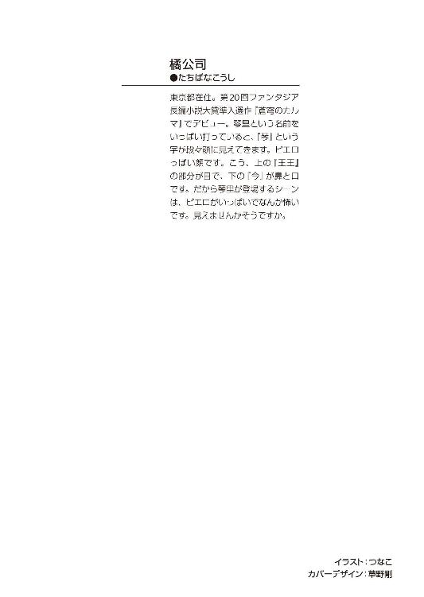
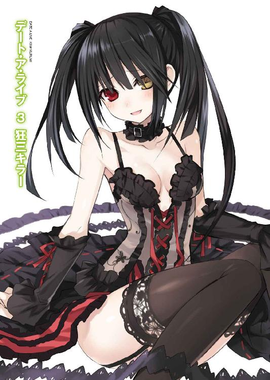
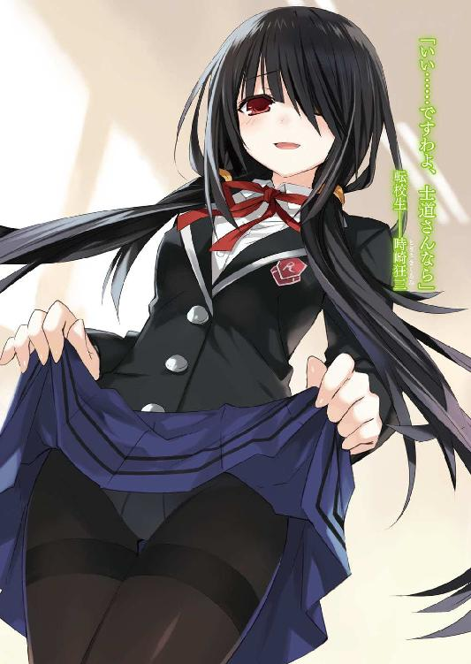
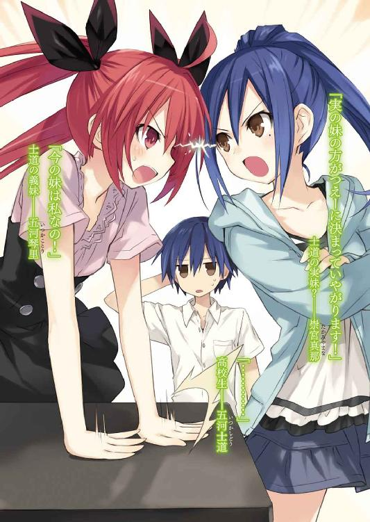
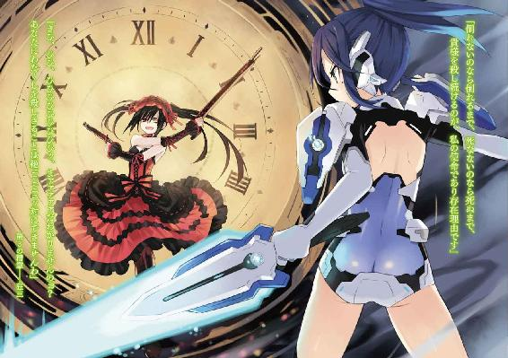
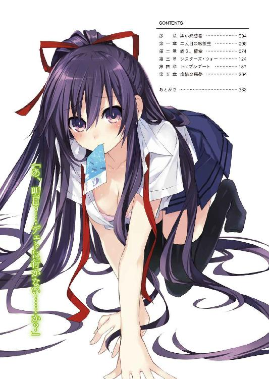
デート・ア・ライブ３
狂三キラー
橘 公司

富士見ファンタジア文庫
本作品の全部または一部を無断で複製、転載、配信、送信したり、ホームページ上に転載することを禁止します。また、本作品の内容を無断で改変、改ざん等を行うことも禁止します。
本作品購入時にご承諾いただいた規約により、有償・無償にかかわらず本作品を第三者に譲渡することはできません。
本作品を示すサムネイルなどのイメージ画像は、再ダウンロード時に予告なく変更される場合があります。
本作品は縦書きでレイアウトされています。
また、ご覧になるリーディングシステムにより、表示の差が認められることがあります。
口絵・本文イラスト つなこ
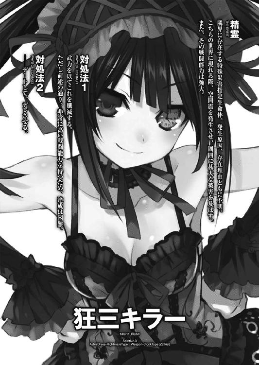
序章 黒い来訪者
「わたくし、精霊ですのよ」
六月五日、月曜日。
黒板の前に立った転校生の言葉に、来禅高校二年四組の教室はシンと静まりかえった。
ただ、皆が皆、同じ顔をして黙りこくったわけではない。
もっとも多いのは、彼女が放った言葉の意味が理解できず、「なんなのこの子。夢見がちなの？ イタい子なの？」と怪訝そうな顔を作った生徒たち。
それに次いで多いのが、彼女のぞっとするほどに美しい容貌に目を奪われ、そもそも言葉を聞き逃していた男子たちである。
──だが五河士道は、そのどちらにも属していなかった。
「......なッ」
眉の間に深いしわを刻み、頬に汗をひとすじ垂らしながら、教卓の横に悠然と立った転校生を注視する。
黒髪を二つに結わえた少女である。肌は真珠のように白く滑らかで、襟元から覗く首は、少し力を入れて握れば折れてしまうのではないかと思えるほどに細かった。
もっとも特徴的なのは前髪である。恐ろしく端整な顔立ちをしているのだが......前髪が異様に長く、顔の左半分を覆い隠してしまっているのだ。
だが、士道はそれに感謝せざるを得なかった。
前髪に隠れていない右目──その視線に晒された瞬間、まるで悪魔に魅入られるかのような陶酔感を覚えたのである。もし両目で見つめられていたのなら、士道も先の男子たちの仲間入りをしていたかもしれない。
士道はごくりと唾液を飲み下すと、ちらと黒板の方に目をやった。
そこには白のチョークで、少女の名が記してある。
「時崎......狂三」
士道は誰にも聞こえないくらいの音量で、その名を呟いた。
精霊。
確かに彼女──狂三は今、そう言った。
その言葉の本当の意味を知る者は......今この教室に三人しかいない。
「............」
士道は、自分の左右の席に視線を送った。
右手に座った少女──夜刀神十香は、目を丸くし口をぽかんと開け、傍から見てもすぐに驚いていることがわかる顔を作っている。
反して士道の左の席の鳶一折紙は、ぴくりとも表情を変えず、しかし冷酷に射殺すような鋭い視線で狂三を見つめていた。
と──左右の二人を見てから視線を前方に戻した瞬間、
「......っ！」
士道は息を詰まらせ、肩を震わせた。
だがそれも仕方あるまい。時崎狂三が、長い睫毛に飾られた右目で、士道の方をジッと見つめてきていたのだから。
「......っ、な──」
士道が身じろぎさえできないでいると、狂三は目と唇をにっ、と微笑の形にした。
「皆さん、どうか仲良くしてくださいまし」
言って、小さく頭を下げる。
戦慄する士道を放置して、ぱちぱちという拍手の音が、教室に広がっていった。
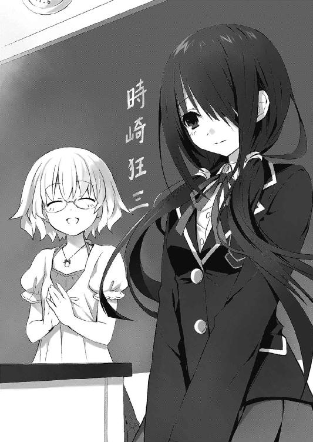
第一章 二人目の転校生
唇を舐めると、汗の味がした。
身体の周囲に展開された随意領域は、重力を初めとして、温度や湿度も思いのままにコントロールすることができる。
ゆえに、わずかとはいえ発汗が認められるということは、そんな外的条件以外の原因が考えられるということだった。代表的なところだと、過度の運動か、重度の疾患か──それとも、異様な緊張か。
「............」
鳶一折紙は呼吸を整えるように唾液を飲み込むと、手にした高出力レイザーブレイド〈ノーペイン〉の柄をぐっと握り直した。
今折紙の華奢な肢体を包むのは、着慣れた高校の制服ではなく、着用型接続装置と戦術顕現装置搭載ユニットだった。
現代の魔術師が魔性の業を振るうために纏う、機械の鎧である。
これを身に纏い、随意領域を展開させた魔術師は、まさに超人といってもいい。
だが──今。超人であるはずの折紙は、完全に追いつめられていた。
『──うわぁぁぁぁぁぁッ!?』
「......っ」
ヘッドセットに搭載された通信機から聞こえてきた悲鳴に、微かに息を漏らす。
聞き覚えのある声。折紙が所属する対精霊部隊、通称ＡＳＴの隊員のものだ。
これで──九人目。折紙以外の味方が全て倒されてしまったことになる。
「......く」
折紙は障害物に身を隠したまま、脳内に指令を発した。
瞬間、折紙の周囲に展開された随意領域内部の光が屈折し、折紙の視界からは見ることができないはずの景色が網膜に映り込んでくる。
陸上自衛隊天宮駐屯地に近接した、特別演習場。
折紙たちＡＳＴが、顕現装置を用いての演習をする際に使用される、魔力処理の施された特設フィールドである。
そんな、廃墟のような障害物が立ち並ぶその空間の中心に、髪を一つに結った少女が悠然と佇んでいた。
──崇宮真那。
折紙は少女の名を心中で反芻しながら、その姿を改めて見直した。
年の頃は一四、五といったところだろう。左目下の泣き黒子に飾られた利発そうな貌には、まだどこかあどけなさが見て取れる。
だがその小さな体躯を包むのは、少女にはまるで似つかわしくない機械の鎧──ＣＲ－ユニットだった。
折紙たちのそれとは少し型の異なったワイヤリングスーツに、両肩に装着された盾のような兵装。折紙たちの装備よりも一世代新しい試作機という話である。
「──さ、あと一人です。どこからでもかかって来やがってください」
真那は、足下に倒れたＡＳＴ隊員を一瞥もせず、そう言ってきた。
ここからは見えないが、周囲に広がった障害物の陰には、無力化された八人のＡＳＴ隊員が倒れているはずである。
あまりに、圧倒的。まるで精霊を相手取って戦っているかのようですらあった。
──彼女がこの天宮駐屯地に配属されてきたのは、先月末のことだ。
曰く、陸自のトップエースである。
曰く、顕現装置の扱いは世界でも五指に入る。
曰く──精霊を、単独で殺したことがある。
確かに話だけを聞けば、規格外の怪物だ。
だが、出合い様に「この中に一人でも、私に勝てる人がいるのか」だなんて言われたなら、精鋭を自負するＡＳＴ隊員たちが黙っていられるはずもなかった。
ゆえに、真那の力を確かめるという名目で、一対一〇の特別演習が行われたのだ。
折紙としては、正直あまり興味なかったのだが......
「............」
無言で。折紙は、先日真那と交わした会話を思い起こした。
真那がこの天宮駐屯地に配属になった日、ちょうど折紙たちは先日の戦闘映像を見ていたところだった。
そこで真那が、映像に映っていた少年──五河士道を見て、言ったのだ。
──『兄様』、と。
士道にこんな妹がいるだなんて聞いたことがない。のちに折紙がそのことを問うと、真那は驚いたような仕草を見せてから口を開いた。
（！ 鳶一一曹は兄様とお知り合いなのですか!? ふむ......ええ、いいですよ、詳しく話しても。──ただし、今度の演習、あなたも参加しやがってください。それが条件です）
そう言われては、選択の余地がなかった。
結局、折紙も演習に参加することになったのだが──
結果は、見ての通りである。
九名が既に無力化され、折紙もまた、近接用レイザーブレイド以外の装備を失っていた。
反して真那は、未だ傷一つ負っていない。
「......さあ、このままでは時間切れになってしまいやがりますよ？」
真那がふうと息を吐きながら、敬語になりきっていない敬語で言ってくる。
このまま隠れていても仕方がない。折紙は身体を浮遊させ、真那の前に姿を現した。
「──お。ようやく腹が決まりやがりましたか？」
「............」
折紙は脳内に指令を発し、背中のスラスターを駆動させた。
もとより折紙の手に残った武器は〈ノーペイン〉一つのみである。接近戦を仕掛ける以外に道は残されていない。身体を前傾させ、凄まじいスピードで空を駆ける。
「潔し。嫌いじゃねーです、そういうの」
真那は唇の端を上げると、肩のユニットを可変させ、両の腕に装着した。
「〈ムラクモ〉──双刃形態」
すると次の瞬間、盾の先端部から巨大な光の刃が姿を現す。
しかし、折紙は止まらなかった。
〈ノーペイン〉を振りかぶり、さらにスピードを上げる。
だが、このまま吶喊しても返り討ちに遭うことはわかりきっていた。
「──今」
ゆえに、自分と真那の随意領域が触れた瞬間、随意領域を急速に収縮させる。
通常、半径三メートルに展開されているそれを、一気に一〇分の一程度にまで。
瞬間、随意領域外に顔を出してしまったスラスターの後部が、本来の重量を取り戻す。折紙はそれに合わせてワイヤリングスーツとスラスターの接続を解除すると、光の刃を消した〈ノーペイン〉の柄を抱き込むようにして身体を丸め、真那の脇をすり抜けた。
「なっ......？」
さすがにこの行動は予想外だったのだろう、真那が目を丸くする。
そんな真那目がけ、主を失ったスラスターが慣性に従い、巨大な弾丸となって迫った。
「っ！ あめーです......っ！」
しかし真那はすぐ落ち着きを取り戻すと、光の刃でスラスターを縦に両断した。
バチバチという火花が散り、左右に断ち分かたれたスラスターの残骸が、煙を噴いて地面に落ちていく。
だが──それこそが折紙の狙いだった。
「──っ！」
〈ノーペイン〉の刃を再度出現させ、真那の背中に切っ先を向ける。
真那がスラスターの迎撃に気を取られている一瞬の隙を衝いた、必中の一撃である。
折紙の狙い通り、〈ノーペイン〉の刃が、真那のＣＲ－ユニットに浅い傷を付ける。
──しかし。
「な......っ」
折紙は思わず声を上げていた。
レイザーブレイドの切っ先が真那の装備に届いた瞬間、全身の体表を手の平でくまなく撫で回されているかのような感覚が生まれ──折紙の動きが止められたのである。
「──ふぅ、危ねーです」
真那が首を回し、折紙に視線を送ってくる。
折紙は息を詰まらせた。間違いない。真那が随意領域で以て、折紙の動きを止めたのだ。
......確かに、全く予想していなかったわけではない。
もしかしたら真那の反応速度であれば、スラスターを迎撃した次の瞬間に、折紙の動きに対応することも可能かもしれないとは思っていた。何しろここは真那の身体のすぐ近く。彼女の領地たる随意領域の中なのである。
だがその上で、三〇センチにまで凝縮した折紙の随意領域であれば、その中で活動することは不可能ではないと目算を付けていたのだ。
だが......その予想は甘かったらしい。
「残念、詰みです」
真那が身体をゆっくりと回転させ、折紙の肩口に光の刃を触れさせる。
その瞬間、頭上からブザーが鳴り響き、次いで、ヘッドセットから音声が聞こえてきた。
『演習終了。崇宮真那三尉の勝利です』
演習終了後。
駐屯地の格納庫に戻った折紙は、その場に腰を落ち着けながら床を眺めていた。
十数分前の感触を思い出すように、くっと右手を握る。
「............」
先ほど随意領域を解除したばかりのため、身体がずっしりと重い。腕を持ち上げて手を握るだけの作業ですら、まるで粘度の高い泥の中を泳ぐかのような不自然さが伴った。
だがそんな当たり前の事象すら、暗に自分の無力さを示しているかのように思われて、折紙は無意識のうちに握った拳に力を入れていた。
「崇宮──真那」
冗談のような精度を誇る随意領域に、特殊兵装を己の手足のように使いこなす練度。なるほど彼女は、噂に違わぬ天才だった。
きっとこれは歓迎するべき事態なのだろう。真那は人間であり、ＡＳＴ隊員である。つまり折紙と同じく、精霊を倒すことを目的としているのだ。彼女ほどの力を持った魔術師がいれば、作戦の成功率はぐっと上がるだろう。
だが、それを頭で理解してなお、折紙の心中には不可解な焦燥と苛立ちが募っていた。
「......強い」
と、握りしめた拳を睨め付けながら折紙が言ったとき、頭上から声が聞こえてきた。
「──あなたも大したものですよ、鳶一一曹」
ふっと顔を上げる。いつの間に近づいてきていたのだろうか、そこにはワイヤリングスーツのみになった真那が、両手にスポーツボトルを持って立っていた。
「よければどーぞです」
言って、左手に持ったボトルを差し出してくる。
「............」
随意領域を解除したばかりだというのに、真那の動きには何ら遜色が見られない。
複雑な心境で真那を見上げながら、重い腕を持ち上げ、ボトルを受け取る。
真那は満足げにうなずくと、ドリンクを一口飲んでから言葉を続けてきた。
「正直、驚きました。剣先数ミリとはいえ、私に攻撃を当てやがった人は久しぶりです」
嫌味でなく、ただ純粋に折紙の技量を評価するように言ってくる。
しかし。折紙は軽く奥歯を噛んだ。
「どうすれば──あなたのように強くなれるの」
折紙が問うと、真那は困ったように眉を八の字にした。
「どうすればと言われましても......」
「あなたは、精霊を殺したことがあると聞いた。詳しい話を聞きたい」
折紙の言葉に、真那が小さく肩をすくめる。
「精霊を......殺した、ですか。まあ、言葉の上では間違っちゃねーですが──」
歯切れの悪い返事に、折紙は小さく首を傾げた。
「どういうこと？」
「んん......ちょっとアレに関しては、他の精霊と同列に扱わねー方がいいというか」
「何でもいい。どんな些細な情報でも構わない。教えて」
「まあ、構わねーですが......たぶん今言わねーでも、そう遠くないうちに直接見る機会が巡ってきやがると思いますよ。──そのために、私が配属されたわけですし」
思わせぶりな言葉に、折紙は小首を傾げた。
「......？ あなたがここに配属されたのは、戦力増強のためと聞いている」
「間違っちゃねーですよ。ただもっと正確に言うと、ある精霊の反応がこの近辺に確認されやがったからなんです」
「ある精霊？」
「ええ。長いこと私が追っている最悪の精霊です。識別名は──」
と、真那が言葉を継ごうとした瞬間、スパン！ スパン！ と二人の頭が叩かれた。
「......っ」
「あたっ」
折紙と真那は同時に頭部を押さえると、これまた同時に右手に顔を向けた。
そこには、自衛隊常装に身を包んだＡＳＴ隊長・日下部燎子が、片手に丸めた冊子のようなものを握りながら立っていた。
「あ・ん・た・ら、ねぇ......」
ピクピクと額に浮き出た血管を蠢かせながら、ビッ！ と演習場から回収された鉄塊──真っ二つに断ち分かたれたスラスターユニットを指さす。
「模擬戦って言ったでしょうが！ 何貴重な装備潰してくれてんの！」
二人はしばしの間、燎子の指の先を眺めてから口を開いた。
「生半可な方法では、崇宮三尉に隙を作ることはできなかった」
「やはり模擬戦とはいえ本気でやらねーと、正確なデータはとれねーと判断し──」
そこで再び、二人の頭が叩かれる。
「ご高説は、顕現装置搭載したユニットのお値段をちゃんと調べてから吐きなさい。ウチだって、予算が無尽蔵にあるわけじゃないのよ」
「了解」
「善処するです」
「ったく......」
燎子は「以後気をつけるように」と残し、肩をいからせながら歩いていった。
その背中が見えなくなってから、真那が不満げにぶー、と唇を突き出す。
「まったく、隊長殿にも困ったものですね。そんなみみっちいことだから、精霊にいいようにされちまいやがるんですよ」
「同感」
折紙がうなずくと、真那は嬉しそうに唇の端を上げた。
「あなたとは気が合いそうです、鳶一一曹。こちとら、精霊なんて化物を相手取ってるんです。金に糸目なんて付けやがってたら、勝てるものも勝てなくなっちまいやがります」
言って、大仰に肩をすくめる。
折紙は無言で、真那の顔を改めて見直した。
やはり......目鼻立ちというか、雰囲気が、士道に似ている。
だが、士道に妹は一人しかいなかったはずだ。
会話を交わしたことはなかったが、何度か見たことがある。五河琴里。言わずもがな、真那とは別人である。
だが──折紙データベースによると、確か士道は養子だったはずだ。彼女が本当に士道の妹である可能性も、完全には否定できなかった。
「崇宮三尉」
折紙は、自然と口を開いていた。
「約束。あなたと士道の関係を教えて」
「士道......？ 誰ですか、それは」
真那が首を傾げる。......おかしい。折紙は訝しげに続けた。
「先日見ていた〈ハーミット〉戦の映像──そこに映っていた少年の名前。あなたが、兄様と呼んだ人。演習に参加したら、教えてくれるという約束」
「......っ、兄──様......？」
と、真那が小さく眉をひそめた。
「どうしたの」
「いえ、少し、頭痛が......」
言って、側頭部を手で押さえる。
折紙はそんな真那の様子に見覚えがあった。──先月、映像で士道を見たときと同じだ。
「......っ、失敬失敬。もう大丈夫です。ええと、兄様のことでしたね」
真那は、頭痛を放逐するように軽く頭を振ってから、ワイヤリングスーツの胸元をまさぐると、銀色の小さなロケットを取り出した。
そして、それを開いてみせる。中には、小さな男の子と女の子の写真が入っていた。
「──士道」
小さく呟く。そう、それは間違いなく、幼い頃の五河士道である。そして隣に写っている、泣き黒子が特徴的な女の子は──どう見ても、真那だった。
「これは？」
「昔の写真です。──生き別れた兄様の、唯一の手がかりです」
「詳しく、教えて」
折紙が言うと、真那は困ったように頭をかいた。
「すまねーのですが......あんまり覚えてねーのです」
「......？ どういうこと？」
「いえ......実は私、昔の記憶がねーのですよ」
「......記憶喪失？」
「平たく言えばそうなりやがります。──でも、あの映像を見た瞬間、思い出したのです。私は、あの方を兄様と呼んでいたことがある、と」
「ならばなぜ、あんな条件を」
折紙が怪訝そうに問うと、真那はすまなそうに頭を下げた。
「いやー......鳶一一曹の実力を見ておきたかったのです。この部隊の中で一番やりそうなのがあなただったもので。──実際、期待以上でした」
「............」
折紙は無言で真那の顔を見つめ返した。あそこまで圧倒的な差を見せつけられてから『期待以上』だなんて言われても、少し複雑である。
と、真那が、上目遣いになりながら言葉を続けてきた。
「それで......鳶一一曹。ごめんなさいついでにもう一つお願いがあるのですが」
「なに」
「虫の良い話だとは思うのですが、その......兄様のこと、知っていやがるのですよね？ わかる範囲でいいので、教えてくれねーですか？」
「............」
なんだか立場があべこべになっている気がするが......折紙は少しの間思案を巡らせてから、小さく首肯した。
「──名前は、五河士道。年齢は一六歳」
「はい」
「家族構成は父・母・妹。現在両親は海外出張で家を空けている。家事全般が得意」
「ふむ......」
「血液型はＡＯ型のＲｈ＋。身長一七〇・〇センチ。体重五八・五キロ。座高九〇・二センチ。上腕三〇・二センチ。前腕二三・九センチ。バスト八二・二センチ。ウエスト七〇・三センチ。ヒップ八七・六センチ」
「......はい？」
「視力は右〇・六、左〇・八。握力は右四三・五キロ、左四一・二キロ。血圧は一二八～七五。血糖値は八八mg/dl。尿酸値は四・二mg/dl」
「す、ストップストップ！ そこまでは聞いてねーです！」
「そう」
焦るように叫ぶ真那に、折紙は小さくうなずき返した。
「ていうか、え、なんですかその詳細なデータ。冗談ですか？」
「冗談ではない。全て正確な数値」
「............」
折紙が真顔で返すと、真那は頬に汗を浮かべて眉をひそめてきた。
「......失礼、鳶一一曹と兄様は一体、どのようなご関係でいやがるのでしょうか」
真那の問いに、折紙は間髪入れず、何の迷いも躊躇いも逡巡もなく唇を開いた。
「恋人」
◇
「ちょっと。何してるのよ、士道」
「へ？」
自宅のリビングで。五河士道は、不意にそんな声をかけられて、素っ頓狂な声を発した。
振り向いてみる。そこには長い髪を黒いリボンで二つ結びにした制服姿の女の子が、腰に手を当てて仁王立ちしていた。
士道の妹・五河琴里──の、司令官モードである。
丸っこい愛嬌のある双眸は不機嫌そうに歪められ、口にくわえられたチュッパチャプスの棒は、威嚇する動物の尻尾のようにピンと立てられている。
「何をって......学校に行こうとしてるんだが」
士道は自分の格好を見下ろした。高校の制服（夏服）を着て、右手には鞄、左手には弁当の入ったランチバッグを握っている。どう見ても登校スタイルだ。
しかし琴里は、アメリカのホームドラマのように肩をすくめながら首を振った。
「オーケイ、話を整理しましょう。士道が左手に持っているものは何？」
「弁当だが」
「自分が食べるもの？」
「いや......十香だけど」
そう。士道の分の弁当は、鞄の中に収められている。これは家の隣のマンションに住む少女──クラスメートの夜刀神十香のために、士道が作ったものだ。
「それをどうやって十香に渡すの？」
「郵便受けに入れるつもりだけど......」
さすがに学校で手渡すわけにもいかないので、郵便受けの合い鍵を使い、毎朝そこに置いておくことにしてあるのだ。
そこで、士道は「あ」と短く声を発した。
「ああ、つまりあれか。そろそろ暑くなるから、衛生面での問題があるってのか？ 安心しろ。ちゃんと保冷剤を入れてあるし、抗菌シートもつけてる。まあホントは梅干しも入れられればいいんだけどな、ほら、十香梅干し苦手だか──らぁッ!?」
言葉の途中で琴里にすねを蹴られ、士道は前屈みになって悶絶した。鞄はその場に取り落としてしまったが、十香の分の弁当はどうにかキープした。
「な、何しやがる......っ！」
「眠たいこと言ってるからよ。なんでわざわざ郵便受けに入れるのよ」
「いや、そうしないと渡せねえだろ。そもそも登校時間が違うんだし──」
「そこよ」
琴里が、口にくわえていたチュッパチャプスを指で摘み、ビシッと士道に向けてくる。
「十香が隣に越してきてから、約二週間。──士道、十香と何回一緒に登校した？」
「え？ ええと......」
ふっと視線を上の方にやり、頭の中で数えてみる。
「......そういえば、ないな。一度も」
鞄を取り落として、自由になった右手で頬をかきながら言う。
わけあって士道と十香は、この家で少しの間同居していたことがあったのだが、その際、クラスメートに妙な噂を立てられぬよう、時間をずらして登校していたのだった。
とはいえ、今はもう同棲ではなくお隣さんなのだから、そこまで神経質になる必要もない。実際、帰るときはほぼ毎日一緒だったりする。
だが癖が抜けていないのか、今でも登校時間は士道の方が少し早いままだったのだ。
......まあ、十香が士道に比べて少々お寝坊さんだという理由もあるのだが。
琴里はやれやれといった調子で額に手を当てた。
「せっかくお隣に住んでて、クラスも同じだってのに、わざわざ登校イベントを潰す理由がわからないわ。──今後また別の精霊が出現したら、十香にかかりきりになってるわけにもいかなくなるんだから、一緒にいられるときはいてあげなさい」
「む、むう......」
士道はうめくようにのどを鳴らして黙り込んだ。
──この世界には、時折空間震という突発性災害が発生する。
『空間の地震』の名の通り、震源地を中心とした特定範囲の空間が、凄まじい爆発とともに抉り取られるように消失してしまう現象である。
空間震の予測手段や、建造物の速やかな修復方法が確立されつつある現代においても、それは深刻な天災であった。
一般には公表されていないが──この空間震の原因とされているのが、『精霊』と呼ばれる存在なのである。
通常はこことは別の世界に存在する精霊が、こちらの世界に現れるとき、空間の境界が激しく揺らぐ。それが、空間震発生のメカニズムといわれている。
無論、それを知った人間たちは、その災害を防ぐために様々な策を講じた。
主な方法は、二つ。
一つは、武力を以て精霊を殲滅すること。
そしてもう一つが──
「わかってる？ 士道。次の精霊が現れたら、またデレさせなきゃいけないんだからね」
「わ、わかってるって」
士道は辟易するように吐息しながら答えた。
そう。それがもう一つの方法。
出現した精霊に接触、会話を重ね、デートして、好感度を上げ──キスをする。
なぜかはわからないが、それによって精霊の力を封印することのできる能力が、士道には備わっていたのである。
そしてその力に目をつけたのが、琴里の所属する組織〈ラタトスク機関〉だった。
「よろしい。それじゃあ、今日は十香と一緒に登校すること。オーケイ？」
「ん、了解した」
別に異存があるわけでもない。士道は鞄を拾い上げると、玄関の方に歩いていった。
「ちょっと士道。忘れ物よ」
と、その途中、琴里に声をかけられて、士道は自分の手元を見直した。
「あ？ 他に何かあったか」
「これよ、これ」
琴里が小さなインカムを左手の平に載せ、腕を伸ばしてくる。
そして右手の人差し指を立てると、ちょいちょい、と自分の耳を指さす。
──まるで士道に、そのインカムを今装着しろとでも言うように。
「......ええと？ ど、どういうことで......？」
「ちょうどいいから、訓練も兼ねちゃいましょ。ほら、装着装着」
すると琴里はにぃ、と唇の端を上げ、半ば無理矢理士道の右耳にそれを装着した。
「く、訓練って......今度は一体何するってんだよ」
「そうね──今日の課題は、十香に嫉妬させないよう振る舞うこと、よ」
「は......はぁ？ 嫉妬......させない？ どういうことだ？」
「ん。先月、四糸乃が現れたときの十香のことを覚えてる？」
「......っ、あ、ああ」
士道は小さくうなずいた。
四糸乃とは、十香の次に現れた小さな女の子の精霊である......のだが、その彼女が現れたとき、十香が、なぜか妙に拗ねてしまったのだ。
「要はあれ、士道が他の女の子と仲良くしてるのが、十香は面白くないわけよ」
「へ......？ な、なんでだ？」
士道が言うと、琴里は士道を小馬鹿にするように、はふぅと息を吐いた。
「と・に・か・く。士道が他の子と仲良くしてると、十香は段々と精神状態が安定しなくなって──結果、精霊の力が逆流してしまうのよ。新しい精霊が現れるたびにそれじゃあ、やっぱり困るのよね。──そこで、よ」
琴里が、立てていた指を士道に向ける。
「今日の登校中、〈ラタトスク〉の機関員が十香の嫉妬を煽るようにいろいろと工作をするわ。士道はそれを受けつつ、上手く対応してちょうだい」
「上手く、って......それ、具体的にどうするんだ......？」
「いいから、ほら」
士道が困惑気味に頬をかくも、琴里は聞く耳を持たないようだった。士道を玄関の方に向かせ、背中を押してくる。
「そろそろ十香が家を出る時間でしょ。細かいことはインカムで指示するわ」
「いや、ちょ、ちょっと......」
未だ脳内で状況の整理がついていない士道だったが、このモードの琴里に逆らっても無駄なことはここ二ヶ月で痛いほどよくわかっていた。仕方なく靴を履く。
と、そこで士道の背に、再度琴里が声をかけてきた。
「ああ、そうそう、もう一つ。今日はちょっとしたゲストがいるんだった。まあ挨拶程度になると思うけど、ちょっと話してあげてちょうだい」
「ゲスト？」
士道が問うも琴里は答えず、階段をトントンと上がっていってしまった。インカムで指示を出すと言っていたので、たぶん二階のベランダから〈フラクシナス〉に回収してもらうつもりなのだろう。
首をひねる。が、そうしていても仕方がなかった。扉を開け、外に出る。
瞬間、士道の網膜を眩しい日差しが襲った。
「ん......」
今日は六月五日。もう梅雨に入っているはずなのに、なぜかここ最近は天気に恵まれていた。──まるで、先月のうちに空が雨を使い切ってしまったかのように。
例年なら雲に遮られているはずの日光が激しく地面に照りつけ、気温を上昇させている。さすがに暑さに耐えかね、士道も今日から制服を夏服に移行していた。
と──そこで。
「あれ......？」
陽光の中、五河家の真ん前に立っていた人影を目にして、思わず目を見開く。
そこにいたのは、琴里と同年齢くらいの女の子だった。
薄手の涼しげなワンピースを身に纏い、目元を覆い隠すかのように目深に白の麦わら帽子を被っている。帽子のつばの下からは海のように青い髪が覗き、さらにその合間から、蒼玉の瞳がちらりと士道の方を見ていた。
そして──もっとも特徴的なのはその左手である。なぜかそこには、コミカルな意匠の施されたウサギの人形が装着されていたのである。
「四糸乃!?」
そんな個性的な風貌の少女の名を忘れるはずがない。士道は門を開け放ち、四糸乃のもとまで足を進めた。
『やっはー、士道くん。ひっさしぶりだねー！』
と、四糸乃の左手に装着されていたウサギのパペットが、口をパクパクさせてくる。
「お、おう、久しぶりだな──ええと、よしのん」
小さくうなずきながら、パペットの方に返す。このパペットの名は『よしのん』。四糸乃の友だちである。
それ自体は普通の人形であるし、声も腹話術には違いないのだが──四糸乃がこれを装着しているとき、彼女の中に『よしのん』という別人格が並列で存在しているのだという。
要は、パペットの動きや台詞は、四糸乃の意思と関係なく行われているのだ。
「どうしたんだ、今日は。もう検査とかってのは終わったのか？」
『んー、検査自体は結構前に終わってたんだけどねー。ちょーっと練習をしてたのさー』
『よしのん』が短い腕を楽しげに動かしながら言ってくる。
「練習って？」
士道が言うと、『よしのん』が四糸乃の帽子のつばをくっと上げた。
「......っ」
四糸乃が、怯えるようにビクッと肩を揺らす。
だがこくんと唾液を飲み込む仕草を見せたあと、震える唇を開いた。
「お......っ、おはよう、ございます、士道さん......っ！」
先月よりも少しだけはっきりとした声音で、四糸乃が言ってくる。
「おお!?」
士道は目を見開いて軽く身体を反らした。
恥ずかしがり屋で人見知りな四糸乃は、対外的な反応をほとんど『よしのん』に任せ、自分ではあまり喋りたがらないのである。少なくとも士道は、四糸乃のこんなに大きな声を聞いたのは初めてだった。
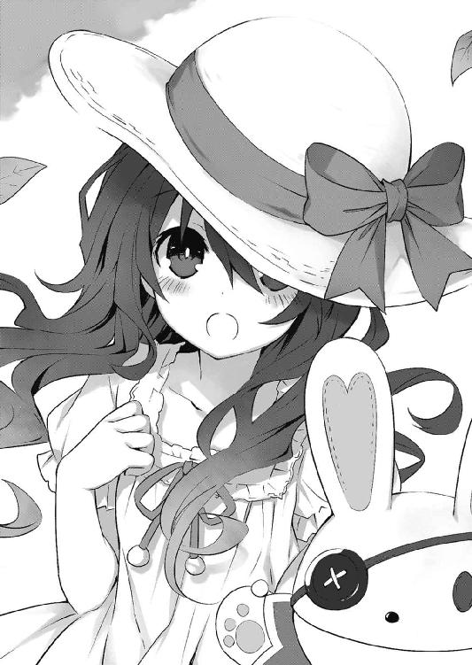
と、そこで右耳に、フフンという声が聞こえてくる。──琴里だ。どうやらもう〈フラクシナス〉にいるらしい。
『どう？ もう私や令音なんかとも話せるようになったのよ？』
「本当か？ すごいじゃないか四糸乃！」
士道が言うと、四糸乃は恥ずかしそうに帽子のつばを下げ、しかし口元をもごもごと嬉しそうに動かした。
と、チュッパチャプスを口の中で転がす音をさせてから、琴里が続けてくる。
『まだ先になると思うけれど、そのうち四糸乃も艦外に住ませようと思ってるの。──よしのんっていう話し相手がいるからか、十香よりストレス値の蓄積は少ないし、このままでも大丈夫といえば大丈夫なんだけど......やっぱり〈ラタトスク〉としては、精霊にきちんと社会性を身につけてもらって、ちゃんと幸せな生活を送って欲しいわけなのよ』
「ふむ。いいんじゃないか？」
『ん。だから、今日はちょっと顔見せにね』
「っていうと？」
『四糸乃が艦外で暮らすとなったら、まあ第一候補はそこでしょう？』
琴里の声に合わせ、士道は顔を上げて五河家の隣に聳えたマンションを見やった。
十香が住んでいるこの建物は〈ラタトスク〉が特注した精霊用特設住宅という話だ。万が一の事態が起こったとしても、そう簡単には壊れないようになっているらしい。
「まあ......そうなるだろうな」
『となると──十香とちゃんと話せないと厳しいでしょ』
「あー......」
士道は納得するように目を細めた。
確かにそうだろう。部屋は違うだろうが、ある意味お隣さんとなるのだ。
いや、それ以前に十香と四糸乃は精霊同士なのである。どうやら四糸乃はまだ少し十香に苦手意識があるようだったが、きちんと会話ができた方がいいに決まっている。
と──そこで、マンションの自動ドアが静かに開いた。
そして中から一人の少女が、大きなあくびをこぼしながら歩いてくる。
眩しい陽光の中にくっきりと浮かび上がった長い夜色の髪に、美しい面。その貌に鎮座する双眸は水晶。
士道のクラスメートであり、精霊。夜刀神十香である。
「......っ」
その出で立ちを見て。士道は息を詰まらせた。
今十香は、先週までのブレザーではなく、半袖のブラウスにリボンという夏服スタイルに身を包んでいたのである。
まあ士道も今日から夏服であるし、何もおかしいことはないのだが......いつもよりも身体のシルエットがはっきりとした服装に、不覚にもドキッとしてしまったのだ。
「ん......？ シドー!?」
十香はそこでようやく士道の存在に気づいたらしく、目を見開いて声を上げてきた。
「どうしたのだ、朝に会うとは珍しいではないか！」
「あ、ああ......た、たまには十香と一緒に学校に行ってみるのもいいかなあ......なんて」
士道が目を泳がせながら言うと、十香が薄く頬を染めながら顔をパァっと明るくした。
「そうか！ うむ、それは──その、あれだ、いいと思うぞ！」
十香が嬉しそうに深く首肯する。......なんというか、ここまでストレートに喜ばれると、なんだか気恥ずかしかった。
士道は次に継ぐ言葉に困って、手にしていたランチバッグを差し出した。
「あと、これ。今日の分な」
「おお！」
十香はそれを受け取ると、満面の笑みを作った。
「今日の、今日のおかずは何だ!?」
「ん、今日はアスパラのベーコン巻きとメンチカツに卵焼き、それとマカロニサラダにプチトマトだな。あ、ご飯はチキンライスにしてあるぞ」
「なんと......！」
士道が言うと、十香は少し戦慄したような表情を作り、何やら辺りの様子を窺うようにキョロキョロしながら、ランチバッグを抱え込んだ。
「だ、大丈夫なのかシドー」
「は......？ な、何がだ？」
士道がポカンとした調子で言うと、十香が声をひそめながら続けてくる。
「アスパラのベーコン巻きとメンチカツを一緒に入れてしまうなどという贅沢な真似、皆に知られれば大変なことにはならんか......？ 最悪、この弁当を巡って暴動に──」
「いや、ならねえって」
「そ、そうか......ならいいのだが。い、いやしかし、さすがにご飯をチキンライスにするだなんて神をも恐れぬ所行......国際法に触れはしないだろうか」
一体どこでそんな言葉を覚えたのだろうか。十香が深刻そうな調子で言ってくる。
「いやいや。......あ、チキンライス苦手だったか？ 俺のやつと交換してもいいぞ？」
弁当の中身がまったく一緒だと、また折紙に噛みつかれそうだったため、二週間前から、微妙にメニューを変えているのである。まあ、士道の方は昨日の夕食の残りがメインなので、さほど手間はかかっていないのだが。
しかし士道が提案した瞬間、十香はランチバッグを抱え込みながら、ブンブンブンブンブン!! と、首が落ちてしまうのではないかと思えるほどに、横に振りまくった。
ただならぬ様子に苦笑する。まあ、ここまで喜んでもらえれば、毎朝拵えている甲斐もあるというものである。
十香は未だ、少し緊張した面持ちでランチバッグを持ち直すと、動悸を落ち着けるように大きく深呼吸をした。と、
「ぬ？」
十香が不意に目を丸くし、士道の隣にいる少女に顔を向けた。どうやら、今の今まで気づいていなかったらしい。
「おお、四糸乃ではないか。久しぶりだな！」
屈託のない笑みを浮かべ、十香が話しかける。
色々と悶着はあったものの、十香はもう、さほどそのことを気にしていないようだった。
「......っ！」
だが、四糸乃は肩を震わせて後ずさった。
『がんばれっ！ がんばれっ！』
「っ、う、うん......」
左手の『よしのん』にエールを送られ、何とか踏みとどまると、すぅぅ......と息を吸ってから足を踏みしめた。
そして、意を決するように眉をキリッと動かし、
「あ......っ、あめんぼ、あかいな、あいうえお......っ！」
なぜか、発声練習の文句を叫んだ。
「......むう」
声をかけられた十香は困惑気味に眉をひそめると、士道に視線を向けてきた。
「これは......どういう意味だ？ 暗号か？」
「や......四糸乃？」
士道が苦笑しながら問うと、『よしのん』がパタパタと手を振ってくる。
『あー、今のナシ！ 練習の成果が出すぎただけだからね！ リテイク！ もっかい！』
そして四糸乃と二、三言葉を交わした。四糸乃が小さくうなずき、再び十香の前に立つ。
「お──おは、よう......ござい、ます......」
士道のときよりも小さな声。でもしっかりと、その言葉を口に出した。
「おお、おはようだ！」
「......っ」
四糸乃はまたも身体を震わせたが......どうにかその場に踏みとどまった。
しばしの間、十香と四糸乃が向かい合いながら、無言が流れる。
すると士道の右耳に、琴里の甲高い声が響いてきた。
『──何黙ってるのよ士道。四糸乃が不安がってるわ。何か会話を振ってあげなさい』
「え......？ あ、ああ......」
言われて、ちらと四糸乃の方を見る。
そういえば、最後に会ったときと少し違うところがあった。
「四糸乃、今日は麦わら帽子なんだな」
確か、前に見たときはキャスケットを被っていたはずだ。
それが今日は、涼しげな白の麦わら帽子になっている。
「......っ、 ......は、はいっ」
四糸乃が一瞬『よしのん』の陰に隠れようとして踏みとどまり、小さくうなずいてくる。
「今日は......暑いからって、その、令音さんが......それで......」
「ああ、なるほど。似合ってるよ。可愛い可愛い」
「............っ！」
士道が言うと四糸乃は顔をボンっ！ と赤くしてうつむいてしまった。
照れ屋なところはまだ直っていないようだった。思わず苦笑してしまう。
『ちょっと、そこで話を終わらせてどうするのよ。十香に会話を繋げないと』
「あ......そうか。──な、なあ、十香もそう思うだろ？」
「む？」
十香は話題を振られると思っていなかったのか、少し驚いたような調子で士道に目を向けてきた。次いで、四糸乃の方に視線を落とす。
「ん。うむ、可愛いぞ、四糸乃」
「......っ！ あ......ありがとう、ございます......」
四糸乃は地面を向きながら礼を言ったあと、ふっと顔を上げて十香の方を見た。
「そ、その......、と、十香さん、も......可愛い、です......」
「ぬ？ な、なんだ......こそばゆいぞ」
言いながらも、悪い気はしないといった感で頬をかく。と、十香は恥ずかしそうにわははと笑ったあと、ちらと士道に視線を向けてきた。なぜか、頬がほんのりと染まっている。
「し、シドーも......そう思うか？」
「へっ？」
まさかこちらに話が戻ってくるとは思わなかった。素っ頓狂な声で返してしまう。
「今日は、先週までとは違う制服なのだが......どうだろうか」
そんなことは会った瞬間に気づいていた。来禅高校の涼しげな夏服は、十香にとんでもなく似合っていた。可愛いか否かなんて言われたら、もう首を千切れるほどの勢いで振るほどに可愛かった。思わず夏季のある日本の気候に感謝してしまったくらいだ。
「お、おう......似合ってるんじゃないか？」
「......む。そうか」
十香はそう言うと、またしばらく無言になった。
次の瞬間、右耳にデデーン、という音が聞こえてくる。
『はい、駄目ー』
「な、なんだあ......？」
『なんだあ、じゃないでしょ。何やってるの士道。もう訓練は始まってるのよ？』
「は......？ ど、どういうことだよ」
声を潜めながら言うと、琴里が盛大なため息を吐いてきた。
『言ったでしょ。今日の課題は、十香に嫉妬させないようにすることだって。──士道、なんで四糸乃には「可愛い」って言ったのに、十香には言ってあげなかったの？』
「へ......？」
士道は間の抜けた声を発して自分の言動を思い返した。......そういえば、「似合ってる」としか言っていなかった気がする。
「だ、駄目なのか......？」
『そりゃあね。目の前で自分以外の女の子が「可愛い」なんて褒められてるのに、自分は言ってもらえないんだもの。──もしかしたら十香も無自覚かもしれないけれど、機嫌メーターが少し低下してるわ』
「で、でも十香はそんなの気にしそうに──」
『あのね』
琴里が、諫めるような口調で言ってくる。
『確かに十香は精霊よ。人間と違うところも多々あるわ。でも、そういうところで十香を特別視しないであげて。十香だってそういうところは、普通の女の子なんだから』
「......っ」
言われて、士道は唇を噛んだ。なんというか、自分の言動が恥ずかしくなって。
精霊だって普通に生活できるはずだなんて言いながら、自分もどこかで、十香は少し普通とは違う存在なのだと思っていたのかもしれなかった。
ぐっと拳を握って十香の方を向き、口を開く。
「と、十香っ！」
「おお......っ!?」
いきなり大声を出したからか、十香が驚いたように肩を揺らした。
「な、なんだシドー」
「おっ、おまえも、可愛いぞ！」
「ふ......ふぇっ？」
十香が、顔を真っ赤にして小さく身体を反らす。
なんか自分も顔が赤いのが自覚できる。でも士道は構わず言葉を続けた。
「ああ、可愛い！ 超可愛い！ すげえ可愛い！ 夏服超似合ってる！ マジで、マンションから出てきたときすげえびっくりした！ 目が釘づけにされた！ 一瞬言葉が出なかった！ それくらい可愛い！ もうたまらなくなるくらい──」
と、そこで十香に手で口を塞がれ、言葉が塞き止められる。
「む......むごっ」
「わ、わかったから少し黙れ！」
十香はそう言うと、プイと後ろを向いてしまった。
そこでハッとする。口に出したのは紛れもない本心である。......でもさすがに、勢いに任せてやりすぎてしまったかもしれない。
士道がそんなことを考えていると、インカムからけたたましい笑い声が轟いてきた。
『ぷ......ッ、くくっ、はは、あははははははははははははは！』
考えるまでもなく琴里である。よく聞くと微かに椅子が軋むような音も聞こえてきた。よっぽど身を捩っているらしい。
『最高よ士道。バカじゃないの？』
「う......うるせ......自分でもわかってるよ」
額に汗を光らせながら、うめくように言う。
「でも、十香をまた怒らせちまったな......おい琴里、どうすればいい？」
『は？ 何言ってるの？』
「へ？」
『十香の機嫌メーターは急上昇、ストップ高状態よ。この上ないくらい超ご機嫌。十香の前に回って顔でも見てみたら？ たぶん面白いことになってるわよ』
「え......？ な、なんで？」
疑問を口にする。しかし琴里は答えず、言葉を続けてきた。
『ま......とりあえずペナルティはナシにしといてあげるわ。──さ、そろそろ四糸乃を回収するわよ。士道たちも、早く登校しないと間に合わないんじゃないの？』
と、琴里が言ったのとほぼ同時に、四糸乃がペコリと頭を下げた。
「きょ......今日は、これで......失礼、します。いってらっしゃい......士道さん、十香さん」
「おう、また来いよ」
「ん──ではな」
士道と十香が軽く手を振る。四糸乃はもう一度深くお辞儀をすると、とてとてと道の向こうに走っていった。
「さ......じゃあ行くか、十香」
「ん、そうだな」
士道は十香とともに、日の光で熱せられたアスファルトの道を歩き出した......のだが、
「......十香？ ちょっといいか」
十香の後ろ姿に違和感を覚え、士道は足を止めた。
そう──十香の装いは涼しげな夏服。そうなると普通、背にはうっすらと下着──要はブラジャーのラインが透けて見えるはずなのだ。だが......
「ぬ？ どうかしたか」
「十香......おまえ、ちゃんと......その、ちゃんと、着けてるか？」
「？ 何をだ？」
「......ぶ、ブラ、を」
躊躇いがちにその単語を口に出す。しかし十香は、不思議そうに小首を傾げた。
「ブラ？ なんだ、それは」
「............ッ！」
士道は息を詰まらせると、十香の背を押してマンションの中に戻らせた。
「ど、どうしたのだ、シドー」
「どうしたじゃねえっ！ お、おまえまさか、今までずっと着けてなかったのか!?」
「だ、だから何をだ!?」
「............っ！」
士道はインカムをコンコンと叩いた。すぐに、琴里の声が聞こえてくる。
『あらま。一応用意しておいたんだけど......そもそも用途がわからなかったみたいね』
「あらま、じゃねえっ！ 冬服ならまだしも、この格好でノーブラはヤバイだろ......！」
『そうね。十香のタンスの一番上に入ってるはずだから、着け方教えてあげてくれる？』
「お、俺が......ッ!?」
『他に誰がいるのよ。ほら、早くしないと遅刻しちゃうわよ』
「......っ、ああ、くそ......っ」
士道は意を決すると、十香に向き直った。
「十香、ちょっとおまえの部屋まで案内してくれ......！」
「ぬ......？ ああ、構わんが......」
未だ困惑気味の十香に連れられ、十香の部屋に案内される。もしものときのためなのだろう、部屋に入るまでに、銀行の金庫もかくやという防壁を三枚ほど抜けた。......このマンション、見てくれのわりには、生活空間はそこまで広くないのかもしれない。
「ここだ」
言って、十香が扉を開ける。中は普通のマンションのような造りになっていた。
士道は扉を閉めると、玄関に立ったまま廊下の奥を指さした。
「よ、よし、じゃあタンスの一番上に入ってるものを持ってきてくれ」
「ぬ......？ わ、わかった」
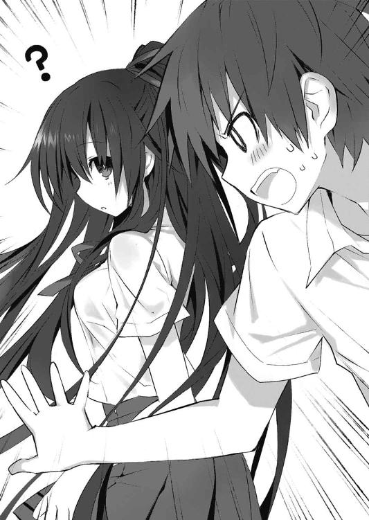
十香は首をひねりながらも靴を脱ぎ、士道の指示通り、薄いピンク色のブラジャーを、無造作に鷲掴みにして持ってきた。
「これでいいのか？」
「っ、あ、ああ......」
同年代の女の子の下着をまじまじと見る経験などそうはない。士道は顔を赤くしながら十香に手招きした。
「い、いいか十香、それをだな......」
別に人の耳があるわけでもないのだが、なんだか恥ずかしくて声をひそめてしまう。
耳打ちするようにブラの用途と着用方法を伝えると、十香は顔面を真っ赤に染めた。
「な......ッ！ ななな何を言っているのだシドー！」
「う、うるせっ！ 俺だって恥ずかしいんだからな！」
士道が言うと、十香は手にしたブラジャーを両手でつまみ上げ、まじまじと見つめた。
「これを......胸に直接......？」
「ああ、そうだ」
「む......むう。......どうしても着けねば駄目か？」
「......駄目だ。たぶんその......ヤバい」
「ど、どういう風にやばいのだ？」
「い......今はいいかもしれないけど、雨とかに降られたら......その、ほら......」
十香はしばしの間キョトンとしたのち、士道の言葉の意味を理解したのだろう、紅潮した頬をさらに赤くした。漫画だったらきっと、耳から煙くらい噴いている。
「な......ッ、何を考えているのだ！」
叫び、十香が胸元を両手で覆い隠す。
「だ、だから着けろって言ってるだろうがっ！」
言うと、十香は「......むう」とうなりながら再度ブラを見つめ、
「わ、わかった。やってみる......！」
耳まで赤くしながらうなずくと、バタバタと廊下を走っていった。
「はあ......危ないところだった」
ほう、と放念の息を吐く。
──だが、数分後。廊下の奥から、十香が未だに赤いままの顔を出してきた。
「し、シドー......ちょっといいだろうか」
言いながら、十香がよろよろと進み出てくる。なぜか、一度脱いだブラウスを前後逆にして袖を通していた。
「十香......？ な、なんだその格好」
「こ、これはどう留めればいいのだ......？」
「あ......」
その一言で、士道は大体の事情を察した。
何しろ初めてのブラジャーである。一人でホックを留めるのは難易度が高いだろう。
士道はしばしの間思案を巡らせ──
『ない頭絞ってないで、ちゃっちゃと留めたげなさいよ』
面倒そうな琴里の言葉に、ぴくりと頬を動かした。
何か言い返そうと思わなくもなかったが......代替案があるわけでもない。士道はごくりとのどを鳴らしたのち、震える唇を開いた。
「と......留めてやるから後ろ、向け」
「な......っ」
十香は目をまん丸に見開いたが、他にいい方法が思いつかないのは彼女も同じだったらしい。しばしの逡巡のあと、そろそろと士道に背中を向けてきた。
ボタンの留まっていないブラウスの隙間から、艶めかしい背中が覗く。士道は思わず生唾を飲み込んでしまった。
「あ、あまり見るな......」
十香が恥ずかしそうに顔を背けながら、間違ってブラウスが落ちてしまわぬよう、きゅっと自分の肩を掴む。士道はハッとして首を振った。
「ぜ、善処する......」
士道は頬に汗を垂らすと、「不可抗力、不可抗力」と唱えながら、震える指でホックを留めた。
......今度からフロントホック式にしてもらおうと心に決めながら。
「むう......なんだか動きづらいぞ」
「......我慢しろ。そういうもんだ」
「む、むう」
十香が、慣れない様子で身じろぎする。士道は未だ熱の引かない額に手をやりながら嘆息した。
と、そんな何くれとない会話をしながら、一〇分ぐらい歩いた頃だろうか。
丁字路に差し掛かった士道と十香のもとに、何やら走るような足音が聞こえてきた。
「ん？」
士道が眉をぴくりと動かし、そちらに目をやったときにはもう遅い。
左方から高校生と思しき少女が、トーストをくわえながら、
「遅刻遅刻～！」
なんて、今日日少女漫画でも聞かないような台詞を吐きながら、凄まじいスピードで走ってきたのである。ちなみに、トーストをくわえているにもかかわらず、言葉の発音は完璧だった。
「な......っ！」
咄嗟のことに身を引こうとするが、さすがに間に合わない。士道はその女子高生にタックルされ、その場に尻餅をついてしまった。
「あ......ったたた」
「だ、大丈夫か、シドー！」
十香がその場に膝を折り、心配そうに言ってくる。
「おう、俺は大丈夫だが......」
尻を払いながら立ち上がり、自分に突進してきた少女の方に目をやる。男の士道でさえ尻餅をついてしまうほどの衝撃である。女の子ではひとたまりもあるまい。
「いったーい！」
案の定、少女は少し離れた場所で、そんな声を上げていた。だが──
「んな......ッ」
士道は顔を真っ赤にして肩を震わせた。
当然だ。何しろ道路に倒れ込んだ少女は、綺麗にスカートをはだけ、士道に見事なパンチラを披露していたのだから。
......というか、倒れてからわざと自分でスカートを捲っていたような気がする。
「──きゃっ!?」
しかしそんな士道の疑念は、少女の叫びによって掻き消された。
少女は慌ててパンツを隠し、頬を赤く染めて士道を見つめてくる。
「み、見ましたね!?」
「い、いや、その......」
士道が返答に詰まっていると、少女はゆっくりと立ち上がり、士道の方に寄ってきた。
「男の人に見られてしまいました......もうお嫁に行けません」
「は......!? や、そんな」
そこで、ぴと......と少女が士道に身を寄せる。
「いぃ......ッ!?」
「な──ッ！」
士道と、ついでに十香が声を詰まらせる。
しかし少女は構わず、士道の胸元を指でくすぐりながら言葉を続けた。
「ちゃんと責任......取ってくれますよね？」
「え、や、そんなこと言われても......」
顔中にダラダラと脂汗を流し、士道が視線を上に逸らす。ああ、暑い。暑くて、熱い。
「は、離れんか、貴様っ！」
と、十香が肩をがっしと掴むと、少女はひらりと身を翻し、士道から離れた。
「ちゃんと、考えておいてくださいね！ 将来の......コ・ト」
そしてそう言い、なぜか自分が走ってきた方向へと戻っていく。
十香はそんな様子をしばらく呆然と眺めてから、唇を「うー」と突き出して士道の方に視線を送ってきた。
「ど、どうした......十香」
「......別に、なんでもない」
十香はプイと顔を背けると、学校の方へ歩いていってしまった。
「ちょ、おい、十香──」
と、そこで右耳に装着していたインカムから、デデーン、という効果音が流れてきた。
『士道、アウト～』
「は......？」
士道が眉をひそめていると、次いで琴里のやれやれといった声が聞こえてくる。
『何やってるのよ士道。そんなんじゃダメダメよ。十香が拗ねちゃったじゃない』
そこまで言われて、ようやく士道は状況を理解した。
「も、もしかしてさっきの子......〈ラタトスク〉の......!?」
『そ。うちの機関員よ。何、もしかして喜んじゃった？』
「............うわあ」
士道は頬をぴくつかせながら髪をくしゃくしゃとやった。
『あーあ、なんでもっとピシッと対応できないのかしらね。──もしくは、ちゃんとフォロー入れておくとか』
「フォ、フォロー？」
『そうねえ、優しく肩を抱き、「拗ねるなよ、俺がおまえ以外の女を相手にするわけがないだろ......？」とでも耳元で囁くとか』
「できるかそんなこと......ッ！ っていうかそんなんで十香の機嫌直るかよ！」
『ふふん、意外といけるかもよ。さっきのを忘れたの？ 女の子はみんな、気持ちを言葉にして欲しいんだから』
「ぐ......っ」
『ほらほら、それより立ち止まってていいの？ 十香が見えなくなっちゃうわよ』
「！ は......っ」
士道はハッと肩を揺らすと、視線を前に向けた。だが、もう十香の姿は見えない。
「やっべ......」
慌てて駆け出す。だが、十香の姿は存外すぐ見つかった。
前方の曲がり角に隠れるように、十香が少し頬を膨らませて立っていたのである。
「と、十香......」
「......ん。行くぞ、シドー」
どうやら待ってくれていたらしい。だが未だに、不機嫌そうな調子は抜けていなかった。
「お、おう......」
士道は短く答えながらも頭の中でぐるぐると思案を巡らせる。
ごくりと唾液を飲み込み、意を決して、そろそろと十香の肩に手を回......そうとしたのだが、さすがにそんな勇気は出なかった。
ちょんちょん、と肩を叩き、十香の顔をこちらに向けるにとどめる。そして、
「す、すす、拗ねるなよ、お、俺がおまえ以外の女を相手にするわけがないだろ......？」
駄目でもともと。指示通りに言ってみる。
「......っ！」
士道が言った瞬間、十香が目を丸くした。
「な、なななな何を言っているのだシドー......！」
「い、いや......す、すまん、忘れてくれ......」
反応を返されると、途端恥ずかしくなってきた。曖昧に手を振って誤魔化す。
「む......むう」
十香はなぜか小さくうなってから、再び歩き出した。
......何だろうか、少し、先ほどよりも足取りが軽い気がした。
五河家から来禅高校までは、歩いて三〇分ほどの距離にある。
いつもなら八時くらいには学校に着く士道だったが──今日は十香を待っていたのと、色々なイベントを放り込まれたのとで、少し到着が遅れていた。
校舎の外壁に取り付けられている時計の針は、八時二〇分を示している。朝のホームルームが始まる一〇分前である。
「......っと、少し急がないとな」
「ん、そうだな」
言って、昇降口に入っていく。と、そこで、
「五河先輩っ！」
昇降口で待ちかまえていた一年生と思しき女子生徒に、士道は呼び止められた。
「え......俺？」
「はい......っ」
少女は恥ずかしそうにもじもじしてから、手紙と思しきものを士道に差し出してきた。
「ずっと──先輩のことが好きでした！ これ、読んでくださいっ！」
「は......はぁっ!?」
士道は目を見開いて少女が突き出したそれを凝視した。ハートのシールで封をされた便箋。なんともステレオタイプな恋文である。
「ら......ッ、ラブレター......!?」
身体をビクッとさせ、士道は一歩後ずさった。
......が、すぐに気付く。こんなイベントが立て続けに起こるわけがない。彼女もまた〈ラタトスク〉の人間なのだろう。これを毅然と断らねば、また先ほどのようにブザーが鳴り、罰ゲームが執行されるに違いない。
士道は唾液を飲み下すと、思い切って手紙を手に取り、ビッと破ろうとし──たのだが、少女の潤んだ瞳に見つめられ、思わず手を止めてしまった。......機関員とわかってはいても、やはり気が咎める。
士道は手紙を少女に戻すと、首を横に振った。
「ご、ごめんな。俺は期待に応えてやれそうにない......」
士道が言うと、少女は泣きそうな顔を作った。
「そ......そうですよね。いきなりすいませんでした......っ！」
少女はバッと振り返ると、そのまま廊下の奥へと走っていってしまった。
と、それと同時に右耳に琴里の声が響いてくる。
『あらあら。もったいない』
「ふん、あんなわざとらしいイベントに引っかかるかよ」
『......確かにラブレターイベントは用意してたけど、まだ私たち何もしてないからね？』
「え......？」
士道はぴくりと頬を揺らした。
そこで、曲がり角の奥から、気まずそうに顔を覗かせている、もう一人の女子生徒を発見した。先ほどの少女と同じように、手にラブレターを持っている。
「あ、あれは......」
『うちの機関員だけど』
「......じ、じゃあ、さっきの子は？」
『後輩からラブレターだなんて、一生に一回あるかないかの機会を逃したわね。フラグへし折りご苦労様』
「............」
士道は無言で目を泳がせた。......え？ 何それ。ぼくしらない。
『ま、十香の前で告白を受け入れるような真似をしなかったのは確かだし、セーフにしといてあげる』
「......そ、そうか」
士道は未だ呆然とした調子のまま、声を発した。
「？ 先ほどの娘がどうかしたのか、シドー」
後方から、十香が不思議そうな声を響かせてくる。士道は慌てて首を振った。
「や......な、なんでもないよ」
と、それに合わせるように、またも琴里の声が聞こえてくる。
『でも、そうなると今日はペナルティなしか。ざーんねん』
「......失敗したら何をするつもりだったんだよ」
『んー？ 昔士道が初めて髪にワックスつけて、「俺ちょっとカッコいいんじゃね？」みたいな顔で角度にまでこだわって撮った写真を、街中にバラ撒こうとしてただけよ』
「洒落にならねえ！」
『さて、私もそろそろホームルームだし、学校に向かわせてもらうことにするわ。じゃあ、今日の教訓を忘れないようにね』
その言葉を最後に、通信が切れる。
「まったく......」
士道はため息を吐くと、十香とともに廊下を歩いていった。
扉を開けて教室の中に入ると、入り口の近くで黒板に落書きをしていたクラスメートの殿町宏人が、士道の方に目を向けてきた。
「あー？ なんだよいつもより遅いと思ったら十香ちゃんと一緒かよ。うーわ、うーわ」
なんて、渋ーい顔で言いながら、手にしていたチョークで黒板に相合い傘を描く。もちろん名前は『五河』『夜刀神』だった。
「小学生かよ」
はは......と、乾いた笑いを浮かべる。
だが十香はどこか困ったような様子で、士道と殿町を交互に見てきた。
「む......むう、一緒に学校に来るのは駄目だったのか......？ 知らなかったぞ......」
殿町が焦った様子で落書きを消し、あたふたと手を振る。
「い、いやー、んなこたぁないのよ十香ちゃん？ これは様式美みたいなもんというかー、リア充爆発しろ的なアレというかー」
殿町が説明すると、十香はキョトンと目を丸くした。
「リア充。なんだそれは」
「あー、五河みたいに女の子に不自由しないファッキンナイスガイのことだよ」
「おい......」
半眼で殿町を睨む。しかし殿町は悪びれた様子もなく、「いー！」と歯茎を見せてきた。
「むう、そうなのか。だが......困るぞ。シドーが爆発するのは、なんだ......とても悲しい。なんとかすることはできないだろうか......」
茶化している様子も、冗談に乗っている様子もなく、真摯に十香が言う。
そのピュアな視線に殿町は、
「ち......ッ、ちくしょぉぉぉぉぉッ！」
と叫んで廊下の方に走っていった。
「ど、どうしたのだ、殿町は」
「まあ......なんだ、気にしてやるな。そのうち戻ってくるだろ」
士道はそう言ってから、窓際から二列目に位置する自分の席に歩いていった。
ちらと左隣の席を見やる。そこにはいつものごとく、綺麗な少女が腰掛けていた。
色素の薄い肌に、どこか人形めいた貌。浮世のものとは思えない雰囲気を醸し出す、不思議な少女である。
「おう、おはよう......鳶──」
「............」
凄まじいプレッシャー。
「──お、折紙」
「おはよう、士道」
すんでのところで言い直すと、少女──鳶一折紙は小さくうなずきながら返してきた。
いつもの挨拶。だが、今日はそれだけでは終わらなかった。
折紙が士道の肩越しに十香の姿を認め、視線を鋭くする。
「一緒に登校してきたの」
「え？ あ、ああ......そ、そうだけど」
「そう」
別段表情にも、語調にも変化は見られない。だがなぜだろうか、そこはかとない威圧感が辺りに満ちた気がした。
「......ぬ？」
そんな雰囲気に気づいたのか気づいていないのか、士道の右隣の席に鞄とランチバッグを落ち着けた十香が、折紙に顔を向けた。
「なんだ、何か用か？」
「別に」
「......ふん」
不快感を隠すこともなく、十香が鼻を鳴らす。
そう、基本的に十香は誰にも悪意なく接するのだが......この少女だけは別だった。
まあ、それも仕方ないといえば仕方ないのだ。
折紙は陸上自衛隊所属のＡＳＴ──つまりは、十香のような精霊を、武力を以て排除することを目的とした部隊の人間なのである。
実際、士道が十香の力を封印するまでは、何の冗談でもなく命を取り合う戦いを繰り広げていた。
加え、折紙も折紙で、精霊に両親を殺されたという過去を持っているらしく、精霊に対して並々ならぬ憎悪と敵意を有している。そう易々と仲直りできないのも当然ではあった。
──と。そこで、スピーカーからチャイムが鳴り響いた。
「......！ ほ、ほら、ホームルームだ！ 十香、ちゃんと席に着け。な!?」
「ぬ？ う、うむ......」
十香はとりあえずは大人しく、席に着いた。
士道も、天よりの助けに心から感謝を表明しつつ、椅子に腰を落ち着ける。
周囲に散らばっていたクラスメートたちも、次々と着席していった。ちなみに殿町も、目立たぬようそろそろと教室後方の入り口から帰ってきていた。意外と律儀な男である。
ほどなくして、教室の扉が開き、眼鏡をかけた癖毛の小柄な女性が入ってきた。
どう見ても生徒にしか見えないが、これでも歴とした社会科教師・岡峰珠恵二九歳（通称タマちゃん）である。
「はい、みなさんおはよぉございます」
なんて、いつものごとくほわほわした挨拶を済ませると、タマちゃん教諭は出席簿を開こうとし──その手を止めた。
「あ、いけない。今日はみんなにお知らせがあるんでした」
言って、ざわめく教室に思わせぶりな視線を向けてくる。
「ふふ、なんとねえ、このクラスに、転校生が来るのです！」
ビシッ、とポーズをつけながらタマちゃんが叫ぶ。すると教室中から、『おおおおおおおおおおお!?』と地鳴りのような声が響いた。
まあ、仕方あるまい。転校生といえば、学校生活の中でも大きなイベントだ。実際、十香がこのクラスに来たときも、皆一様に浮かれていた。
「......ん？」
そこで、士道は首をひねった。
ついふた月前に十香が転校してきた（という扱いになっている）というのに、なぜまたこのクラスに転校生が宛われるのだろうという疑問が浮かんだのだ。別に、他のクラスより人数が少ないわけでもないはずなのだが......
「さ、入ってきてー」
士道の思考は、どことなく間延びしたタマちゃん教諭の声によって中断された。
ゆっくりと扉が開き、転校生が教室に入ってくる。
瞬間──教室は水を打ったように静まり返った。
姿を現したのは、少女だった。この暑い中、冬服のブレザーをきっちりと着込み、足には黒いタイツを穿いている。
影のような、なんて形容がよく似合う、漆黒の髪。長い前髪は顔の左半分を覆い隠しており、右目しか見取ることはできなかった。
だが、それでも、その少女が十香に──人外の美貌を備えた精霊に──勝るとも劣らない妖しい魅力を持っていることは容易に知れた。
ごくり、と皆が唾液を飲み込む音が、士道の鼓膜に届く。
「さ、じゃあ自己紹介をお願いしますね」
「ええ」
タマちゃんが促すと、少女は優美な仕草でうなずき、チョークを手に取った。
そして黒板に、美しい字で『時崎狂三』の名を記す。
「時崎狂三と申しますわ」
そして、そのよく響く声で、少女──狂三はこう続けた。
「わたくし、精霊ですのよ」
「......ッ!?」
その、言葉に。
士道は、心臓を鷲掴みにされるかのような錯覚を覚えた。
ざわめく生徒たちの中。十香と折紙だけが、士道と同じような反応を示している。
狂三はそれに気づいたのだろうか、一瞬、士道の方を見て微笑んだ気がした。
「......っ」
「え......ええと......はい！ とっても個性的な自己紹介でしたね！」
狂三がもう言葉を継がないことを察したのだろう、タマちゃんがパン！ と手を叩いて終了を示す。
「それじゃあ時崎さん、空いてる席に座ってくれますか？」
「ええ。でも、その前に、一つお願いがあるのですけれど」
「ん？ なんですか？」
タマちゃん教諭が言うと、狂三が指を一本立ててあごに当てた。
「わたくし、転校してきたばかりでこの学校のことがよくわかりませんの。放課後にでも構いませんから、誰かに案内していただきたいのですけれど」
「あ、なるほど。そうですねえ......じゃあクラス委員の──」
だが狂三は、先生の言葉の途中で前方に歩き出すと、士道の席の真ん前までやってきた。
「ねえ──お願いできませんこと？ 士道さん」
「え......？」
士道は予想外の事態に、目を点にして呆然と声を発した。
「お、俺......？ ていうかなんで名前を──」
「駄目ですの......？」
狂三が、さも悲しそうな、断られたら泣いてしまいますわ、みたいな顔を作る。
「い、いや、そんなことは......」
「じゃあ決まりですわね。よろしくお願いしますわ、士道さん」
狂三はニコリと微笑むと、ポカンとしたクラスメートの視線の中、軽やかな足取りで指定された席に歩いていった。
第二章 誘う、精霊
朝のホームルームが終わり、タマちゃん教諭が教室を去って行くなり、士道はポケットに手を突っ込んで携帯電話を取り出し、琴里に電話をかけた。
しばらく呼び出し音が響いたあと、電話口から少し間延びした琴里の声が聞こえてくる。
『もしもーし、おにーちゃん？』
先ほどの刺々しい口調とはまったく違う、どこか呑気な調子。司令官モードでない、いつもの琴里だった。
「おう、琴里か」
『もー、どーしたのこんな時間に。あと一〇秒早く携帯が鳴ってたら、先生に没収されるところだったぞー』
「学校着いたらちゃんとマナーモードにしとけって」
『ちょっと今日は忘れてただけだもんー』
ぷすー、と琴里が不満そうに言う。
『それで、どーしたの？』
「っ、ああ、そうだった。実はだな......」
言いながら、ちらと狂三の方に目をやる。
挨拶のときから「私は精霊だ」なんて、一般人からしたらイタいことこの上ない不思議ちゃん発言をしたにも拘わらず、狂三の席の周りには人だかりができており、ひっきりなしに質問が飛び交っていた。四組の生徒だけではなく、噂の美少女転校生を一目見ようと、他のクラスからも生徒が集まっている。まるで十香の転校初日の様相だった。
と、不意に狂三と目が合う。その際にこりと笑みを向けられ、士道は頬を赤くして息を詰まらせた。
『おにーちゃん？』
「あ、ああ......今日うちのクラスに、転校生が来たんだが......そいつがな、言ったんだ」
『なんて？』
「私は......精霊だって」
『............』
士道がそう言った瞬間、琴里は無言になった。
その代わり、電話口の向こうから衣擦れのような音が聞こえてきた。そう──まるで、髪を括っているリボンを付け替えるかのような。
『──詳しく話してちょうだい』
先ほどまでとは明らかに印象が違う調子で、琴里が続けてくる。
「詳しくって言われてもな......今言ったままだよ。転校生が挨拶のときに、『私は精霊だ』って言ったんだ。......確証はないけど、俺の方を向いてた気もする」
『自意識過剰なんじゃない？』
「............」
『まあいいわ。精霊の名を知っているってのもおかしな話だしね。一応調べてみましょ』
「おう......頼む」
そう言って士道が電話を切った瞬間、一限目の授業の開始を示すチャイムが鳴り響いた。
◇
天宮駐屯地敷地内の一角。南関東圏全域の霊波情報を統括する観測室で。
「......っ、まさか」
ＡＳＴ隊長日下部燎子は、眉根を寄せてうめくような声を上げた。
「間違いないの？ これは」
コンソールを操作している男──蘆村二曹に視線を向けると、頬に汗を滲ませながら首を縦に振ってきた。
「残念ながら。ここの観測機の精度は、国内でも最高クラスです」
「......そうよね」
画面上に表示された数値を改めて視線でなぞり、自分の認識が間違っていないことを確認してから、困惑をため息に変換して放逐するように肺を絞る。
画面上には、とある人物のスキャニングデータが表示されている。
否──人物、というには少々語弊があるかもしれない。
何しろその数値は、対象が、世界を殺す災厄であることを示していたのだから。
「......高校に、精霊が転入？ 笑えないジョークだわ」
そう。今日の朝九時頃、折紙から基地に通信が入ったのである。
自分のクラスに精霊を名乗る少女が転入してきたため、確認を求む──と。
半信半疑ながらも件の少女のスキャニングを行ったのだが──
燎子は額を拭った。服の袖が濡れる。空調は完璧のはずなのに、肌が妙に湿っていた。
だが無理もあるまい。高校に転入するということは、戸籍や住民票はもちろん、他にも様々な書類が必要になるということである。
指先一つで街を壊す力を有する危険生物が、こちらの観測をすり抜けて現界したうえ、人間の社会構造を理解・応用するまでの知識を持っているというのである。戦慄するなという方が無理な話だった。
「隊長？ どうかしやがりましたか？」
と、そこで背後から、そんな奇妙な敬語が聞こえてくる。
そんな言葉遣いをする隊員は一人しか心当たりがない。ちらと後方に目をやると、そこには予想通り真那が立っていた。
「......ん？」
真那は画面に目をやると、忌々しげに眉をひそめた。
「──これは......なるほど、やはり出やがりましたか、〈ナイトメア〉」
「〈ナイトメア〉......？」
怪訝そうに問う。すると真那が眉根を寄せ、忌々しげに息を吐いた。
「識別名〈ナイトメア〉。──私が追っている、最悪の精霊です」
「最悪の......精霊」
燎子が物々しい言葉におののくように言うと、真那は「ええ」と首肯した。
「現在までで一万人以上の死者を出しやがっている精霊です。判明してねー被害者も含めれば、その数はさらに膨れ上がるでしょう」
「い、一万人......!? あ、あり得ないわ。避難指示が出ていなかったの？ それとも、そこまで規模の大きな空間震が──」
「ちげーます」
燎子の言葉を遮るように、真那が重苦しい声を発した。
「〈ナイトメア〉の起こす空間震の規模は標準程度です。死者もいねーことはねーですが、その数は一〇〇人にも満たねーです」
「じ、じゃあなんで......」
「単純な理由ですよ。──直接、その手で殺してやがるんです。一万人以上の人間を」
「............っ」
息を詰まらせる。
以前この天宮市に出現していた〈プリンセス〉や〈ハーミット〉は、空間震被害こそ深刻であったもの、自分から人間を襲うことはしなかった。
だが──もし容易く大地を割る怪物が、己の意思で人を殺そうとしたなら。
それがどんなに恐ろしいことかは、ＡＳＴ隊員ならば容易に想像できることだった。
「──さ、じゃあ準備をしましょうか」
「え？」
真那が軽く伸びをしながら言ったのに、燎子は素っ頓狂な声を上げた。
「精霊が現れやがったんです。ならぶっ殺す以外にすることはねーです」
「そりゃあそう......だけど、市民はみんな避難してないのよ？ そんな中で一体──」
「心配ご無用。私に任せやがってください。──アレの処理は、私の専門ですから」
「あ、ちょ、ちょっと！」
すたすたと去っていこうとする真那の腕を、がっしと掴む。
「？ どうしやがりました。早いに越したことはねーでしょう」
「......ッ、まず説明しなさい。隊長は私よ。勝手な行動は許さないわ」
「............」
真那はしばし思案を巡らせるように黙ったあと、小さく手を上げてきた。
「了解、従います」
しかし、すぐに燎子を値踏みするような視線を向けてくる。
「でも、くれぐれも忘れねーでください。私は『会社』からの出向です。その気になれば陸幕長の公認付きで行動を起こすこともできますので」
「......わかってるわよ」
燎子は面白くなさそうに顔を歪めると、真那の手を放した。
◇
黒板の上に設えられた時計は、もう三時を回っている。
士道の視界の中では、見慣れた帰りのホームルームが展開されていた。チャイムとともに教室に入ってきたタマちゃん教諭が教卓に出席簿を開き、連絡事項を伝えている。
何の変哲もない光景。だが士道は今、異様な緊張に苛まれていた。
なぜなら......
「......！」
狂三が先生の隙をついて士道の方にちらと視線を寄越し、小さく手を振ってくる。
「え、と......」
さすがに何も返さずにいるのも失礼かと思い、苦笑しながら手をひらひらさせる。
『............』
すると士道の両隣に座った十香と折紙が、何の冗談でもなく、長時間見つめられていたら皮膚炎か何かになってしまいそうな視線を士道に浴びせかけてきた。
「......ど、どうしろってんだよ」
士道が絶望的な心地で息を吐くのとほぼ同時に、タマちゃんがパタンと出席簿を閉じた。
「連絡事項はこんなところですかね。──あ、それと、最近この近辺で、失踪事件が頻発しているそうです。皆さん、できるだけ複数人で、暗くなる前におうちに帰るようにしてくださいね」
「......ん？」
小学生に話しかけるかのようなタマちゃん教諭の言葉に、士道は小さく眉を上げた。
そういえば、朝のニュースでそんなことを言っていた気がする。天宮市という名前が出たため、意識の端に引っかかっていたのだ。
士道はまだしも、琴里には気をつけさせておかねばならないだろう。......まあ、あの妹様の場合、杞憂となる可能性の方が高いだろうけれど。
士道がそんな思案を巡らせていると、起立の号令が響いた。それに従って椅子から立ち、礼をする。タマちゃん教諭は「はい、ではさようなら」と言って教室を出て行った。
周りから、席を立つガタガタという音と、生徒たちの談笑が聞こえてくる。
下校時刻。だが──士道にはまだ仕事が残っているのだった。
士道はポケットから小さなインカムを取り出し、右耳に装着した。
すぐに、鼓膜を甲高い声が震わせる。
『──時間ね。用意はいい？ 士道』
幼い、しかし高圧的な声音。士道の妹・五河琴里の司令官モードである。
こちらからは見えないが、艦橋では〈ラタトスク〉の精鋭たちが、精霊攻略の準備を万全に整えているだろう。
『まさか、本当に精霊だなんてね。──正直、士道の妄言かと思っていたわ』
「......おい」
鼻で笑うかのような琴里の言葉に、半眼を作る。
だがそれも無理のない話なのかもしれない。実際、士道も半信半疑だったのだ。精霊が、転校生として現れるだなんて。
琴里に依頼した狂三の観測の結果は、昼休みに士道の携帯電話に届けられた。
結論から言うと──狂三は、本当に精霊だったのである。
『──まあ、でも好都合よ。向こうからお誘いかけてくれるなんてね。警報が鳴ってない以上、ＡＳＴもちょっかい出せないでしょうし、願ったり叶ったりじゃない。今のうちに好感度上げて、デレさせちゃいなさい』
「......ん、そう......だよな」
士道は歯切れ悪く言うと、頬をかいた。
確かに琴里の言うとおりである。だが、あまりに狂三の意図が掴めないためだろうか、士道の胸には、何やらもやもやしたものがわだかまっていたのである。
『何よ、その腑抜けた返事は。まだ精霊とキスするのは嫌だっていうの？』
「......っ、べ、別にそういう......って、や、まったく抵抗がないわけでもないんだが......」
『なんでもいいけど、あんまり雑談している暇もなさそうよ』
「へ？」
士道が間の抜けた声を発すると同時、その肩がちょんちょん、とつつかれた。
「士道さん、士道さん」
「うぉ......ッ!?」
突然のことに驚き、思わず声を上げてしまう。
「ごめんなさい、驚かせてしまいました？」
そこに立っていた少女──狂三が、申し訳なさそうに言ってくる。
「と、時崎......」
「うふふ、狂三で構いませんわ」
「あ、ああ......じゃあ、狂三」
士道が言うと、狂三は嬉しそうに微笑んでから言葉を続けてきた。
「学校を案内してくださるのでしょう？ よろしくお願いしますわ」
「お、おう」
士道は、急に鼓動を速めた心臓を押さえるように、胸に手を当てながら首肯した。
......作り物のように美しい貌。高貴さ漂う仕草。優雅な所作。それら全てが士道の感覚器を通って、彼女の存在を強烈に印象づけてくる。
眼球と脳が、狂三以外の物質を不純物と断じ、認識の外に置くかのような感覚。良家のお嬢様を通り越して、どこかの王族と言っても疑う者はそういないのでは──
「うぉっほん！」
「......！」
わざとらしい咳払いで我に返る。見やると、十香が腕組みしながら睨んできていた。
「あ、あのだな......」
よほど露骨に見とれてしまっていたのだろうか。士道は弁明するように声を発した。
「さ！ 早く参りましょう。ふふ、楽しみですわ」
だが、言葉を終えるより先に、狂三が足取りも軽やかに廊下に歩いていってしまう。
「あ......お、おいっ！」
「うふふ、士道さんも早くいらしてくださいまし」
『──士道、今は狂三よ。あとを追いなさい。十香の精神状態は、まだ危険域に達するほどじゃないわ。帰りがけにきなこパンでも買ってってあげれば収まるレベルよ』
と、右耳に琴里の声が聞こえてくる。
右手を一瞥すると、未だ憮然とした様子の十香が目に入ったが......仕方ない。士道は「すまん！」と一言残し、狂三のあとを追って廊下に出て行った。
「それで、どこから案内してくださいますの？」
教室を出てすぐのところに待ち構えていた狂三が、小さく首を傾げながら言ってくる。
「あ、ああ......そうだな」
士道が決めあぐねていると、右耳に琴里の声が飛んできた。
天宮市上空一五〇〇〇メートル。
そこには秘匿組織〈ラタトスク〉の有する空中艦〈フラクシナス〉が浮遊していた。
不定期に現界し、そのたびに世界を壊していく危険生命体『精霊』。
それをデレさせて無力化するという、何とも滑稽な、しかし困難な任務を帯びた機関員たちは、今まさに作戦行動中であった。
〈フラクシナス〉中心部に位置する艦橋には、司令官たる琴里を含め三〇名の機関員が揃っている。皆各々の持ち場に就き、慣れた手つきでコンソールを操作していた。
「好感度、四五・五。変化していません」
「精神状態、オールグリーン、安定しています」
「霊波一五〇・〇。前時間との誤差マイナス三・四。許容範囲です」
「──ふむ、まあとりあえず良好か」
〈フラクシナス〉艦橋の中心に位置する艦長席にふんぞり返った琴里は、チェリー味のチュッパチャプスを口の中で転がしながらそう言った。
髪を括ったリボンは黒。肩がけにした軍服は深紅。どう見ても映画に影響された女の子がコスプレをしているとしか思えない格好である。
しかし艦橋という場所にまるで似つかわしくない容貌の少女は、艦橋下部に居並んだ部下たちを睥睨するようにしてから、メインモニタに悠然と目をやった。
巨大なモニタには、件の精霊・時崎狂三の姿がバストアップで映し出されている。
そして画面端には各種パラメータが、下部のウインドウには、〈フラクシナス〉のＡＩが会話をノーウェイトでテキストに起こしたものが、リアルタイムで表示されていた。
そう、まるでギャルゲーの画面のようになっているのである。
と、画面中の狂三が首を傾げると、その可愛らしい唇を小さく動かした。
『それで、どこから案内してくださいますの？』
『あ、ああ......そうだな』
次いで、スピーカー越しに、士道の声が響いてきた。
問い質さなくてもわかる。いきなり行く先を委ねられ、困惑している声だ。琴里はふうと息を吐きながら通話ボタンを押し、マイクを口に近づけた。
「士道、ちょっと待ちなさい。こちらでも検討してみるわ」
琴里が言った瞬間、メインモニタに新たなウインドウが表示される。
それは、今士道たちがいる来禅高校の見取り図だった。各教室や施設に名称が表示され、士道と狂三のいる場所が赤い点で示されている。ついでに、現在地からの距離や動線を考慮した校内散策コースが数パターン表示された。
最初に向かう場所は──
①屋上。
②保健室。
③食堂・購買部。
のいずれかだろう。
「──チャンスですね」
その声は、琴里の座った艦長席の後方から響いてきた。
ちらと目をやると、長身の青年があごに手を当てながら立っているのがわかる。この〈フラクシナス〉の副司令、神無月恭平である。
「行く先の順番をこちらの判断に委ねてくれたのはありがたいですね。組み合わせ次第では、良いシチュエーションを作ることも可能でしょう」
「まあ、そうね。──各自、選択！ 五秒以内！」
琴里が言うと、すぐさま手元の小型ディスプレイに結果が表示された。
選択の内訳を見て、琴里は唇を舐めた。
「ふむ、屋上が一番人気か」
「そりゃあそうでござりますよ、屋上といったら学校一番の青春スポット！ 開放感溢れる空間に最高の景色！ ここ以外考えられませんぞ！」
琴里が呟くように言うと、艦橋下段から、〈次元を越える者〉中津川が声を上げた。
「でも......普通、高校って屋上に上がれませんよね？ 危険だからって」
しかし隣に座っていた〈保護観察処分〉箕輪が、あごに手を当てながら言う。
「え......ッ、そ、そうなのですか......？」
途端、中津川の声が小さくなる。だが琴里は小さく咳払いをすると声を上げた。
「問題ないわ。既に学校には複数名のエージェントを潜り込ませてあるから、士道と狂三が到達する前に鍵を開けることは十分可能よ」
「そ、そうですよねえ！ ならやっぱり屋上が──」
「ちょっとお待ちください」
今度は右方から、〈早過ぎた倦怠期〉川越が目を向けてきた。
「保健室を捨て置くというのはいかがなものでしょう。合法的に置かれたベッド、視界を遮断するカーテン、校内屈指の興奮スポットではありませんか！」
「な、何を！ 露骨すぎでござりますぞ！ 屋上の素敵さの前にはそんなもの......！」
「ふ......文句はその鼻血を拭ってから言ってもらいましょうか中津川くん」
「は......っ！」
「......そうねえ」
そんな屋上派と保健室派の応酬を聞きながら、琴里は再度手元の画面に目を向けた。
「そういえば、この③に入ってる一票は誰のものなの？」
琴里が問うと、すぐ近くの席から手が上がった。
「......私だ」
やたら眠そうな女が、分厚い隈に彩られた目を動かし、視線を一瞬向けてくる。村雨令音。琴里が全幅の信頼を寄せる〈ラタトスク〉一の解析官である。
「令音が？ 意外ね。理由を訊いていいかしら」
「......ああ。といっても大層な理由はないよ。単なる消去法だ」
「消去法？ 屋上と保健室が駄目だっていうの？」
言うと、令音は首を横に振った。
「......そうではないんだ。ただ、まだ保健室には養護教諭が常駐している。保健室の持つ破壊力を引き出すには、あと三〇分ほど待った方がいい。......屋上の方も似たような理由さ。どうせなら、夕日が差してからの方が......素敵じゃあないか」
令音の言葉を聞き、琴里は唇の端を小さく上げた。
「──なるほど、なかなかロマンチストじゃない、令音」
そして、マイクを口元に近づける。
「士道、聞こえる？ まずは食堂と購買部でも案内してあげなさい」
「......そうだな、じゃあ食堂と購買でも見ておくか。何かと必要になるだろうし」
「ええ、構いませんわ」
士道が言うと、狂三は可愛らしい微笑を浮かべながら小さく首肯した。
トン、トン、と上履きの底でステップを踏むようにしながら、士道の横に立つ。
「では、参りましょう」
「お、おう」
やたらと積極的な狂三に少々気圧されながらも、どうにか足を動かした。
ここから一階の購買部に向かうとなると、西階段を降りるのが一番だろう。ゆっくりとした歩調で廊下を歩いていく。
と、道中、下校中の生徒たちから、何やら意味深な視線が注がれた。
──わー、何あの子、かわいー。転校生？ 隣にいるのって四組の五河君だよね、なんで？ ああ、なんか直接案内役を指名されたんだってさ。え、五河って夜刀神さんのダンナじゃなかったん？ いや俺は鳶一に囲われてて、将来はヒモになる予定って聞いたぞ。おいおい二股じゃ飽きたらず転校生までってか？ うそー、五河君たらお猿さーん！
......勝手放題言ってくれる。
頬を痙攣させながら、無遠慮に鼓膜をノックする声をどうにか無視し、先を急ぐ。
と、それらの音声とは別に、右耳に琴里のうなるような声が聞こえてきた。
『んん......？』
「？ どうかしたか、琴里」
『いえ......あなたたち二人に引っ付くように移動している反応があるのよ。......何者かにつけられてる可能性があるわ』
「え、ええ......っ？」
突然不穏なことを言われ、声を発してしまう。
『静かに。......こっちで確認しておくから、今は狂三に集中なさい。──ていうか、女の子と歩いてるっていうのに、なんで無言なのよ。気が利かないわね』
「え？ あ......っ」
琴里に言われて、士道は小さくのどを鳴らした。
女の子と一緒に歩くという緊張と、周りから注がれる好奇の視線に気を取られすぎて、狂三を放置していたのである。
「......やべ」
口の中でそう呟き、ちらと狂三の方に視線をやる。
瞬間──士道は心臓がドクンと震えるのを感じた。
だがそれも無理からぬことだろう。だって狂三が、髪に隠れていない右目で、士道の方をジッと見つめてきていたのだから。
自然、目が合ってしまう。その瞬間、狂三は心底嬉しそうにニコッと微笑んだ。まるで士道が自分のことを見てくれるのを待っていたとでも言わんばかりに。
「く、狂三。歩くときは前見てた方がいいぞ......!?」
士道が上擦った声でそう言うと、狂三は「まあ！」と目を見開いた。
「気をつけますわ。わたくしを気遣ってくださるだなんて、士道さんは優しいですわね」
「い、いや......そんなこと！」
「ご謙遜なさらないでくださいまし。士道さんの横顔に見とれてしまっていたわたくしが悪いのですわ」
「み、見と......ッ!?」
士道は頬を真っ赤に染めて顔をペタペタと触った。──こ、こここの少女は今なんと言った？ 見とれて？ いやいや、あり得ない。この平々凡々な造作の顔面に注視すべき点などないことは、士道が一番よく知っている。
『あなたが口説かれてどうするのよ、士道』
そこで琴里のため息混じりの声が聞こえてきて、士道はハッと肩を震わせた。
「わ、悪い......」
『......しかしまあ、今までにないタイプの精霊であることは確かね。人間社会に溶け込んでるのはもちろん──向こうからこんなアプローチをかけてくるなんて』
琴里が「ふぅむ」と考え込むようにのどを鳴らす。
『興味深い存在だからいろいろと情報を探りたいところね。......まあ、好感度上げつつ質問も織り交ぜていこうかしら。──と、ちょうどいいところで選択肢がきたわね。ちょっと待ちなさい』
〈フラクシナス〉艦橋のメインモニタに、再び選択肢ウインドウが表示される。
①「朝言ってた精霊って、一体何なんだ？」
②「狂三は、前はどこの学校にいたんだ？」
③「狂三は今、どんなパンツを穿いてるんだ？」
「総員、選択！」
琴里が叫ぶと、艦橋下段のクルーたちが一斉に手元のキーを押した。
すぐに結果が、琴里の専用ディスプレイに表示される。
「やっぱり、①かしらね」
集計結果と自分の選択を合わせ、琴里はあごに手を当てた。
「妥当かと。狂三は、士道くんが精霊を知っていることは知らないはず。一度揺さぶりをかけてみるのもよいでしょう」
後方から、神無月がそう言ってくる。
「そうね。──ちなみに神無月。あなたはどれに入れたの」
「③ですが」
「一応理由を訊こうかしら」
身体を軽く後方に向け、問う。
「黒タイツ越しのパンツは人類の至宝。些かの疑問を抱く余地もありません」
琴里はパチンと指を鳴らした。瞬間、艦橋に筋骨隆々の巨漢が二人入ってきて、神無月の両腕をがっしとホールドした。
「連れて行きなさい」
『はっ』
二人は同時に言うと、神無月をざりざりと引きずっていく。
「し、司令！ お慈悲を！ お慈悲をぉぉッ！」
ぷしゅー、という音をさせて、扉が閉まる。
静かになった艦橋で、琴里はため息混じりに口を開いた。
「......『狂三は今、どんなパンツを穿いてるんだ？』......ねえ。何なのこの選択肢」
「ま、まあ......下ネタで場が和むこともなくはないですから」
艦橋下段のクルーが、苦笑しながら言ってくる。
と、そこで琴里はぴくりと眉を揺らした。
「あ」
先ほど姿勢を変えた際に、肘でマイクのスイッチを押してしまっていたのである。つまり、今の言葉は士道の耳に入っていたわけで──
『な、なあ......狂三は今、どんなパンツを穿いてるんだ？』
画面の中で、それを指示と勘違いした士道が、馬鹿正直にその言葉を復唱していた。
「ぱんつ......ですの？」
「......ッ!!」
狂三がキョトンと訊き返してくるのを見て、ようやく士道は自分がとんでもない台詞を発してしまったことを自覚した。
「あ、いや、今のは──」
あたふたと手を動かしながら、抗議するようにインカムを小突く。
『馬鹿、今のは指示じゃないわ！ 本当は①よ。「朝言ってた精霊って、一体何なんだ？」』
「は......はあ......っ？」
『とにかく誤魔化しなさい！ 今のは冗談ってことにして、本当の質問に繋げるの！』
「お、おう......！」
士道は小さくうなずき、狂三に向き直った。
「あ、あのだな、狂三」
しかし狂三の表情と仕草を見て、言葉を止められる。
狂三は上目遣いで士道を見ながら、プリーツスカートの裾をきゅっと摘んでいた。
「......気に、なりますの？」
「えッ!? あ、そ、そりゃあ......じゃなくて、ええと──」
そりゃ気にならないわけはないのだが、そんなことを口に出すわけにもいかない。
だが士道がしどろもどろになっていると、狂三はキョロキョロと辺りを見回し、身体をさっと、近くにあった掃除用具入れの陰に隠した。
「く、狂三......？」
狂三の行動の意味がわからず、眉をひそめる。
すると狂三は恥ずかしそうに頬を染めると、小さく唇を開いてきた。
「いい......ですわよ、士道さんなら」
そう言ってスカートの裾を摘んだ手を、徐々に上に上げていった。
「え......ええ......ッ!?」
まったく予想していなかった展開に、目を見開く。
しかしそうこうしているうちにも、狂三はするするとスカートを捲り上げていった。黒いタイツに覆われた脚が段々と露わになり──禁断のデルタゾーンが微かに顔を出す。左右に引っ張られて薄くなった黒い生地越しに、一瞬白い下着が見えた。
「──ッ!!」
士道は咄嗟に目を瞑ると、狂三のスカートの裾を掴んで下に引っ張った。
「あら、あら」
狂三が不思議そうに言ってくる。
「どうしましたの？ 士道さんになら......構いませんわよ？」
「や、いいから！ な！ 先進もう！」
「うふふ、照れ屋さんですのね。──ああ、でも、先に進むのなら、スカートを放してくださいませんこと？」
「......っ！」
言われて、士道はハッと目を開いた。......傍から見たなら今の士道は、女の子を物陰に連れ込んでスカートを捲っている超絶変質者にしか見えなかった。
「す、すすすすすまん......っ！」
慌てて手を離す。狂三はさして気にするふうもなくくすくすと笑った。
『士道、慌ててないで体勢を立て直しなさい』
と、琴里から指示が飛ぶ。士道はわざとらしく咳払いをすると、もとの道に戻りながら、今度はちゃんと先ほど与えられた指示通りに質問をした。
「あ、あのさ、狂三」
「ええ、なんですの？」
「朝、『私は精霊だ』って言ってたじゃないか。精霊って一体、何のことなんだ？」
士道が問うと、狂三は一瞬キョトンとし──すぐに、ふふっ、と微笑んでみせた。
「──うふふ、とぼけなくてもいいんですのよ、士道さん。あなたはちゃんと知っているのでしょう？ 精霊の、ことを」
「............っ」
狂三の言葉に、士道は息を詰まらせた。
『......何なの、この女は』
琴里も同じように、訝しげな声を響かせてくる。
『士道が精霊の存在を知っていることを確信している......？ 一体どういうことよ』
それが士道に対する問いかけでないことはすぐに知れた。琴里の疑問を代弁するように口を動かす。
「な、なんで俺のこと、知ってるんだ......？」
「ふふっ、それは──秘密ですわ」
「え......？」
「でも、わたくしは士道さんに会うために、この学校に来ましたの。士道さんのことを知ってから、ずっと焦がれていましたわ。士道さんのことを考えない日はないくらいに。だから──今は、すごく幸せですわ」
なんて言って、狂三が頬を桜色に染めてくる。
「............ッ!!」
士道は、顔が熱くなるのを感じた。自分からは見えないけれど、もしかしたら耳から煙くらい噴いているかもしれない。
なんだ。なんだこれ。媚びるとか、愛されガールとか、そういう次元じゃなく、なんかもう狂三という存在が愛おしくてたまらなくなるような、そんな感覚が士道を支配する。中学生のころ、ガラス戸に置いてあった父のウイスキーを舐めたときのような、とろんとした酩酊感。少し気を抜いたらその場にくずおれてしまいそうですらあった。
『だから、それじゃあ立場が逆でしょうが！』
「は......っ」
琴里の声で我に返る。
「さ......っ、先急ごうか！」
士道は大きく深呼吸しながら、できるだけ狂三の目を見ないように足を動かした。
なぜだろうか......あれ以上目を合わせていたら、もうその場から動けない気がしたのだ。
『......ち、まあ簡単には口を割らないか。仕方ないわ、攻略を続けましょう。──にしても情けないわね。完全に主導権握られちゃってるじゃない』
「う、うるせ......」
『ま......やられっぱなしってのも癪ね。ちょっと揺さぶりかけてみましょうか』
琴里が言葉を発すると同時、艦橋メインモニタに選択肢が表示される。
①「狂三って、綺麗な髪してるな」さりげなく頭を撫でる。
②「おっと、危ない」躓いた振りをしてもたれかかる。
③「ほら、こっちだよ」自然に手を握る。
ふむ、と琴里はくわえていたチュッパチャプスの棒を立てた。
選択肢は全て、不意にスキンシップを図るものである。少し冒険ではあるが......精神状態の安定ぶりから、ＡＩが可能であるとの試算を出したのだろう。確かに距離を縮めるのに有効な手段ではある。
「──総員、選択！」
言ってすぐに手元の画面に表示された集計結果を見て、琴里はふむとうなった。
「③......か。まあ無難なところね」
「そうですね。①は少々馴れ馴れしすぎますし、②は白々しい」
と、いつの間にか琴里の後方に戻ってきていた神無月が言ってくる。
さらさらの金髪は乱れ、胸元ははだけていた。ついでにズボンは穿いておらず、下半身はキャラクターのプリントされたトランクス一枚になっている。
「あら、よく逃げきれたわね神無月」
「危ないところでした。彼らは一体」
「いざというときのための備えよ」
「なぜか私のパンツを脱がそうとしてきたのですが」
「気のせいよ」
「なんだ、気のせいですか」
神無月は「ははは」と笑うと、キリッと真面目な顔に戻った。
「しかし......スキンシップを図るのであれば、もう一つ手段があるのでは」
「言ってみなさい」
「は。まず士道君がおもむろに廊下に仰向けになるのです」
「それで？」
「するとアングル的に、精霊の黒タイツ越しパンツが拝めるのです」
「まだ言うか」
琴里が再び指を鳴らそうとすると、神無月が慌てて制止してきた。
「ま、まだ続きがあるのです。精霊は下着を見られたことを恥ずかしがるでしょう」
「ふむ」
「となれば無論、廊下に転がった士道君を踏みつけにかかるはずです！ そうなれば主従の関係が深まるのは自明の──」
琴里が指を鳴らすと、再び艦橋に巨漢が二人入ってきて、神無月を引きずっていった。
「な、なぜですか、司令ぇぇぇぇぇぇッ！」
神無月の叫びは無視して、マイクを引き寄せる。
「士道、③よ。手を握ってみなさい」
「......了解」
士道は琴里の指示に、小さくうなずいた。......その指示が飛ぶ少し前に、断末魔のような叫びが聞こえたが、なぜだろうか、気にしてはいけない気がした。
「............」
士道はごくりと唾液を飲み込むと、前方の道を見やった。丁字路。あそこを左に曲がればすぐ西階段である。
なんともおあつらえ向きだった。あそこで、まっすぐ進もうとしていた狂三の手を取り、「ああ、こっちこっち」と道を示す。そんな動作を脳内で何度もシミュレートする。
だが──
「ぃ......ッ!?」
士道は驚愕に目を見開いた。いよいよ丁字路にさしかかろうとしたところで、不意に狂三が士道の右手を握ってきたのである。
『なんですって──？』
琴里も、予想外といった様子で声を上げる。
だが士道の狼狽は琴里の比ではなかった。右手の平に、細くて柔らかくて少しひんやりとした指が絡みつき、きゅっと力を込めてきている。儚げで健気な圧力。もう油断をしたらその瞬間に鼻血くらいは噴いてしまいそうだった。
「く、狂三......？」
ＣＧがなかった頃の映画に出てくるロボットのような挙動で首をガリガリと動かし、どうにかその言葉を絞り出す。
「ど、どどどどどどどうかしたのか......？」
見やると、士道の手を握った狂三は、少し恥ずかしそうに目を伏せ、顔を背けていた。
「やっぱり......ご迷惑でして？」
「......ッ!! そ、そんなことは......ない、けど......」
士道がそう言うと、狂三はホッと息を吐くように肩に入っていた力を抜いた。
「やっぱり士道さんは、優しいお方」
言って、照れくさそうに微笑んでくる。
「っ、い、いや......」
──なんかもう、どこを見ればいいのかわからない。目が泳ぐ。意識が混濁する。ヤバい。ヤバいよ狂三。ちょー可愛い。狂三可愛いよ狂三。狂三ちゃんマジ天使。そんな思考ともいえない思考が、脳内を蹂躙する。
「──ねぇ、士道さん」
狂三が、その小さな唇を蠢かせる。
「な......ん、だ？」
「わたくし、士道さんにお願いがありますの。......聞いてくださいまして？」
不思議な感覚。狂三のお願いになら、無条件で首を縦に振ってしまいそうだった。
「あ、あ──」
だが、その瞬間。
「ぬわ......っ！」
「......っ」
そんな叫び声とともに、後方からドンガラガッシャンという音が響いてきて、士道はビクッと身体を揺らした。
どうやら廊下に設えられていた掃除用具入れが倒れてしまったらしい。そこら中に箒やらちり取りやらが散乱している。
そして──その中に、犯人と思しき生徒が二人、重なり合うようにして倒れ込んでいた。
「と、十香......折紙!?」
士道は声を上げた。そう、そこにいたのは紛れもなく十香と折紙だったのである。
「あらあら？ お二人して何をなさっておられますの？」
狂三が、士道の手を掴んだまま不思議そうに首を傾げる。
その様子を見てか、十香と折紙がバッと立ち上がった。
「そ、それはあれだ！ シドーが狂三に学校案内をするというから、その......あれしたのだが、そのあれは聞いていないぞ！」
「──時崎狂三。学校案内で手を握る必要はないはず。今すぐ離すべき」
「！ そう、それだ！」
十香が、珍しく折紙の言うことに同意するように大仰に首肯する。
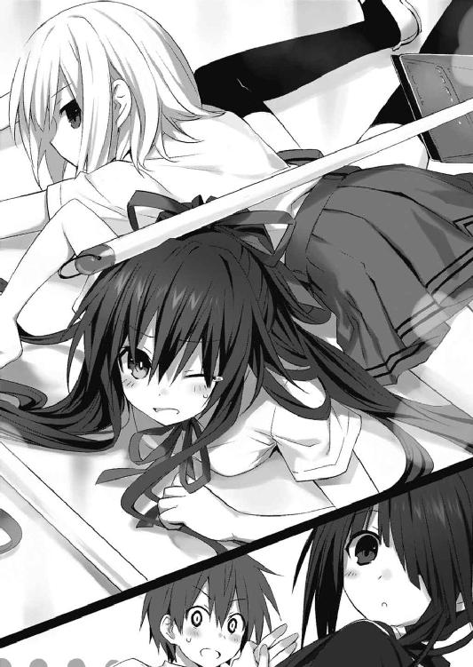
「あ......」
言われて、士道はまだ手を繋いでいることに気づいた。慌てて離そうとする──が、そのタイミングに合わせて狂三が指に力を入れてきたため、手を解くことができなかった。
狂三は士道を一瞥してから二人に目を向けると、芝居がかったしなを作る。
「実はわたくし、ひどい貧血持ちですの。そこで優しい士道さんが、わたくしの手を取ってくださったのですわ。士道さんを責めないであげてくださいまし」
十香と折紙は、言葉を一通り聞いてから士道に目を向けてきた。「本当か？」と問うような視線で。
「え、ええと......その、まあ、うん......」
なぜだろうか、ここは誤魔化さねばならない気がして、士道は曖昧に返事をした。
すると次の瞬間、不意に折紙がその場に膝を突いた。
「っ！ 折紙!? どうしたんだ？」
突然のことに士道が驚くと、折紙はくっと顔を上げて唇を開いた。
「貧血」
「............」
士道は、頬をぴくりと動かした。自然、額を汗が伝う。
「一人では歩けない」
「............」
「優しい人」
「......お、おう」
士道は異様なプレッシャーに気圧されながらも、空いている左手を差し出した。
すると、折紙が貧血らしからぬ速度でその手を取り、士道の隣にぴったりと寄り添った。
「なんだ二人とも。情けないな！」
十香はそんな狂三と折紙を見てふふんと腕組みし──
「......はっ！」
士道の両手を見直してから、ハッとした顔を作った。
「し、シドー！ 私もヒンケツなのだ！」
「そうなのか......？」
「う、うむ、実はあまりお尻の肉付きがよくないのだ！」
「いや貧血ってそういう意味じゃ......」
士道が苦笑すると、十香は困ったようにあわあわと両手を蠢かせた。
「と、とにかく、私もなのだ！」
言って、手を取ろうとする。──が、そこには既に狂三と折紙がいた。
「ぐぬぬ......」
十香は今にも泣いてしまいそうな顔を作ると、士道の真ん前に立ち、まるで飛びかかってくるかのように腰を低く落とした。
「お、おい、まさか──」
と、その瞬間、どこからともなく携帯電話のバイブ音が鳴り響いた。
「──もしもし」
と、折紙がポケットから携帯電話を取り出し、話し始める。
電話口に向かって淡々と相づちを打ったのち、なぜか狂三に鋭い視線を送った。
「......了解」
そして、静かに電話を切る。
「急用ができた」
折紙はそう言うと、名残惜しそうに士道の手をきゅっと強く握ったあと、手を離した。
その瞬間、十香がそこに滑り込み、士道の手にしがみつく。
「............」
折紙はそんな十香を一瞥したあと、もう一度狂三に刺すような眼光を向け、歩き去っていった。
去り際、士道の耳元に「時崎狂三に気をつけて」という言葉を残して。
「な、なんだぁ......？」
「士道さん？ 参りませんの？」
「え？ あ、ああ......」
狂三に促されて、士道は両腕を拘束されたまま歩いていった。
......周囲から注がれる視線が一層濃厚なものになったことは、言うまでもない。
午後六時。
一通り学校内の施設の案内を終えた士道は、狂三、そして半ば無理矢理くっついてきた十香とともに校門をくぐり、夕日に照らされた道を歩いていた。──もちろん、もう士道の両手は自由になっている。
「まあ、大体あんなところだ。わかったか？」
「ええ。感謝いたしますわ。......本当は、二人きりがよかったのですけれど」
「は......はは」
冗談めかして言ってくる狂三に苦笑で返す。
正直、士道は十香に感謝していた。
結局コブ付きということで、〈ラタトスク〉からの指示も比較的ソフトなものになり、結果屋上や保健室といったイベントスポットを訪れても、そこまでロマンティックな空気にならずに済んだのだ。
いや、精霊の好感度を上げることを考えるのなら憂慮すべきことなのだろうが......なんというのだろうか、狂三と二人きりでムード満点の場所に放り込まれたら、取って食われてしまいそうな感じがしたのである。
それくらいに妖しい魅力が、狂三にはあった。
まるで──そう、見る者を問答無用で虜にする、食虫植物のような。
「いやいや......」
士道は自分の思考に小さく首を振った。女の子に向かって取って食われそうとか食虫植物とか、いくら口に出していないとはいえ失礼に過ぎる。
──と。
「それでは士道さん、十香さん、わたくしはここで失礼いたしますわ」
十字路に差し掛かったあたりで、狂三がぺこりと礼をして、そう言った。
「え？ お、おう......」
「む、そうか。ではまた明日だ」
士道と十香が小さく手を振ると、狂三は夕日の中に消えていった。
「──ああ、ああ」
士道と十香の二人と別れて、一人夕日の道を歩きながら、狂三はそんな声を発した。
「いけませんわね──少し、我慢しないと。せっかくですもの。もう少し学校生活を楽しみたいですわ」
自分に言い聞かせるように呟き、ステップを踏むようにくるりと身体を回転させる。
「......うふふ、お楽しみは、最後にとっておきませんと」
と──踊るように道を歩いていた狂三は、不意にドン、と何かにぶつかってしまった。
「──とと」
倒れないようその場に踏みとどまり、そちらを見やる。
どうやら狂三がぶつかったのは男の背中だったらしい。ガラの悪い男たちが、道端にたむろしていた。
「あらあら、申し訳ありませんわ」
狂三はぺこりと頭を下げてそう言うと、その場から立ち去ろうと足を動かした。だが。
「おい、待てよお嬢ちゃん。そっちの不注意だってのに、それで終わりはねえだろよ」
狂三がぶつかった男がニタニタいやらしい笑みを浮かべながら言ってくる。
と、それに応ずるように、男の仲間が、狂三を囲うように散らばった。
「あら、あら？」
狂三がキョトンと首を傾げると、男の一人がひゅうッ、と口笛を吹いた。
「おいおい、ちょっとマジで可愛いじゃん。ちょー大当たり？」
「ねーねー君ぃ、お名前なんてーの？ ちょっと仲良くしようよー」
なんて、狂三の全身を睨め回しながら、口々に言ってくる。
ああ──、と、狂三は理解した。
「お兄さん方。──もしかして、わたくしと交わりたいんですの？」
妖しい笑みを浮かべながら狂三が言うと、男たちは一瞬ポカンとしたあと、額に手を当てて笑い始めた。
「おいおい、交わりたいって。きゃー、露ッ骨ー」
「いーじゃんいーじゃん話早くって。何、君もそういうの好きなの？」
「ええ。人並み程度には。──それより、少し場所を移しませんこと？ ここでは人目についてしまいますわ」
狂三が言うと男たちは色めき立ち、狂三を囲むようにしたまま、路地裏に入っていった。
そして袋小路に狂三を追いつめるような格好を作ると、狂三とぶつかった男が好色な笑みを浮かべながら手を伸ばしてきた。
「ま......じゃあ、遠慮なく」
が──その手は狂三に届かず、段々と下に下がっていった。
「あ？ 何してんのさ。やんねーんなら俺が先に──」
男の仲間が、肩をすくめながら言う。しかし狂三に手を伸ばした男は、必死な様子でその言葉を遮った。
「ち、違ぇ！ 身体が......！」
「身体？」
そこで、仲間も気付いただろうか。
狂三の足下から影が広がり、そこから白い手が無数に生え──男の身体を影に引きずり込んでいるのだと。
「......ッ!? な、なんだこりゃ......！」
「う、わわわわ......ッ!?」
仲間たちが一斉に叫びを上げる。だが──もう遅い。
「うふふ、ふふ」
狂三が唇を笑みの形に歪めると、全員の足に白い手が絡みつき、その身体を影の中へと引きずり込んでいった。
「まあ、いつもなら食べるに値しない小物ですけれど......近いうちにメインディッシュが控えていますし、肩慣らしならぬ舌慣らし──としておきますわ」
狂三は、ぱん、と両手を合わせた。
「──いただきます」
瞬間、辺りに響いていた男たちの悲鳴が、完全に消えてなくなった。
狂三は料理を味わうようにしばしの間目を伏せると、息を吐いてお腹をさすった。
と──その瞬間。
「......あら？」
狂三は、不意に全身を襲った感覚に、眉をぴくりと動かした。
全身を無遠慮に撫で回されるかのような感触。巨大な生物に咀嚼もされぬまま丸呑みされたら、こんな感じかもしれない。
この感覚は初めてではなかった。
現代の魔術師が顕現装置とかいう機械を使って作り出した結界・随意領域。
その中でも特別なもの。そう、間違いなく──あの女。
「──ち、一足遅かったですか」
狂三の思考を裏付けるように、狂三の目の前に、一人の少女が姿を現した。
髪を一つに括った、中学生くらいの女の子である。
装いはパステルカラーのパーカーにキュロットスカートというラフなものだったが、その身に纏う空気は、獲物を見つけた猛禽さながらに剣呑であった。
「また派手に食い散らかしてくれたようですね、〈ナイトメア〉」
「あらあら、あなたは......崇宮真那さん、でしたかしら？」
狂三が小さく首を傾げながら言うと、真那はフンと不機嫌そうに鼻を鳴らした。
「私の名を覚えてやがったことは褒めてやりますが、気安く呼ばれるのは反吐が出やがります」
「あら、これは失礼しましたわ」
狂三はぺこりと頭を下げ、素直に謝った。
「でも、お名前は大事でしてよ。わたくしも〈ナイトメア〉なんて呼ばれるのは悲しいですわ。時崎狂三と呼んでくださいませんこと？」
狂三が言うと、真那は一層気分悪そうに眉を歪めた。
「大事だから、貴様には呼んで欲しくねーんです。大事だから、貴様は呼んでやんねーんです」
「難しいお方」
「黙れよ、精霊」
真那が視線を鋭くする。
狂三は、肌の表面がちりつくのを感じた。
◇
狂三と別れたあと、士道は十香を伴って、近所のスーパーに夕食の材料を買いにいっていた。
ずしりと重いビニール袋を右手に引っ提げ、もうだいぶ暗くなってしまった道を歩く。
「いやー、しかし今日はちょうどいいタイミングで入れたな」
自然と顔が笑ってしまう。そう。ちょうどタイムセールが始まったばかりの時間に店に入れたものだから、三割引の合い挽き肉が大量に手に入ったのだ。
「シドー！ 今日の夕飯はなんだ？ ハンバーグか？」
十香もここ数週間で、材料からメニューを推し量るのに慣れたらしい。興奮気味に口を開いてくる。
『あ、私もそれに一票』
と、まだ通信の繋がっていたインカムから、琴里の声も聞こえてくる。
士道は小さく肩をすくめると、にやにやと唇の端を上げた。
「あー、どうすっかなあ。大根のそぼろ煮とか三色丼って手もあるんだがなー」
「む、むう、まあそれも悪くはないが、ハンバーグは駄目なのか？」
『ちょっと何言ってるのよ。せっかく挽き肉がいっぱいあるんだから、小出しにしないで一気に使いなさいよ』
と、十香が眉を八の字にしながら言い、インカムから琴里の声が響いたところで。
前方から、ざっ、と、スニーカーの底でアスファルトの道を擦るような音が聞こえてきて、士道はふと顔をそちらに向けた。
「ん......？」
そこには、ポニーテールに泣き黒子が特徴的な、琴里と同年代くらいの女の子が、驚愕に目を見開きながら立っていた。
パーカーにキュロットスカートというラフな格好。白いスニーカーには、なぜかついて間もないと思われる赤い汚れが目立っていた。......まるで、血痕のような。
「......？」
見知らぬ顔......のはずなのだが、士道は小さく首を捻った。
なぜだろうか、妙な既視感があるというか......どこかで会ったことがある気がしてならなかった。
と、そこで、少女が士道のいる方向をジッと見つめてきているのに気づく。
士道は思わず、後ろを振り向いていた。何か少女のことを驚かせるようなものが、彼女の視線の先にあるのだろうかと思ったのだ。
だが──何もなかった。通い慣れた住宅街の道には、規則的に並んだ電柱と、ネットのかかったゴミ捨て場くらいしか見受けられない。
あとはそう、少女の視線の先にあるといえば、士道くらいのもので──
と、士道がそこまで思案を巡らせたところで。
「に」
少女が、震える唇を動かした。
「に？」
士道が訊き返す。しかし少女は答えず、バッとその場から駆け出すと、士道の胸に飛び込んできた。
「な......」
そのまま身体に手を回し、感極まったようにぎゅぅぅ、と抱きついてくる。対象が士道、犯人がこの少女だからいいようなものの、もし立場が逆だったなら、警察沙汰は確実な絵柄である。......いや、もしかしたらこの状況でも、士道が捕まるかもしれない。
だがそんな士道の考えは、途中で妨害された。
少女が、士道の胸に顔を埋めながら、こう言ったのだ。
「──兄様......ッ!!」
『は......はぁっ!?』
その瞬間、路上と〈フラクシナス〉艦橋で、五河兄妹の声が見事なまでにシンクロした。
第三章 シスターズ・ウォー
「おお、ここが兄様の今のお家でいやがりますかっ！」
五河家の前に辿り着くなり、少女が馬の尻尾というには少し短い髪をブンブンと振りながら、敬語になってるんだかなっていないんだかよくわからない言葉を弾ませた。
自称・士道の妹。名前は崇宮真那というらしい。
胡散臭いことこの上ない少女ではあったが......路上で突然士道に抱きついたあと、その場にへたり込み、目に涙を浮かべながら、自分がどれだけ士道に会いたかったかを切々と語りだしたため、仕方なくここに連れてきたのである。
無論、琴里にも許可をとってある。というか──真那を五河家に連れてこいと言ったのは、他ならぬ琴里なのだった。
「む、しかし驚いたぞ。シドーにもう一人妹がいるとは......」
と、十香が、真那をまじまじと見つめながら言ってくる。
「いや......そんな記憶はないんだけどな」
「そうなのか？ シドーによく似ていると思うのだが......」
「当然です！ 妹でいやがりますから！」
十香が言うのに、真那が自信満々といった様子で腕組みする。
だが真那はすぐにハッとした顔を作ると、複雑そうな表情で十香と士道を見てきた。
「......しかし兄様。真那はあまり感心しねーです」
「は？ 何がだ......？」
「決まっていやがります！ 鳶一──じゃなくて、ええと、ね、義姉様というものがありながら、他の女性とも関係を持つなどと......」
真那がこほんと咳払いをしてから、頬を染めて言ってくる。
「は──はぁっ!?」
士道は目を剥いて叫びを上げた。
「？ どうかしやがりましたか」
「つっこみどころ多すぎるわ！ まず何だって？ おまえ、折紙と知り合いなのか？」
「ええ、まあ。ひょんなことから」
誤魔化すように目を泳がせながら、真那が言ってくる。まあどこで接点を持ったのかは非常に気になったが、今はもっと気に留めねばならないことがあった。
「それで......その義姉様ってのは一体なんだ......？」
「いや、私もその呼び方に抵抗がなくはねーのですが、将来的にそうなるからと......」
「そんな予定はないからな!?」
「そ、そうなのですか......？」
真那は困惑気味に眉をひそめた。
「しかし、そうだとしても兄様の二股疑惑は......」
「ふたまた。なんだそれは？」
十香が首を傾げる。また不穏な言葉に食いついてくれたものだった。
しかし士道が弁明......というか誤魔化しに入る前に、真那が十香に向かって声を発した。
「単刀直入に訊きます。十香さんでしたね。あなたは兄様とお付き合いしていやがられるのですか？」
「な......っ！」
士道は顔を赤くして二人の間に入った。
「な、何言ってやがんだ、そんなわけねえだろ！」
真那が、十香に訝しげな目を向ける。
「......十香さん？ 兄様とデートなどしやがったことは？」
と、真那が士道の脇から顔を出し、十香に質問を投げた。
「おお、あるぞ！」
「............」
真那が、じとーっとした目で士道を睨んでくる。
「い、いや、そのだな......」
嘘でない分否定がしづらい。士道は顔中に汗を浮かべて後ずさった。
と、真那が頬を染めながら、恐る恐るといった調子で、十香に再度質問をする。
「十香さん。もしかして、ちゅーも既に......？」
「ちゅー？」
「き、キスのことです」
「ん、したぞ？」
「......っ!!」
十香があっけらかんと答えると、真那が目をくわっと見開いた。
「ふ、不潔ですっ！」
「お、落ち着けって......」
「まさか兄様がこんなジゴロになっていようとは......！ 真那は悲しいです！ 矯正です！ 矯正が必要です！」
「シドー、ジゴロとはなんだ？」
十香がまたも、興味津々といった様子で問いかけてくる。士道は「あー、もうッ！」と頭を掻きむしると、十香の背を押して隣のマンションの前に移動させた。
「ぬ？ シドー、なぜ押すのだ？」
「話がややこしくなるから、とりあえず自分の部屋に戻っててくれ！ な!?」
「むう、だがしかし」
「今日の夕飯ハンバーグにしてやっから！」
「おお、本当か!?」
士道が言うと、十香は目を輝かせて、手を振りながらマンションに駆けていった。
「シドー！ 上に目玉焼きもだぞ！」
士道ははいはい、と手を振り、その背を見送った。
「......随分と女性のあしらい方に慣れていやがるようですね」
真那が半眼を作りながらそう言ってくる。士道は聞こえなかった振りをしながら、五河家の門をくぐった。
そして、ノブに手を掛け、玄関を開ける。すると──
「──おかえり、おにーちゃん」
玄関で待ちかまえていた私服の琴里（無論、リボンは黒のままである）が、妙に『おにーちゃん』の部分に力を込めて言ってきた。
客人をもてなすために、〈フラクシナス〉で先回りして待機していたのである。
「お、おう......ただいま」
士道は言い知れぬプレッシャーに汗を滲ませながらも、小さく手を上げて返した。
琴里はわざとらしく、士道の左隣の真那に視線やってから声を上げる。
「あら、そちらはどなた？」
定形通りの質問。まあ仕方あるまい。ずっと家にいた（ということになっている）琴里が、先ほどの路上の出来事を知っているのはおかしい。
「あ、ああ......ちょっとそこで出会ってな。なんでも──」
と、士道の言葉の途中で、真那が先に進み出た。
「お家の方でいらっしゃいやがりますか!? うちの兄様がお世話になっていやがります！」
満面の笑みでそう言い、半ば無理矢理琴里の手を取ってわっしわっしと握手を交わす。珍しく琴里が、辟易気味に汗を垂らした。
「兄様？ 士道が？」
「はい！ 私、崇宮真那と申します！ 兄様の妹です！」
琴里は鼻から息を吐き出すと、真那の手を払って家の奥を示した。
「まあ、とりあえず入って。詳しい話を聞かせてちょうだい」
「はい！」
真那が元気よく返事をして、琴里のあとについていった。
「......はあ」
なんだか厄介なことになりそうな気しかしない。
小さく息を吐くと、二人のあとを追って靴を脱ぎ、リビングに入っていく。
すると既にテーブルにはお茶とお菓子が用意され、向かい合ったソファにそれぞれ琴里と真那が腰掛けていた。
琴里にあごで示され、真那の隣に腰掛ける。なんだか三者面談のような格好になった。
「──さて、と。じゃあ話を聞きたいんだけど」
「はい！」
琴里の言葉に、真那が快活に返事をする。
「真那、っていったかしら。あなたは......自分が士道の妹だっていうのよね？」
「その通りです」
真那が深々とうなずく。琴里はくわえていたチュッパチャプスの棒をピンと立てながら、真那の反応を窺うように言葉を続けた。
「私は五河琴里。──私も、士道の妹なのだけれど」
「......？」
琴里の言葉に真那は一瞬首を傾げ──
「はっ......！ ということはまさか、姉様......!?」
「違うわっ！」
「あ、これは失礼。──ごめんね琴里。お姉ちゃんてっきり」
「妹でもないわよ!?」
琴里が、司令官モードには珍しく大声を発する。士道が驚いて目をやると、琴里はこほんと咳払いをした。
「いやはは、てっきり私の記憶にねー姉妹がいやがるのかと思いました」
「まったく......」
琴里がため息混じりに頭をかく。随分とまあ、ペースを乱されているようだった。
「しかし......妹、ね」
琴里が、半眼を作って真那を睨め付ける。
普通に考えれば、突然「私はあなたの妹だ」なんて言われても信じられるはずがない。
だが士道に関しては、そんなことあり得ないとは言い切れない事情があったのである。
少なくとも、士道には琴里以外の妹がいたという記憶はない。
だが──実は士道は、この五河家の本当の息子ではないのだ。
幼少の頃に、実の母親に捨てられて以来、この家の子供として育てられた。
だから真那の言葉を、完全に嘘や妄言と断ずることができなかったのである。士道が覚えていないだけで、真那が本当に血の繋がった妹という可能性だってなくはないのだから。
......まあ、それにしたって、士道でさえ記憶が曖昧な幼少期に離ればなれになったことを、より年下の真那が覚えているというのも信じがたい話だが。
「ええと......真那。ちょっと質問いいか？」
「はい！ 何でしょう、兄様！」
士道が声をかけると、真那は心底嬉しそうに、跳び上がらんばかりの勢いで答えた。琴里がなぜか不機嫌そうに、フンと鼻を鳴らす。
「その......すまん、俺は君のことを覚えてないんだが......」
「無理もねーです」
真那が腕組みし、うんうんとうなずく。
士道はごくりと唾液を飲み下すと、もっとも気になっていることを口に出した。
「一つ訊きたいんだが──君のお母さんって......今は」
そう。
もし真那が士道の実の妹だというのなら──それを知っているはずなのである。
士道を捨てた、実の母。
だが──
「さあ」
真那は首を傾げると、あっけらかんとした調子でそう言った。
「え......？」
士道は眉根を寄せた。──まさか、真那も士道のあと、捨てられたということだろうか？
と、士道の表情から思考を推し量ったのか、真那が首を横に振ってくる。
「あ、ちげーますちげーます。そういうことじゃなく──」
真那は恥ずかしそうに苦笑すると、手元に置かれた紅茶を一口飲んでから言葉を続けた。
「私──実は昔の記憶がすぱっとねーんです」
「......なんですって？」
その言葉に、不審そうな色を濃くしたのは琴里である。軽く姿勢を直して真那に向かい、再び唇を開く。
「昔のって、一体どれくらい？」
「そうですね、ここ二、三年のことは覚えてやがるんですが、それ以前はちょっと」
「二、三年って......じゃあなんで士道が自分の兄だなんてわかるのよ」
琴里が問うと、真那が胸元から銀色のロケットを取り出し、中に収められている、やたらと色あせた写真を見せてくる。そこには、幼い士道と真那の姿があった。
「これ......俺か」
士道は驚きの声を上げた。しかし──琴里は怪訝そうな顔を作る。
「ちょっと待ってよ。これ、士道一〇歳くらいじゃない？ その頃にはもう、うちに来てたはずでしょ？」
「あ......そういえば」
言われて頬をかく。だがこの写真の男の子が士道にしか見えないのもまた、事実だった。
「そうなのですか？ 不思議なこともあるものですねえ」
「不思議って......他人の空似なんじゃないの？ 確かに......かなり似てはいるけども」
「いえ、間違いねーです。兄様は兄様です」
「......なんでそう言い切れるのよ」
琴里が問うと、真那は自信満々に胸をドンと叩いた。
「そこはそれ、兄妹の絆で！」
「............」
琴里は話にならないといった調子で肩をすくめ、はふぅと吐息した。......なぜだろうか、少しだけ安堵しているようにも見える。
しかし真那は、感慨深げに目を伏せて言葉を続けた。
「いや、自分でも驚いてやがるのです。本当にびっくりしました。兄様を見たとき、こう、ビビッときたのです」
「何それ。安い一目惚れじゃあるまいし」
「はっ、これは一目惚れでしたか。──琴里さん、お兄さんを私にください」
「やるかッ！」
琴里は反射的に叫んだあと、ハッとした様子でわざとらしく咳払いをした。
「とにかく、よ。そんな薄弱な理由で妹だなんて言われても困るわ。第一、士道はもううちの家族なの。それを今さら連れていこうだなんて──」
「そんなつもりはねーですよ？」
「え？」
あっけらかんと答えた真那に、琴里が目を丸くする。
「兄様を家族として受け入れてくれやがったこの家の方々には、感謝の言葉もねーです。兄様が幸せに暮らしているのなら、それだけで真那は満足です」
言って、真那がテーブルを越えて、再び琴里の手を取る。
「む......」
琴里が、ばつが悪そうに口をへの字に結ぶ。
「ふん......何よ、一応わかってはいるみたいじゃない」
「ええ。──ぼんやりとした記憶ではありますが、兄様がどこかへ行ってしまったことだけは覚えています。確かに寂しかったですが、それ以上に、兄様がちゃんと元気でいるかどうかが不安でした。──だから、今兄様がきちんと生活できていることがわかってとても嬉しいです。こんなに可愛らしい義妹さんもいやがるようですし」
言って、真那がにっと笑う。琴里は頬を染め、居心地悪そうに目を逸らした。
「な、何よ、そんなこと言ったって──」
「まあ、もちろん」
と、真那が琴里の言葉の途中で口を開く。
「実の妹には敵わねーですけども」
「............」
瞬間。ぴきッ、と、空気にヒビが入るような音が聞こえた気がした。
「お、おい、琴里......？」
士道が言うも、琴里には聞こえていないようだった。ピクピクと頬の筋肉を収縮させながら、やたら引きつった笑みを浮かべている。
「へえ......そうかしら？」
「いや、そりゃそーでしょう。血に勝る縁はねーですから」
「でも、遠い親戚より近くの他人とも言うわよね」
琴里が言った瞬間、今度は終始にこやかだった真那のこめかみがぴくりと動いた。
そして一拍おいたあと、真那が琴里の手を放し、テーブルに手を突く。
「いやっはっは......でもまあほら？ やっぱり最後の最後は、血を分けた妹に落ち着きやがるというか。三つ子の魂百までって言いやがりますし」
「......ぐ。ふ、ふん。でもあれよね、義理であろうと、なんだかんだで一緒の時間を長く過ごしてるのって大きいわよね」
「いやいや、でも結局他人は他人ですし。その点実妹は血縁ですからね。血を分けてますからね！ まず妹指数の基準値が段違いですからね！」
真那が高らかに叫ぶ。妹指数。あまり聞いたことのない単語だった。
しかし、琴里は疑問を差し挟むふうもなく言葉を返す。
「血縁血縁って、他に言うことないの？ 義理だろうが何だろうが、こっちは一〇年以上妹やってんのよ！ どっちが妹指数高いかだなんて明白でしょうが！」
「笑止！ 幼い頃に引き裂かれた兄妹が、時を超えて再会する！ 感動的じゃねーですか！ 真の絆の前には、時間など関係ねーのですよ！」
「うっさい！ 血縁がナンボのもんよ！ 実妹じゃ結婚だってできないじゃない！」
『え......？』
士道と真那の声がハモる。なんだか、おかしなことを聞いた気がする。
琴里はハッと目を見開くと、頬を真っ赤に染め、誤魔化すようにテーブルを叩いた。
「と、とにかくよ！ 今の妹は私なの！」
「何を！ 実の妹の方がつえーに決まっていやがります！」
「強いって何よ、妹関係ないじゃない！」
「ま、まあ落ち着けって、二人とも」
士道が頬に汗を滲ませながら二人をなだめようとすると、琴里と真那は同時にバッ！ と士道に顔を向けてきた。
「士道、あなたは！」
「実妹、義妹、どっち派でいやがるのですか!?」
「え、ええッ!?」
突然予想外の問いを振られ、情けない声を発する。
「い、いや......どっち派って......」
『............』
琴里と真那が、じーっと見つめてくる。どちらを選んでもろくなことになりそうにないのは容易く知れた。どうにか話題を逸らすべく、思考を巡らせる。
「！ そ、そうだ、真那」
「はい？」
ポンと手を打って声をかけると、真那がキョトンとした様子で首を傾げた。
「おまえ、昔の記憶がないって言ってたよな」
「ええ、そうですが」
「じゃあ、今はどこに住んでるんだ？ 家族と暮らしてるってわけでもないんだろ？」
「あー......っと」
と、そこで初めて、ハキハキとした受け答えをしていた真那が口を濁した。
「ま、まあ、ちょっと、いろいろありやがるんです」
「いろいろって......」
「えーと......ですね。こう特殊な全寮制の職場で働いてるというか......」
「職場......？ 真那、今歳いくつだ？ 琴里と同じくらいじゃないのか？ 学校は？」
まあ琴里は琴里で秘匿組織の司令官なんぞをやっているわけだが......ちゃんと学校にも行っている。
真那は気まずそうに目を泳がせた。
「そ、その......えーと......ま、またお邪魔しますっ！」
「へ......？ ちょ、待っ──」
真那はそう言うと、士道の制止も聞かず、脱兎の如く去っていった。
「な......なんだったんだ、一体......」
頬をかき、真那が消えた扉を呆然と眺める。
と、そんな士道の横で、向かいの席から立った琴里が、なぜか真那の使っていたティーカップを回収していた。
◇
翌日。キーンコーンカーンコーン、と、聞き慣れたチャイムが鼓膜を震わせる。
時計の針は八時三〇分を示していた。朝のホームルームの開始時刻である。辺りで談笑していたクラスメートたちがわらわらと席に着き始めていく。
「......あれ？」
そんな中。早めに席に着いていた士道は小さく首を傾げた。
チャイムが鳴ったというのに、狂三の姿が教室になかったのである。
十香も同じことを思ったのだろう、キョロキョロと辺りを見回している。
「むう、狂三のやつ、転校二日目で遅刻とは」
と、十香がそう言うと、
「──来ない」
士道の左隣から、そんな静かな声が響いてきた。
折紙が、視線だけを十香に向けて唇を開いている。
「ぬ？ どういう意味だ？」
「そのままの意味。時崎狂三は、もう、学校には来ない」
「え？ それって──」
士道が言いかけたところで、ガラッと教室の扉が開き、出席簿を両手で抱えるように持ったタマちゃん教諭が入ってきた。すぐさま学級委員が、起立と礼の号令をかける。
「おっと......」
折紙の言っていたことは気にかかったが、号令を無視するわけにもいかない。士道は皆と一緒に礼をしてから着席した。
「はい、皆さんおはよぉございます。じゃあ出席取りますね」
言ってタマちゃんが出席簿を開き、生徒の名前を順に読み上げていく。
「時崎さーん」
そしてタマちゃんが、狂三の苗字を呼んだ。だが、返事はない。
「あれ、時崎さんお休みですか？ もうっ、欠席するときにはちゃんと連絡を入れてくださいって言っておいたのに」
タマちゃんが、ぷんすか！ と頬を膨らせながら、出席簿にペンを走らせようとする。
と、その瞬間。
「──はい」
教室の後方から、よく通る声が響いた。
「狂三？」
後ろを向き、目を見開く。そう、教室後部の扉を静かに開き、そこに立っていたのは、穏やかな笑みを浮かべながら小さく手を挙げた狂三だった。
「もう、時崎さん。遅刻ですよ」
「申し訳ありませんわ。登校中に少し気分が悪くなってしまいましたの」
「え？ だ、大丈夫ですか？ 保健室行きます......？」
「いえ、今はもう大丈夫ですわ。ご心配おかけしてすみません」
狂三はぺこりと頭を下げると、軽やかな足取りで自分の席に歩いていった。
「なんだ......ちゃんと来たじゃねえか」
ほうと息を吐き、何やら不穏なことを言っていた折紙の方に視線を向ける。
「え......？」
士道は訝しげに眉をひそめた。
折紙が微かに眉根を寄せ、狂三のことを凝視していたのである。
表情にそこまで劇的な変化があるわけではない。だが──なぜか士道にはなんとなくわかった。今、折紙は、間違いなく驚愕している。
「折......紙？」
士道が、小さな声でその名を呼ぶ。
折紙は微かに指先を揺らすと、狂三からふっと視線を外した。
「──はい、じゃあ連絡事項は以上です」
ほどなくして、タマちゃんがホームルームを終えて教室を出て行く。
と、その瞬間、ポケットに入れていた携帯電話が軽快な着信音を響かせ始めた。なんともきわどいタイミングである。あと一〇秒早かったら没収されていたかもしれない。
画面を見る。そこには五河琴里の名が表示されていた。
「もしもし？ 琴里か？」
『──ええ、士道』
「どうしたよ、こんな時間に。あと一〇秒早かったらヤバかったぞ」
『あら？ 学校ではマナーモードにしてろって、私の優秀な兄が言っていたのだけれど』
「ぐ......」
『まあいいわ。......そんなことより士道、嫌な事態になったわ。控えめに言って最悪よ』
琴里らしくない苦々しい語調に、士道は唾液を飲み込んだ。
「っ、何かあったのか......？」
『ええ。......困ったことになったわね。まさかこんなことが現実に起こり得るだなんて』
もったいぶった言い方に、緊張感が高まる。士道は声をひそめるように通話口を手で覆い隠しながら続けた。
「......一体、何があったんだ」
『ええ、実は──』
と、そこで士道の肩がつつかれた。狂三が、不思議そうな顔で首を傾げている。
「何をなさっていますの、士道さん」
「......っ！ あ、ああ......ちょっと電話をな。少し待ってもらっていいか？」
士道が言うと、狂三は大仰な動作で驚きを表現したあと、ぺこりと頭を下げていた。
「これは失礼しましたわ。お邪魔をするつもりはなかったのですけれど」
「ああ......大丈夫だよ。気にしないでくれ」
士道は余裕のない笑みでそう言うと、再び通話口に意識を集中させた。
「──それで、琴里？ 一体何が──」
『ちょっと待って士道。今......誰と話していたの？』
「え、誰って......？」
不意に深刻そうな声を発した琴里に、問い返す。
『だから、今、あなた近くにいる誰かと会話をしたでしょう。その相手が誰かを訊いてるのよ。十香？ 鳶一折紙？ それとも殿町宏人？』
まるで罪人を咎めるような感でまくし立てる琴里に、不満げな声を発する。
「な、なんだよ。そんなに怒るこたねえじゃねえかよ。少し話しかけられただけだって」
『いいから、答えなさい』
有無を言わさぬ調子で、琴里が言ってくる。士道はふうと息を吐くとその名を口にした。
「狂三だよ」
すると、琴里は急に無言になった。
「琴里？ どうしたんだよ」
意味がわからず、問う。
琴里は何やら電話の向こうで誰かと会話を交わしたあと、言葉を続けてきた。
『士道。昼休みになったらすぐに物理準備室へ向かって。見せたいものがあるわ』
「物理準備室......？ なんでまた」
『いいから、絶対に来なさい』
そこまで言うと、琴里は士道の返答も聞かずに電話を切った。
「な、なんだよ一体......」
士道は首を傾げると、ぼやくように呟いた。
◇
午後一二時二〇分。四限目の授業の終了を告げるチャイムが鳴る。
生徒たちは礼が済むと、先生が教室を去るよりも早く、昼食の準備を始めていった。
無論、十香も例外ではない。待ってましたと言わんばかりに目をキラキラ輝かせ、机をドッキングさせてくる。
「シドー！ 昼餉にしよう！」
言って、ランチバッグから弁当箱を取り出す。と──そこで士道は首をひねった。
いつもなら左方からも机が迫ってきて、三体合体になっているのだが......今日は折紙が机を動かしていないのだった。
不思議に思ってそちらに目をやる。折紙は難しげな顔で、ジッと手元を見つめていた。
「......？」
気になることは気になったが、別に昼食をいつ摂るかなんてのは折紙の自由である。士道は鞄から弁当箱を取り出そうとし──そこで手を止めた。
「あ......そうだ」
そういえば、昼休みに物理準備室に行くよう言われていた。細かい時間までは指定されていないものの......琴里のことだ。遅れたら何らかのペナルティがありそうな気がする。
「ごめん、十香。ちょっと俺今日は行くところがあるんだ」
「ぬ？」
既に弁当箱の蓋に手をかけていた十香が、きょとんとした顔を向けてくる。
「どこへ行くのだ？ 私も行くぞ！」
「あー......」
士道は気まずげに頬をかいた。琴里が物理準備室に来いということは、まあまず間違いなく〈ラタトスク〉絡みだろう。十香に聞かせてよい話ばかりが出るとは限らなかった。
「悪い。ちょっと今日は駄目なんだ。先に食べててくれ。な？」
手を合わせてそう言い、士道は廊下へ向かって足を動かした。
「あ！ シドー......」
背後に、寂しげな十香の声が聞こえてくる。なんだかすごい罪悪感。士道は小さく首を振ると、廊下へ出て行った。
そのまま校舎を移動し、階段を上って物理準備室へとたどり着く。
扉をノックすると、まるでその場で待ち構えていたかのように扉がガラッと開いた。
「──遅い」
中学校の制服を着た琴里が、不満をさえずるように唇を突き出しながら顔を出す。
「嘘だろ。弁当も食わねえで来たんだぞ」
「いいから、早く入りなさい。時間が惜しいわ」
琴里はそう言うとあごをしゃくり、士道を部屋の中へ誘い入れた。
と、そこで琴里の胸にいつもの来賓許可証がないことに気づく。よく見ると、足下も来賓用のスリッパではなく中学校の上履きだった。
「なんだ、今日は黙って入ってきたのか」
「そりゃあね。放課後ならまだしも、こんな時間に中学生が高校にいちゃいけないでしょ」
「ああ、そりゃそうか」
士道は得心がいったようにうなずくと、物理準備室の奥へと顔を向けた。
部屋の最奥にある回転椅子には、既に予想通りの人物が座っている。〈ラタトスク〉解析官兼都立来禅高校物理教諭・村雨令音である。
「......ん、来たね、シン」
いつものように名前と何ら関わりのないあだ名で士道を呼び（なんかもう訂正するのも疲れてきた）、令音が自分の隣の椅子を指さす。きっと、そこに座れということだろう。
士道はその指示に従うと、椅子に腰掛けた。
次いで琴里が、士道を挟むように隣に腰を落ち着ける。......二ヶ月前のギャルゲー訓練と完全に同じ配置だった。なんか嫌な記憶が呼び起こされる。
「......それで、見せたいものって？」
士道が問うと、琴里が机の上に置かれたディスプレイを示した。
それに合わせて令音が手元のマウスを操作すると、画面にとある映像が映し出された。
カラフルな色の髪をした美少女たちが順々に現れ、画面上部に、『恋してマイ・リトル・シドー２ ～愛、恐れていますか～』のタイトルロゴが表示される。
「続編......ッ!?」
「......ああ、間違えた。こっちだ」
士道が戦慄に身を震わせると、令音が再びマウスを操作した。パッと画面が暗転する。
「ちょッ、ちょっと待ってください！ 何ですか今のは！」
「細かいことを気にしてるとハゲるわよ、士道」
はふう、と面倒そうに息を吐きながら答えたのは琴里だった。
「細かくねえ！ もうギャルゲー訓練はたくさんだからな!? 大体──」
と、そこで士道は声を止めた。暗転した画面に、別の映像が映し出されたのだ。
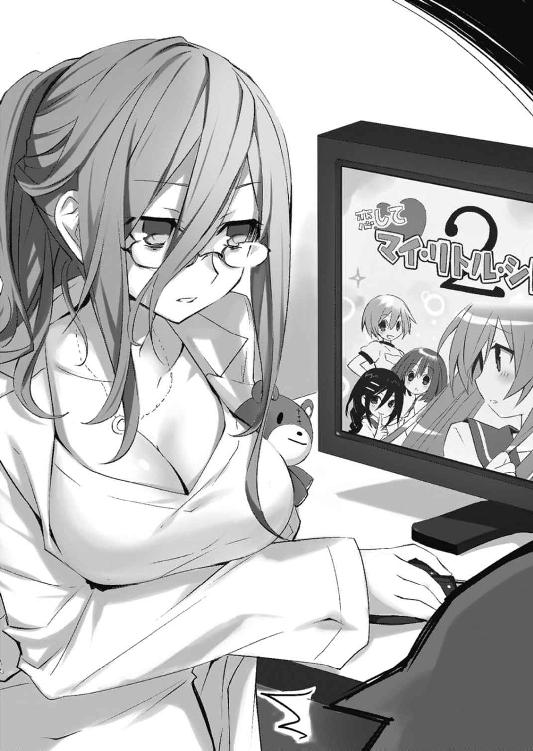
──狭い路地裏に、なぜか狂三と、ポニーテールの女の子が向かい合って立っている。
「ん？ これって......真那？」
そう、その映像に映っている少女は、狂三と真那だった。
「ええ、昨日の映像よ。──周りをよく見て」
「な......っ」
士道は眉をひそめた。その何の変哲もない住宅街の一角に、機械の鎧を纏った人間たちが、幾人も確認できたのだから。
「ＡＳ......Ｔ？」
半ば呆然とのどを絞る。
ＡＳＴ。対精霊部隊。精霊を、人類に世界に仇なす危険生物を絶滅させるために機械の鎧を纏った超人たち。幾度も目にしたその姿を見間違えるはずはなかった。
画面の端には、士道のクラスメートである鳶一折紙の姿もある。
そしてそれら全員が、全身に仰々しい武器を装着していた。そう──まるで、空間震を伴って精霊が現界した際のように。
「ええ。──なぜか昨日、急にＡＳＴの反応が街中に現れたらしいの。クルーの一人が念のためカメラを飛ばしてみたらしいんだけど──確認してみて驚いたわ」
琴里が、足を組み替えながら首肯する。
「な、なんでＡＳＴが......」
「そりゃあ、精霊がいるからでしょうよ」
事も無げに言う琴里に、士道はごくりと唾液を飲み込んだ。
「って言ったって......空間震は起こってないぞ。周りの住民も避難してないじゃないか。もし精霊が暴れたら──」
「......まあ、暴れる前に仕留める自信があったんだろう」
「......っ」
令音の言葉に、士道は息を詰まらせた。
だが──それにしたってわからないことは残っている。
そう。なぜかそこに立っている、士道の妹を自称する少女・崇宮真那の存在だ。
「な、なんで真那が──」
士道が言いかけた次の瞬間。真那の身体が淡く輝いたかと思うと、その全身に、白い機械の鎧が出現した。
「な......っ」
他のＡＳＴ隊員のものとは少し形が違うが、間違いなくワイヤリングスーツである。
そしてそれに応ずるように狂三が両手をバッと広げると、足下の影が狂三の身体を這い上がり、ドレスを形成していった。
頭部を覆うヘッドドレス。胴部をきつく締め上げるコルセットに、装飾過多なフリルとレースで飾られたスカート。それら全てが、深い闇を思わせる黒と、血のように赤い光の膜で彩られる。
そして最後に、なぜか左右不均等に髪が括られていった。
まるで──時計の長針と短針のように。
「霊、装......」
士道は呆然と声を発した。
霊装。精霊が持つ絶対なる領地にして城。精霊を守る神威の膜である。
狂三が、右手を頭上に掲げる。すると再び影が彼女の身体を這い上がり、右手に収束していった。
が、そこで、狂三の身体が宙に舞った。
「え──？」
画面の中で起こったことが理解できず、間の抜けた声を発する。
だが一瞬あと、士道は理解した。
真那が、両肩のユニットから光の線を放ち、狂三の腹を撃ち抜いたのだと。
──狂三が、身を震わせる。
でも、なぜだろうか。それは恐怖に怯えているというよりも、甲高い哄笑を上げているかのようだった。
あとは、数秒で片が付いた。
狂三は反撃をしようとアクションを起こすのだが、それに先んじて、真那の攻撃が狂三の身体に突き刺さる。
そのたび、さして広くない路地に、真っ赤な血が撒かれた。
そして──地面の上に仰向けに横たわり、完全に動かなくなった狂三の首に、真那が光の刃を突き立てる。
真那に攻撃を加える間さえなく。
狂三の命は、摘み取られた。
「ぐ......ッ」
思わず顔を押さえ、目を背ける。
あまりにも現実的でない光景ゆえに、実感が伴うのが少々遅れたのだろうか。真那が狂三を解体し終えた頃、ようやく士道はのどの奥に嘔吐感を覚えた。
歯の根がガチガチと鳴って、寒くもないのに身体が震える。
人が──厳密には人ではないとはいえ、外見は人と変わらない存在が、殺される。
映像とはいえ、そんな光景を目にしたのだ。士道の反応を咎められる者はいないだろう。
──画面の中の真那が、一仕事を終えたといった調子で首を回す。するとその身に纏っていたＣＲ－ユニットが消え去り、先ほどまでの装いに戻った。
士道は眉をひそめた。途方もない違和感。
臭いも感触もない画面越しにこの光景を見ている士道でさえこんな有り様だというのに、当事者である真那は、今自分がしたことに何の感慨も覚えていないように見えたのである。
罪悪感も。
焦燥感も。
絶望感も。
それどころか──達成感さえも。
ひどく事務的な作業。一言で言うなら──そう、慣れている。
幾度も繰り返した作業をなぞるだけ。それくらい、真那は狂三の死に無関心だった。
「こ、れって......」
一分ほどかけてどうにか吐き気を抑え込み、士道は声を発した。
「......見ての通りだ。昨日、時崎狂三はＡＳＴ・崇宮真那に殺害された。重傷とか、瀕死とかではなく、完全に、完璧に、一分の疑いを抱く余地もなく、その存在を消し潰された」
「そん、な──」
だが、士道にその言葉の先を継ぐことはできなかった。
だって今、自分の目で見たばかりなのである。狂三が、どうあっても助からないくらいに殺し尽くされ──
そこで。士道はハッと肩を揺らした。
ショッキングな映像に気を取られて失念していた。この映像には明らかな矛盾がある。
「でも狂三は今日、普通に学校に......」
士道が言うと、令音と琴里はまったく同じタイミングで腕組みした。
「......そう。我々もそこがわからないんだ」
「士道が狂三と話してるって聞いたときは、とうとう幻覚でも見え始めたのかと思ったわ」
琴里が、冗談めかすように言いながら肩をすくめる。
だが士道には、それに反応を示す余裕もなかった。必死に考えを巡らせ、唇を開く。
「あの状態から......蘇生したってことか？」
ちらと映像を見やる。ちょうど、ＡＳＴ隊員たちが狂三の遺体と血痕の処理を始めているところだった。
その中にいる折紙の姿を見て、ようやく今朝の彼女の反応の意味を知る。
驚くのも当然である。昨日目の前で死んだ少女が、今朝平然と現れたのだから。
「どうでしょうね。──現段階では何とも言えないわね」
「そう......か」
未だ先ほどの映像が脳裏にちらついているものの、どうにか呼吸と心拍は落ち着いてきた。膝の上で拳の形になっていた手を解きながら、言葉を吐き出す。
するとそれに合わせるように、琴里が足を組み替えた。
「──でもまあ、何にせよ」
言いながら腕を解き、右手の指をビシッと士道に突きつけてくる。
「狂三が生きている以上、作戦は続行よ。確か明日って士道の学校、開校記念日で休みだったわよね？ 今日中に、狂三をデートに誘いなさい。かなりぐいぐい来てるし、運が良ければこの一回で力を封印できるかもしれないわ」
「......は？」
士道は、目を点にしてのどを絞った。
「い、いや、こんなことが起こったのにそんな──」
「シャラップ」
士道の抗議の声は、途中で琴里に遮られた。
「こんなことが起こったから、よ。さっき言ったとおり、狂三の能力は解明されていないわ。もしこれが、なんらかの条件が関わる蘇生や、あのとき限りの奇跡だった場合──次に殺されたらアウトっていう可能性も十分ある」
「う......っ」
確かにその通りである。今回こそ狂三は無事（というのもおかしいかもしれないが）だったが、次もまた生き返るかはわからない。
「だから、できるだけ早いうちに手を打たないといけないのよ。狂三の存命は鳶一折紙に知られているわ。もうＡＳＴにも伝わっているでしょう。──もちろん、崇宮真那にも」
「......っ」
その名を出されて、士道は顔をしかめた。
先ほどの光景が思い起こされる。昨日会ったばかりとはいえ、自分の妹を自称する少女が、あんなにも無感動に、慣れた調子で狂三を殺すのは──たまらなく、嫌だった。
「......了解。やってみる」
次に狂三が殺される前に。
次に真那が殺す前に。
「──狂三を、デレさせる」
それは重い決意のはずだったのだけれど、言葉にするとやはり少し間抜けなのだった。
◇
折紙は士道が教室を出るのを横目で確認してから、ゆっくりと立ち上がった。
士道が昼食も摂らずに、しかも夜刀神十香まで放って向かった場所も気にかかったが──今はそれより先にやらねばならないことがある。
しょんぼりと肩を落とす十香の脇を通り抜け、目的の人物の席まで歩いていく。
「──少し話がある」
そして、その席の主──時崎狂三に、冷たい視線を投げながらそう言った。
狂三は大仰に首を傾げると、右目をまん丸に見開いてきた。
「折紙さん......でしたわよね。わたくしに何か？」
「きて」
折紙は短く答えると、そのまま教室の外に歩いていった。
狂三は数秒の間逡巡するようにあごに指を当てていたが、折紙が廊下に出てしまうというところで、慌てた様子で席を立ってきた。
「ま、待ってくださいまし。一体どうしたんですの？」
「............」
ちらと後方を一瞥する。
触れれば折れそうな華奢な手足を振りながら、必死に折紙に付いてくる少女の姿が目に映る。なるほど、どこか庇護欲を掻き立てられる、愛らしい少女だった。
だが──今折紙はその姿に、得体の知れない気味悪さしか感じなかった。
そのまま歩調を緩めることもなく、すたすたと屋上前の扉に歩いていく。
以前、士道を連れてきたこともある場所である。平時であればまず人が訪れない、耳を気にせねばならない話をするときには便利な空間だった。
「はぁ......っ、はぁ......っ」
階段を一気に上ったからだろうか、狂三が肩で息をしながら手すりにもたれかかる。
それから数十秒。呼吸が落ち着くのを待って、狂三は唇を動かしてきた。
「ええと......何かご用ですの？ わたくし、まだお昼を食べていないのですけれど......」
少し不安そうに眉を八の字にしながら、狂三が言ってくる。
折紙はそんな狂三の様子に表情をぴくりとも動かすことなく応じた。
「あなたは、なぜ生きているの」
「え......？」
「──あなたは、昨日死んだはず」
そう。折紙は昨日、確かに見た。
狂三が真那によって四肢を断たれ頭を潰され、完全に絶命させられたのを。
真那としては不服だったそうだが、燎子の命令で招集された折紙たちＡＳＴ隊員は、万が一真那が精霊を仕留め損なったときのために、周囲を固めていたのである。
「............」
狂三が、ぴくりと眉の端を動かした。
その後数秒間、外気に晒されている右目で、折紙の顔を睨め回してくる。
そして。
「──ああ、ああ。あなた。あなた。昨日真那さんと一緒にいらっしゃった方ですの」
「......！」
狂三がそう言った瞬間、折紙はその場から飛び退いた。
根拠はない。ただ脳が何か得体の知れない違和感を覚え、折紙に逃げろと警告したのだ。
「まあ！ まあ！ 素晴らしい反応ですわ。素敵ですわ。素敵ですわ。でぇもォ」
「──っ」
折紙は息を詰まらせた。後方に飛び退いた先で、何者かに足首を掴まれたのである。
見やると、いつの間にか折紙の足下にまで狂三の影が伸び──そこから、白く細い手が二本、生えていた。
しかも影はじわじわとその面積を増すと、壁をも這い上がっていった。
そしてそこからも無数の手が生え、後方から折紙の腕や首をがっちりと拘束してくる。
「く──」
もがくも、細い指は折紙の身体から離れようとはしなかった。それどころかさらに力を増し、折紙を壁に磔にしてくる。
「きひひ、ひひ、駄ァ目ですわよぅ。そんなことをしても無駄ですわ」
狂三が、笑う。
数刻前の狂三からは想像も付かない歪んだ笑みを顔に貼り付け、聞いているだけで腹の底に冷たいものが広がっていくかのような声を発しながら。
「昨日はお世話になりましたわね。きちんと片付けてくださいまして？ わたくしのカ・ラ・ダ」
狂三が、髪をかき上げながら折紙の方に近づいてくる。一瞬、前髪に隠されていた左目が見えた気がした。無機的な金色。およそ生物の器官とは思えない形状をした瞳に見えるのは、一二の文字と二本の針。そう──それは、まるで時計のように見えた。
「わたくしのことを知りながら、一人で接触を図るだなんて、少々迂闊なのではございませんこと？ しかもわざわざ、人目につかない場所まで用意してくださるだなんて」
「......っ」
確かにその通りだった。昨日のあまりにあっけない幕切れを見て勘違いしていたのか──それとも、学校での狂三の姿から錯覚していたのか。いずれにせよ、折紙のミスだった。精霊を脅威と言っていながら、心のどこかに油断があったのだ。
「あなた──は、何が......目的」
のどを締め付けられながらも、声を発する。すると狂三はにぃぃ、と唇の端を上げた。
「うふふ、一度学校というものに通ってみたかった、というのも嘘ではございませんのよ？ でも、そうですわね、一番となるとやはり──」
そこで一拍おいてから、息がかかるくらいの距離にまで顔を近づけてくる。
「──士道さん、ですわね」
「──ッ!!」
士道の名前を出されて、折紙は声を詰まらせた。
そんな反応を見てか、狂三がいたく楽しそうに笑みを濃くする。
「彼は素敵ですわ。彼は最高ですわ。彼は本当に──美味しそうですわ。ああ、ああ、焦がれますわ。焦がれますわ。わたくしは彼が欲しい。彼の力が欲しい。彼を手に入れるために、彼と一つになるために、この学校に来たのですわ」
──戦慄。折紙は背中がじっとりと湿るのを感じた。まさか、精霊が一個人を──しかもよりによって士道を狙って現れるだなんて、予想だにしなかった。
しかし。そこで折紙には疑問が生まれた。
今し方狂三が発した言葉。『彼の力』とは一体──
「......っ」
そんな思考は、狂三によって中断させられた。
狂三が、折紙の身体に妖しい手つきで指を這わせてきたのである。
「折紙さん。鳶一、折紙さん。あなたも──とても、いい、ですわよ。すごく、美味しそうですわ。ああ、たまりませんわ。たまりませんわ。今すぐにでも食べてしまいたい」
頬を上気させ、息づかいを荒くしながら、左手を胸元に這わせ、右手で足をなぞって、スカートの中をまさぐるようにしてくる。
「......っ、触らないで」
「ふふ、そうつれないことをおっしゃらないでくださいまし」
そう言い、長い舌を伸ばして、折紙の頬に唾液の線を引いていく。
「く......」
「ああ、ああ、でも駄目ですわ。駄目ですわ。とてもとても惜しいですけれど、お楽しみはあとにとっておかなくてはいけませんわ」
狂三は大仰に首を振ると、折紙の首筋に口づけを残し、身体を離していった。
「あなたは、士道さんのあとに。──もっと、もっと美味しくなっていてくださいまし」
そう言うと、狂三はくるりと踵を返し、階段を下りていった。
そしてその背が見えなくなると、折紙を拘束していた手が影の中に吸い込まれていった。
「......っ、けほっ、けほっ」
床にうずくまるような格好で咳き込む。
廊下に広がった影は、主のもとに帰るように、階段の方へと収縮していった。
「士、道──」
なぜかはわからないが、狂三は、士道を狙っている。
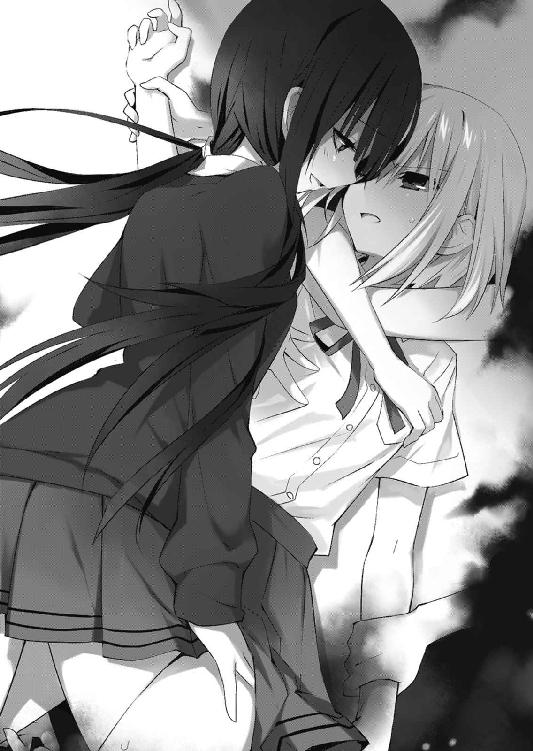
早く本部にそのことを伝えなくてはならない。否、たとえそうしたとしても、精霊が個人を狙っているなんて話を信じてもらえるかどうかはわからなかった。
──もしそのときは、折紙が、士道を守らなくては。
折紙は奥歯を噛みしめ、くっと拳を握った。
◇
「......むぅ」
十香は椅子に座ったまま顔を上げ、黒板の上にある時計を見やった。そろそろ昼休みが終わってしまう時間である。
お腹がコロコロと鳴る。朝ご飯以来食べ物を口にしていないものだから、健啖家の十香はもう目眩がするくらいお腹がペコペコだった。
でも、弁当はまだ開けていない。士道は先に食べていろと言ったが......士道と一緒に食べるご飯のおいしさを知ってしまった十香は、どうもそういう気になれなかったのである。
「シドー......」
もう教室には、外に遊びに行っていた生徒がちらほらと戻り始めていた。気の早い者などは、もう次の授業の準備を始めている。
だが、まだ士道の姿は見えなかった。
「う......う......」
なぜだろうか、目がじんわりと熱くなって、鼻で呼吸をするのが苦しくなってくる。
ずずっと洟をすすって、目元を拭う。服の袖が少し濡れていた。──と、そこに。
「──あれ？ どしたの十香ちゃん」
「何、まだご飯食べてないの？」
「もう授業始まっちゃうよー」
外で昼食を摂っていたらしい女子三人組が、教室に入るなり、十香に声をかけてきた。
よく十香を構ってくれる女子たちである。確か名前は、右から亜衣、麻衣、美衣。似たような名前が縁で仲良くなったのだという。
「ってうわ！ どーしたのよ十香ちゃん！ 泣いてんじゃん！」
「なになに、誰かに何かされたの!?」
「おいコラ誰だよ出てこいやぁッ!!」
見事なコンビネーションで十香を囲い込み、三人が口々に言う。教室の男子たちがビクッと肩を震わせた。
「ち、違うぞ！ 別に何もされていないぞ！」
十香は慌てて手を振ると、三人に訴えかけた。
「ええ？ そうなの？」
「じゃあ何、どうしたの？」
「花粉症？ 花粉症なんだ？」
十香はブンブンと首を振ると、手元の弁当箱に視線を落とした。
「シドーがな、まだ戻ってこないのだ。......それで、今日は、あまりシドーと話せていないなあと思ってしまって、そうしたら、なぜか、こう......」
それを口に出すと、目からぽろぽろと大粒の涙がこぼれた。
「あぁっ！ 十香ちゃん！ いいのよ辛いならそれ以上言わなくて！」
「ていうか五河君あり得ないんですけど！ こんな可愛い子泣かせるとか！」
「首を落として豚の餌にしてくれるッ！」
三人がやたらテンション高く叫ぶ。十香は再びあわあわと制止した。
「し、シドーは悪くないのだ！ ただ、私が......」
十香は乏しい語彙の中から言葉を拾い集め、士道に非がないこと、十香がちょっと士道がいることに慣れてしまっていたことが原因なのだと説明をした。
それを聞いて、亜衣、麻衣、美衣がふぅむとうなる。
「十香ちゃん的には、五河君とお話しできて、ご飯とか食べちゃって、あまつさえ遊んだりできたらスーパーハッピーなわけね？」
亜衣が言ってくる。十香はこくこくとうなずいた。
「くぅッ、なんて純真なの。もうこれ五河君百叩きじゃ済まないでしょ」
次いで、麻衣が芝居がかった調子で涙を拭く真似をする。十香は目を丸くした。
「ちょっと家の物置からアイアンメイデンと三角木馬持ってくるわ」
美衣が真顔で言う。十香は首を傾げた。
そんな十香の様子を見ていた三人は「よし！」と膝を叩いた。
「十香ちゃんのためなら一肌脱ぐよ私は！」
と、亜衣が言うと、自分の鞄から紙切れを二枚持ってきた。
「あ、亜衣、あんたそれは......！」
「そう、天宮クインテットの水族館のチケットよ......ッ！ 確か明日開校記念日で休みでしょ？ 十香ちゃん！ これあげるから、明日五河君と行ってらっしゃい！」
「亜衣！ それはあんたが岸和田君と──」
麻衣が言いかけるのを、亜衣が手で制する。
「それ以上言うんじゃあねぇ！ 十香ちゃんが遠慮しちまうだろぃ......」
亜衣が言うと、麻衣と美衣は涙を堪えるような仕草をして、十香の肩をそれぞれ掴んだ。
「十香ちゃん......！ 黙って受け取ってちょうだい......！」
「亜衣を！ 亜衣を女にしてやってくんなせぇ......！」
「ぬ、ぬぅ......？」
十香はなんとなくこの場の雰囲気を壊してしまうことが躊躇われて、大人しく亜衣からチケットを受け取った。するとその瞬間、亜衣がその場にくずおれる。
「十香ちゃん......五河くんと......幸せに......ね」
「あ、亜衣ぃぃぃぃぃぃッ！」
「気をしっかり持って！ 傷は浅いわ！」
「......!? ......!?」
十香は目を白黒させると、チケットを持ったままキョロキョロと左右に首を回した。
もしかしたら、何かいけないことをしてしまったのかもしれない。十香は涙目になりながら、亜衣の手にチケットを戻した。
「ふぉぉぉぉ！」
すると、亜衣が復活した。
「亜衣！」
「奇跡だわ！」
「って、いやいや」
急に冷静になった亜衣が、十香にチケットを渡し直してくる。
「返しちゃ駄目でしょ十香ちゃん。これ持って、五河君にお誘いかけてみなさいって」
「お、おさそい......？」
「そ。明日デートしてらっしゃいって言ってんの」
「......！」
言われて、十香は目を見開いた。デート。確か、男女が一緒に遊びに行くことだ。
──嗚呼、それはとてもいい。
思えばここ最近ずっと、士道とデートに行っていない気がする。久しぶりにデート。それは、とっても素敵なことに思われた。
だが──一つ問題があった。
「わ、私が誘う......のか」
十香は緊張に汗を垂らしながら言った。
「ええ。いったんさい、いったんさい。たまには女子から誘うのもいいモンよ」
「だ、だが......もし断られたら......」
十香は不安げにそう言うと、三人は肩をすくめ、「はふゥ」と息を吐いた。
「おっけおっけ。まず断られはしないと思うけど、ていうか断ったりなんかしたら五河くん、シチュー引き回しの刑だけど、私たちがとっておきの秘策を授けてあげるわ」
「ひ、秘策......？」
「そう。結局男なんてエロで動いてるモンなのよ。十香ちゃんがこの誘い方すれば、一国を制圧できるレベルの兵力が集まるわよ」
「い、いや、そんなにはいらんのだが......」
「いーからいーから。まずはね......」
十香は、こくこくとうなずきながら亜衣の秘策を聞いた。
◇
帰りのホームルームが終わると、士道はすぐさま席を立ち、狂三のもとへと赴いた。
その際、右半身に十香のなんだかもじもじした視線を、左半身に折紙の絶対零度の魔眼を浴びた気がするが、どうにか無視して歩みを進める。
「狂三、ちょっといいか」
言ってから、廊下の方を指で示し、歩き出すと、狂三は大人しくあとをついてきた。
ひとけのない場所まで歩いてから、狂三に向き直る。
「士道さん。いかがいたしましたの？」
「あ、ああ。突然で悪いんだが......狂三、明日暇か？」
「？ ええ、大丈夫ですけれど」
「その、もしよかったら、この辺を案内しようか......？」
「え？ それって......」
「ま、まあ......平たく言うと......デート、かな」
瞬間、狂三がパァッと顔を明るくした。
「本当ですの!?」
「あ、ああ......どうかな？」
「もちろん。光栄ですわ」
「そっか、じゃあ......明日一〇時半に、天宮駅の改札前で待ち合わせな」
「ええ、楽しみにしておりますわ！」
狂三が満面の笑みで言ってくる。士道は「じゃあ、また明日」と軽く手を上げると、教室に戻っていった。
と、教室の扉を開けると、そこに折紙が立っていた。
「......い......っ!?」
「──彼女と何を話していたの」
怜悧な瞳で士道を見つめ、静かで抑揚のない声を響かせてくる。
「い、いや、何でもないよ」
「答えて。これは非常に──」
これ以上追及されたなら、口を滑らせてしまうかもしれない。士道はそう判断して、折紙の脇をすり抜けると、自分の机まで走って鞄を手に取った。
「い、急ぐからまたな折紙！ 十香！ 帰るぞ！」
「ぬ？ う、うむ！」
言って、追及を受ける前に逃げ去る。十香も何とか反応し士道のあとをついてきた。
「はぁ......はぁ......」
しばらく走り、折紙が追ってきていないことを確認してから速度を緩める。
「いきなりどうしたのだ、シドー」
「い、いや......とにかく、まあ......なんだ、帰るか」
「ん、うむ......」
十香が、どこか歯切れ悪くうなずく。
不思議に思わなくもなかったが......まあ、別にあえて追及するほどのことでもあるまい。士道は廊下を進むと、昇降口で靴に履き替え、学校の敷地を出て行った。
と、その道中。
「あ、あああああああああのだなシドー......！」
珍しく何も喋らずにいた十香が、妙に落ち着かない様子で声をかけてきた。
「ん？ どうしたんだ、十香」
「っ、あ、ああ。その......だな」
そこで十香は鞄の中を探る仕草を見せたが──なぜかきょろきょろと辺りの様子を窺うと、顔を赤くしてうつむいてしまった。
「ど、どうした？ 何かあったか？」
「な、なんでもない......！ 早く家に戻るぞ！」
十香は目を泳がせまくりながら叫ぶと、士道を先導するようにのしのしと歩いていった。
「なんだ、あいつ......」
十香の妙な様子に首をひねりながらも、そのあとについて行くような格好で帰路に就く。なぜかわからないが下校中、十香はあまり顔を見せようとしなかった。
ほどなくして、五河家と、その隣に聳えた精霊用特設マンションにたどり着く。
「おう、じゃあまたあとでな。今日も夕飯はうちで食うだろ？」
と、士道がいつも通りの挨拶をしながら手を上げかけ──途中で止めた。
理由は単純。十香がマンションではなく、五河家の方に足を向けていたからだ。
「十香？ 着替えてこないのか？」
「！ い、いいから、早く鍵を開けろ！」
「はあ......まあ、別にいいけどよ」
どうせ夕食時には五河家にご飯を食べに来る十香である。特に問題はなかった。ポケットから鍵を取り出し、扉を開ける。
「ただいま」
鍵がかかっているということは、琴里はまだ帰っていないのだが、つい習慣でそう言ってしまう。玄関で靴を脱いで家に上がると、そのままリビングに直行し、ソファに鞄を放って軽く伸びをした。
「んー......」
と、そこでガチャリと音がする。
どうやら士道のあとから家に入ってきた十香が、玄関の鍵を閉め直したらしい。そのまま、顔をうつむかせてリビングに入ってくる。
「ん？ 別に鍵閉めなくてもいいぞ？ どうせ琴里も帰ってくるんだし」
「............」
しかし十香は答えず、その場に鞄を落とすと、その中に手を突っ込み、何やらチケットらしきものを二枚、取り出した。
「し、シドー、もしよかったら......なのだが」
そしてそこで、何かを思い出したかのようにハッと顔を上げる。
「そ、そうだ、ちゃんとやらなくては......」
「ちゃんと......？ 何をだ？」
士道が首を傾げていると、十香は何やら慌ただしくリビングの窓に走っていくと、厚手のカーテンをピシャッと閉めてしまった。
「お、おい、十香......？」
「ちょっと待っていろ！ じゅ、準備する！」
「準備......？ な、何の......？」
だが、やはり十香は答えない。
今度は鞄からルーズリーフを一枚取り出し、テーブルの上に置いた。
そして、それを難しげな顔で見ながら腰元に手をやると、スカートの上部をくるくると巻き込んでいった。女子たちがスカートを一時的に短くする際の小技である。段々と、十香の健康的な太腿が露わになっていく。
「お、おい、十香......？」
十香の行動の意図が読めず、士道は頬に汗を垂らしながら眉をひそめた。
次いで十香は制服のリボンを緩めると、ブラウスのボタンを上から順番に外していった。第二......第三......なんと、第四まで。ブラウスの隙間から十香の白い胸元が覗き、士道は思わず目を逸らしてしまった。
「な、何やってんだ十香!? 着替えなら自分の家で──」
「し、シドー！」
十香は士道の言葉を遮ると、チケットを唇でくわえ、その場に四つん這いになって、いわゆる雌豹のポーズをとった。ちなみに、顔は熟れたトマトのように真っ赤っかである。
「こ、これを......！」
「な、なななんだ......!? どうしたってんだ一体!?」
士道が混乱したまま言うと、十香は「だ、駄目か......っ！」と悔しそうにチケットを口から取り落とした。......駄目も何も、意図が読めない。
しかし十香はテーブルの上のルーズリーフに再び目をやると、
「よ、よし......ッ！」
気合いを入れるように叫んで、チケットを拾い上げた。
そして今度はチケットを、開いた胸元に入れ──「ん？」と首を傾げる。
どうやら上手く挟めなかったらしい。少し前屈みになり、左手で両胸を寄せて谷間を作ってから、そこにチケットを挟み込んで士道に視線を向けてきた。
「な......ッ!?」
なんだかもうもの凄くイケナイものを見ている気がして、士道は後ずさった。
「シドー......そ、そのだな」
「お、おう......なんだ？」
「あ、明日......デェトに行かない......か？」
「は......？ で、デート......？」
「う、うむ......！」
十香が大仰にうなずき、胸元のチケットを示してくる。
......これは、あれだろうか。受け取れということだろうか。
これでチケットを取らなかったら、さらに十香の行動がエスカレートする可能性がある。
士道も高校二年生、思春期真っ盛りの男の子。興味がないといえば嘘になるが、さすがにこのままにはしておけなかった。顔中にびっしりと汗を浮き立たせながら、震える手をそろそろと十香の胸元に伸ばしていく。
そして、十香の胸に指が触れないよう注意を払いながら、チケットを摘み取った。
「お、おお！」
すると十香が顔をパァっと明るくし、姿勢を元に戻す。
と、次の瞬間十香は、スカートを元に戻し胸元を隠して鞄を手に取った。
「明日！ 朝一〇時に駅のパチ公前で待ち合わせだ！ で、では着替えてくる！」
そうとだけ言うと、十香は目にも留まらぬ速さでリビングを出ていってしまった。バタバタと廊下を走り、玄関の鍵を開けて外へ駆けていく。
「な、なんだったんだ......？」
士道は呆然と呟くと、手にしたチケットに目を落とした。どうやら水族館のチケットらしい。一体どこで手に入れたのだろうか。
ついでに、十香が置いていったルーズリーフに目を落とす。そこには、丸っこい文字で『十香ちゃん悩殺技集』と書かれていた。下に順番が記されている。
①雌豹のポーズ。
②おっぱいにチケット。
③上二つで駄目ならもう押し倒しちゃえ。
......よくわからないが、危ないところだったのかもしれない。
「なんだこりゃ......」
と、士道が首をひねっていると、再び玄関がガチャリという音を立てた。
十香が戻ってきたのかと思って身構えたが──違う。リビングに入ってきたのは、黒いリボンで髪を括った琴里だった。
「ただいま。って、ん......？」
薄暗い室内を不審に思ったのか、琴里が眉をひそめる。
「昼間からカーテンなんて閉めて、一体どんないかがわしい行為に耽ってたの、士道」
「な、なんもしてねえよ！」
「まあなんでもいいけど。何を持っているの？」
「ああ......実は、十香に......デートに誘われてな」
士道がそう言うと、琴里は感嘆するように口笛を吹いた。
「へえ。十香から誘ってきたの。いい傾向じゃない。一体いつ？ サポートするわよ」
「ああ、明日なんだが......」
「明日？」
琴里が難しげに顔をしかめる。
「ちょっと、明日っていったら、狂三との約束があるじゃない」
「あ──」
言われて、士道は思い出した。あまりにショッキングな十香の艶姿に失念していたが──そうだ、明日は狂三とデートの約束をしてしまっていた。
「やっべ、今から断ってくるか......？」
士道が言うと、琴里は憂鬱そうに首を横に振った。
「駄目よ。一度承諾したデートを取り消したりなんかしたら、十香の機嫌が崩れるのは明白。ただでさえ今朝から寂しさメーターが上昇気味だっていうのに」
「いや、承諾したってわけじゃないんだが......」
「大事なのは十香がどう思ってるか、よ。──まあ、仕方ないわ。私たちがサポートするから、どうにか二つのデートを両方成功させなさい」
「は──はぁッ!? そ、そんなこと......」
と、士道が声を上げかけたところで、ポケットの中の携帯電話が震え始めた。
画面を見ると、見知らぬ番号からの着信であることがわかる。
少々不審に思いながらも電話に出ると、電話口から静かな声が聞こえてきた。
『もしもし』
「ん......？ その声、折紙......か？」
『そう』
折紙が短く肯定を示してくる。士道は頬にひとすじ汗を垂らした。
「あれ......？ 俺、おまえに番号教えてたっけ？」
折紙は答えず、しばしの無言のあと、言葉を続けてきた。
『明日は休日』
「？ あ、ああ......そうだな」
『あなたは、一人になってはいけない』
「え......？」
士道が訝しげに返すと、折紙は声のトーンを変えないまま続けてきた。
『午前一一時。天宮駅前広場の噴水前で待っている』
「へ？」
『デート』
「........................は？」
『絶対に来て』
それだけ言うと、電話は切られてしまった。
......結局、士道の質問には答えてもらえなかった。
「誰よ、一体」
「いや、折紙だったんだが。なんか......で、デートに......誘われた」
「はぁ......!?」
琴里が、盛大に眉根を寄せて叫び声を上げた。
「デートって......まさか、明日じゃないでしょうね」
「そ、その......まさかで」
琴里は、額に手を当ててため息を吐いた。
第四章 トリプルデート
『──いい？ 午前一〇時に十香と落ち合って、東天宮の水族館へ。そうしたら何か途中で理由を付けて抜け出してちょうだい。外に出たら〈フラクシナス〉で拾うわ。それから一〇時三〇分に改札前で狂三と待ち合わせして移動、一一時には駅前の広場に戻って鳶一折紙と合流しなさい。ただ、この時点で十香を三〇分放置してしまうことになるわ。すぐフォローして。その後もできるだけ間隔を狭めて、それぞれの空白時間があまり多くならないように調整しないとね。タイムテーブル管理はこっちでやるから、士道はとにかく、彼女たちがへそを曲げないように優しい言葉をかけてあげて。最優先目標は狂三をデレさせてキスまでいっちゃうことだけれど、十香の機嫌を損ねても駄目だし、鳶一折紙に勘づかれるのも上手くないわ。どうにか──って、ちょっとねえ士道、ちゃんと聞いてる？』
「......き、聞いてるよ」
......頭に入っているかどうかは別だけれども。
士道は心中の呟きを悟られないように咳払いをすると、インカムから聞こえてくる琴里の声に小さくうなずいた。
結局士道は、十香と折紙からの誘いを断ることができず、トリプルブッキングデートを強行することになってしまったのである。
本来なら今は狂三の攻略を第一に考えるべきなのだろうが、約束を反故にすれば、十香の精神状態が著しく悪化し、精霊の力が逆流してしまう恐れがあるというし、十香や狂三とのデートに乱入される可能性がある以上、折紙も放ってもおけない。
その結果できあがったのが......この鬼のようなスケジュールだったのである。
『聞いてるだけじゃ意味ないのよ。ちゃんと頭に入れなさい』
「う......」
読まれていた。頬に汗が伝う。
『はぁ......まあいいわ。基本はそれに従って移動してちょうだい。準備はいい？』
「あ、ああ......たぶん」
言いながら、顔を下に向けて自分の装いを見直す。今の士道の格好は、紺色のポロシャツにベージュのチノパンというシンプルなものだった。
琴里曰く、「女の子の男の子に対するお洒落採点法は基本的に減点方式」らしい。初心者があれこれ気を回しても失敗は目に見えているので、無難な服装でもいいから清潔感を大事にせよ、とのことだった。
『さ、そろそろ時間よ。──私たちの戦争を始めましょう』
「お、おう」
言われて、士道は緊張を抑え込むように深呼吸をした。
既に士道は、天宮駅東口を出てすぐのところにある犬の銅像前に立っている。
確か正式名称は別にあるのだが、あまりにも渋谷駅の忠犬と容貌が似ているため、近隣住民からは親しみと嘲りを込めて『パチ公』と呼ばれていた。哀れなワンちゃんである。
とはいえ駅を出てすぐという配置のため、本家忠犬と同じように、待ち合わせスポットとして機能していた。周囲には士道の他にも、結構な数の人間が見受けられる。
と、その人の波を割るようにして、聞き慣れた十香の声が、士道の鼓膜に届いてきた。
「シドー！」
声の方向に振り向いて、目をやる。そこには、もう太陽より眩しいんじゃないかなあなんて思えるほどの満面の笑みを浮かべた十香が立っていた。
装いは、いつもの制服ではない。薄手のチュニックにショートパンツという組み合わせだった。これがまた、誂えたように似合っている。
「こ、これは......」
士道がポカンと十香を見つめていると、インカムから令音の声が聞こえてきた。
『......ああ、十香から、何を着ていけばいいのかと訊ねられたんだ。悪くないだろう？』
「は、はい......」
ぼうっとした様子で口を開く。悪くないどころかとてもイイ。一瞬目を釘付けにされた。
「シドー？」
「あ、ああ......！ 悪い。ボーッとしてた。......ん、似合ってる。可愛いぞ、十香」
「な......っ」
士道が言うと、十香は顔を真っ赤に染めた。
あたふたと手と首を動かしてから、くるりと踵を返す。
「い、いいから行くぞ！ ほら、早く！」
「な、なんだよ、急かす──」
と、言いかけたところで、士道は言葉を止めた。前を歩いていた十香が急に足を止めたため、ぶつかってしまったのである。
「十香？ どうした？」
「む、むう......」
十香が、困ったように眉を歪め、振り返ってくる。頬はまだ少し赤かった。
「シドー、そういえば、一体どこ向かえばいいのだ......？」
「え？ 水族館じゃないのか？」
十香が、ものすごく困った顔を作る。どうやら、場所がわからないらしい。
「はは......ちょっと待ってな」
士道は自分の財布からチケットを取り出すと、裏面の地図に視線を落とした。
「ええと？ 天宮クインテットか。ん、なら向こうだな」
言って、十香が進んでいた方向とは逆の道を指さす。すると十香はくるりと身体を回転させ、士道の後ろにぴったりと張り付いた。たぶん、先に進めということだろう。
士道は苦笑すると、歩みを進めていった。
と、そこで。
「............ッ!?」
視界の端に見覚えのある人影が映った気がして、士道は眉根を寄せた。
身体の向きは変えないようにしながら、視線だけを左手に向ける。
駅前から道路を隔てた広場。その噴水前に、鳶一折紙の姿があったのである。
タートルノースリーブにミニスカートという出で立ちで、肩に小さな鞄を掛け、ぴくりとも動かず直立姿勢を保っている。何も知らない人が見たなら、マネキンに間違われてもおかしくはなかった。
確か折紙との待ち合わせは一一時だ。今の時刻は一〇時五分。随分と気が早かった。
「ぬ？ どうかしたのか、シドー」
「い、いや、何でもないぞ！ さあ行こうすぐ行こう即行こう！」
長くここにいて折紙に見つかってしまっては大変である。士道は十香の姿を隠すように自分の右手側を歩かせると、自分も顔を十香の方に向けるようにしながら歩き始めた。
『あら、なかなか気遣いが身に付いてきたじゃない。女の子に車道側を歩かせない。視線を女の子から外さない。うん、ベタだけど、意外と嬉しいものよ、そういうの』
「そ、そうか......」
士道は苦笑しながら小声で琴里に返した。本来の意図とは違うのだが......まあ、結果オーライということにしておこう。
どうにか折紙の視界を抜け、少し歩調を緩める。
腕で額を拭い、一息。と、そこで隣を歩く十香が声をかけてきた。
「そういえばシドー」
「ん？ どうした？」
「水族館とは一体何なのだ？」
「何って......十香が行きたかったんじゃないのか？」
「勘違いするな。私はシドーと一緒にデェトがしたかっただけだぞ」
「............」
何だろうか、顔が熱くなる。......普通は「か、勘違いしないでよねっ！ 水族館に行きたかっただけなんだから！」とかだと思うのだが......なんか、逆だった。
気を取り直すようにこほんと咳払いをし、口を開く。
「水族館ってのは......まあ、魚とかがたくさんいるところだ」
「なんと！」
十香が、目を丸くして声を上げる。
「塩焼きか!?」
「いやいやいや」
「では煮付けか？」
「だから違うって」
「とすると、アクアパッツァか？」
「は......？」
「はっ、もしや清蒸？」
「食べる方向ばっかじゃねえか！ ていうかなんでそんなに調理法に詳しいんだよ!?」
どこで仕入れた知識か知らないが、随分と偏りがあった。後半などは、料理に明るい士道でなければ突っ込みきれなかったかもしれない。
「むう、違うのか？」
「ああ。魚が泳いでるのを見て楽しむんだよ」
「魚が......泳ぐ......!?」
十香は戦慄した様子で眉をひそめた。
そういえば十香は、美味しく調理されたあとの魚しか見たことがなかったかもしれない。
「あー......まあ、百聞は一見に如かずだ。とりあえず行ってみよう」
「む......うむ、そ、そうだな」
うなずく十香を引き連れて、道沿いに進んでいく。
ほどなくして、二人は目的の天宮クインテットにたどり着いた。去年完成したばかりの、新しい複合商業施設である。すぐ近くに同グループの経営するホテルや室内遊園地、映画館、ショッピングモールが並び、まるで一つの小さな街のようになっている。新たな観光地としても人気が高く、平日だというのに数多くの人影が見受けられた。
「さて、と。水族館はあれだな」
「シドー」
と、十香が不意に、士道の手をきゅっと握ってきた。
「......っ!? と、十香？ ど、どどどどうかしたのか......？」
「む、こう人が多くてははぐれてしまいかねん」
「ああ......そ、そうだな」
士道は激しく脈打つ心臓をどうにか制しながら手を握り返すと、水族館に入っていった。
受付でチケットを手渡し、薄暗い館内に足を踏み入れる。
すると、
「な......っ、なんだこれは......っ！」
繋いでいる手がビクッと震えると同時、十香が館内に響き渡るような声を発した。
周囲にいた客が一斉に士道と十香に視線を注いでくる。
「と、十香。ここでは静かにな」
「！ う、うむ......すまん。だがシドー、これは......凄いぞ」
少し小声になって、十香は顔を上げた。
館内は一面がガラス張りになっており、大小無数の魚たちが泳ぎ回っていた。士道でさえ思わず感嘆の声を漏らしてしまうほどのスケールである。十香が驚くのも当然といえば当然だった。
「こ、これが全て魚か......」
足下をまったく見ずに歩きながら、十香が言う。
「ああ、そうだ。綺麗なもんだろ？」
「う、うむ。とても綺麗だ......」
言いながら、十香が士道から手を離す。そのままフラフラと歩いていき、大きなガラスの壁にぺたりと両手をつけた。その目の前を、小さな魚の大群が横切っていく。
「おお......」
十香が目をまんまるにして、魚群の動きを目で追う。その姿が妙に可愛らしくて、士道は思わず笑ってしまった。
「し、シドー、もっと奥まで行ってみよう！」
「はは、そうだな。じゃあ──」
と、そのとき。右耳に装着していたインカムから軽快なアラームが鳴り響き、士道はビクッと肩を揺らした。
『──士道、そろそろ狂三との待ち合わせ時間よ。〈フラクシナス〉で拾うから、外に出て人目のない場所に移動してちょうだい』
「......っ」
「シドー？ 行かないのか？」
急に足を止めた士道を不思議に思ってか、十香がキョトンとした様子で首を傾げてくる。
「あー......っと」
士道はしばらく目を泳がせてから、お腹の辺りを押さえて少し前屈みになった。
「あ、あいたたたた......っ」
「!? ど、どうしたのだシドー！」
「い、いや、ちょっと腹の調子がな......トイレ行ってくるから、少し待っててくれないか？」
「な......っ！ だ、大丈夫なのか......？ も、もし酷いようなら琴里たちを......！」
「い、いや！ そんな深刻なアレじゃあないから心配しないでくれ！ な!?」
「う、うむ......」
士道が言うも、十香は心底心配そうな顔のまま、士道を見つめてきた。......ものっすごい罪悪感が胸中に広がる。
だがモタモタしていては狂三を待たせることになってしまう。士道は、段ボールに入った捨て犬の前から去るような心地で出口に足を向けた。
「で、できるだけ早く戻るから、魚でも見ててくれ！」
「う、うむ、わかった。辛かったらすぐ琴里に連絡するのだぞ......!?」
「お、おう......」
うなずき、お腹を押さえながら歩いていく。
角を曲がり、十香の視界から外れた辺りで姿勢を直し、全速力で駆け出した。
「ま......っ、待たせたな......！」
士道が息を荒くしながら天宮駅東口改札の前にたどり着いたときには、既にそこには狂三の姿があった。
高級そうなブラウスにロングスカートという出で立ちだったのだが、それら全てが黒で統一されているためか、まるで喪服でも着ているかのように見えた。
「いいえ、わたくしも今来たところですわ」
言って狂三がにこりと微笑む。士道は呼吸を整えると、改めて狂三に向き直った。
「悪い......少し遅れた」
「うふふ、そんなに急がれなくても大丈夫でしたのに」
「い、いや、まあ......はは」
曖昧に笑って誤魔化す。
いくら〈フラクシナス〉を通ってショートカットができるとはいえ、転送のためには、上空に遮蔽物がなく、人目のない場所に移動する必要がある。水族館から人通りの多い駅前に移動してくるには、それなりの距離を走らねばならないのだった。
『──さ、今日はこれが本番よ。しっかりね』
琴里が言ってくる。士道はインカムを軽く小突いて了解を示した。
今日の最大目標は、狂三とキスをし、精霊の力を封印することである。
改めてそれを自覚するのと同時に狂三の唇が目に入り、士道は気まずげに頬をかいた。
と、狂三がぺこりと頭を下げてくる。
「今日はお誘いいただきありがとうございます。とても嬉しいですわ。──それで、まずはどちらに行かれますの？」
「ん......そうだな」
士道が言うと同時、右耳に琴里の『待ちなさい』という言葉が聞こえてきた。
〈フラクシナス〉のメインモニタに、選択肢が表示される。
①ショッピングモールでブラブラお買い物デート。
②二人で甘い恋愛映画を。
③ランジェリーショップで彼女の試着を観賞。
「総員、選択！」
言うと、すぐさま琴里の手元の小型ディスプレイに集計結果が表示された。
「ふむ......」
琴里がうなっていると、艦橋下段からクルーの声が響いてきた。
「ここは②ですって！ 薄暗い空間、不意に重なる手と手！ これしかありません！」
「いやいや、①しかありませんよ！ 女の子はお買い物大好きなんですって！」
確かに、どちらもいけそうではある。だが琴里は頬をかいた。ここから一番近いショッピングモールに映画館となると......十香のいる天宮クインテットになってしまうのだ。さすがに鉢合わせするとは思えないが、わざわざ不安要素を増やすこともないだろう。
とはいえ、残った選択肢となると......
「③って、さすがにちょっと引かれない......？」
琴里が辟易した調子で言うと、下段から令音が声を上げてきた。
「......いや、だが数値や昨日の反応を見る限り、絶対に断られるとも言えないんだ」
「ふむ......」
琴里は眉をひそめてうなった。リスクは高いが、これが通るのなら、狂三がよほど士道に心を許しているという証左にもなる。有用なリトマス試験紙でもあった。
「士道、③よ。駅ビルのランジェリーショップを案内してあげなさい」
『おう、了解......って、はぁ......!?』
スピーカーから、士道の素っ頓狂な声が聞こえてきた。
「え、ええと......狂三。何か買いたいもの......というか、見たいものってないか？ た、たとえばこう、身につけるもの......とか」
「お洋服ですの？ ああ、それは見たいですわね」
「や、洋服というか......その下に着けるものというか......」
「その下......？」
そこで士道の言っていることに気付いたのだろう、狂三が頬をほんのりと染める。
「い、いや、やっぱりおかしいよな！ よし、とりあえず別の──」
士道が額に汗を滲ませ、歩いていこうとすると、服の裾がきゅっと摘まれた。
「え......？」
見やると、狂三が上目遣いになりながら、視線を士道に向けてきていた。
「士道さんが......選んでくださいますの？」
「え!? あ......あ、ああ......」
士道が困惑気味にうなずくと、狂三ははにかんだような笑みを浮かべた。
「ふふっ、では──可愛らしいのを、お願いしますわ」
「え、ええと............はい」
自分から誘った手前、嫌とも言えない。士道はロボットのような挙動で歩き出した。
『驚いた。本当に乗ってくるなんて』
「......おい」
おまえが指示したんだろうが、とインカムを小突く。
と、そこで、道路を隔てた駅前広場が視界に入る。噴水の前には、三〇分前から変わらぬ姿勢で立っている折紙の姿が見受けられた。
だがまったく違いがないわけではなかった。ナンパだろうか、三人組の男が、やたらフレンドリーな調子で折紙に話しかけていたのである。
しかし折紙は微動だにしない。まるで男たちの存在に気づいていないかのように。
と、三人組のうち一人が、無視されたことに腹を立てたのか、折紙の肩を掴もうとする。
折紙は鮮やかな身のこなしで男の腕をひねり上げ、地面に組み伏せた。
よほど痛かったのだろう、男が涙目になって悲鳴を上げる。が、男たちの仲間は怖がってしまってその場から動けずにいた。そうしているうちに騒ぎを聞きつけて野次馬が集まり、終いには警官がやってきて、男たちを連れていってしまった。
折紙は何事もなかったかのように、先ほどと同じ姿勢に戻った。
「............」
「士道さん、どうかしまして？」
頬に汗を浮かべながら足を止めていた士道を不審に思ってか、狂三が声をかけてくる。
「や......な、なんでもない」
士道は折紙に気づかれないように、駅のすぐ近くに聳えたビルの中に入っていった。
そしてエスカレーターを使い三階、ランジェリーショップへ。士道も何度かこの駅ビルを利用していたが、さすがにこのスペースに足を踏み入れるのは初めてだった。
入り口から、やたらとセクシーな下着が並べられたエリアである。無論、店員も客も、そこにいる全員が女性だった。
士道が店に入るなり、一瞬辺りから好奇の視線が注ぐ。狂三が隣にいるからいいようなものの、あまり気持ちのいい空間ではなかった。
「まあ！ 可愛らしいですわね！ 士道さん、どちらがいいと思いまして？」
さっそくお気に入りを見つけた狂三が、上下セットの下着を二着示してくる。どちらも精緻なレースで飾られた可愛らしいデザインで、士道は思わず顔を赤くしてしまった。
「そ......そうだな。ええと......」
『士道、ちょっと待ちなさい』
艦橋のメインモニタに、選択肢が表示される。
①右手側。ピンク地に黒レースの妖艶なデザイン。
②左手側。淡いブルーの爽やかなデザイン。
③「俺はもっと露出度高い方が......」後ろにかかっている下着を指さす。
「総員、選択！」
琴里が叫ぶと、すぐさま集計結果が表示された。僅差だが、多いのは意外にも、③。
「ここまで来たなら攻めに出ましょう！ 最初に感覚を麻痺させておいて、キスへの抵抗を少なくするんです！」
クルーの声が響いてくる。琴里はふむとあごに手を当てた。
「ま、ＡＩがあえて第三の選択肢を提示してきたんだし、試してみる価値はあるかしらね。──士道、③よ。狂三の後ろの下着を選びなさい」
琴里が言うと、画面の中の士道が狂三の後ろを指さした。
「そ、そうだな......どっちもいいけど、俺はあっちの方が......」
指示通り狂三の後ろの下着を指さす。と──そこで士道は頬をぴくりと動かした。
そこにかかっていたのは、シースルー素材の、なんともきわどい代物だったのである。
「士道さんはこれがよろしいんですの......？」
「い、いや、なんというか......」
士道がしどろもどろになっていると、狂三は手にしていた下着を元の場所に戻し、躊躇いがちに、士道が示したセクシーランジェリーを手に取った。
「や、狂三、何も無理に──」
「いえ、せっかく士道さんが選んでくださったのですもの。──試着してみますわ。似合っているかどうか見てくださいまして......？」
「え、と......お、おう......」
士道がうなずくと、狂三は目の前にあった試着室に入り、カーテンを閉めた。
自然、士道は店内に一人取り残される形になる。......なんだか周囲からの視線が一層強くなった気がした。
「............」
居心地の悪い空気に身をよじる。と、そこで士道の肩がちょんちょん、とつつかれた。
「ん......？」
不思議に思って振り向いてみると、そこには少女が三人立っていた。一瞬ポカンとするが、すぐに思い出す。確か士道のクラスメートの、亜衣・麻衣・美衣トリオだ。
「やーやー五河くん。なんでこんなとこいんの？ 女装癖？」
「ていうか今日は十香ちゃんと水族館デートじゃないの？」
「え、まさかすっぽかしたの？ 死にたいの？」
亜衣、麻衣、美衣の順に、次々に口を開いてくる。
「え？ あ、いや......」
士道は思わず口ごもった。なぜこの三人が十香との約束を知っているのかも気になったが......今はそれどころではない。今狂三と一緒にいるのを見られたら、あとあと厄介なことになる可能性があった。
するとそんな士道を見てか、三人が一斉に士道を睨んできた。
「え？ ちょっとマジ？ あり得ない。十香ちゃんのお誘い断るとか──」
「い、いや、そんなことしてねえって！ 今から行くところだよ！」
士道が慌てて首を振ると、三人は疑わしげな眼差しを送ってくる。
「本当でしょうね？ もし嘘だったら許さないかんね。私のお父さん、黒魔術結社の幹部なんだから。女の子に触れるたび寿命が一年縮む呪いとかかけてもらうわよ」
「そうよ。十香ちゃん泣かせたりしたらタダじゃ済まさないわ。私のお母さんＳＭの女王様なんだから。泣きながらありがとうございますって言うまで調教してもらうわよ」
「本気で骨も残らないと思いなさい。私の伯父さん、外国でヒットマンやってるんだから。この前誕生日にもらった『一人殺したらもう一人サービス券』使うわよ」
「紳士服のサービスみたいな券で殺されてたまるか！ ていうか一人殺してんのかよ!?」
たまらず叫んでから、士道ははあと息を吐いた。
「と、とにかく。十香との約束は破ってねえから安心──」
と、そこで試着室のカーテンが開かれる。
「どうですかしら......？」
なんて、狂三が少し恥ずかしそうに足を摺り合わせながら、高校生にあるまじき布面積の下着と、それに申し訳程度に覆われた白い肌を晒す。
「......ちょっと、五河くん？」
瞬間、周囲の温度が下がった気がした。
「あ、あの、これはだな......」
と──士道が弁明しようとしたところで、右耳に軽快なアラームが鳴る。
次いで、琴里の声が聞こえてきた。
『士道、時間よ。......本当なら狂三に注力しなきゃならないところだけど、待ち合わせに遅れて捜し回られても面倒だわ。鳶一折紙のもとに向かってちょうだい』
「そ、そんなこと言われても......」
『いいから、早く向かいなさい。──あ、狂三にちゃんと「可愛い」って言ってあげるのよ？』
「......り、了解」
士道は意を決すると、「あいたた......」と腹を押さえた。
「すまん狂三！ ちょっと腹具合が悪い！ トイレ行ってくるからしばらく待っててくれ！ ちなみにその下着似合ってる！ 可愛いぞ！」
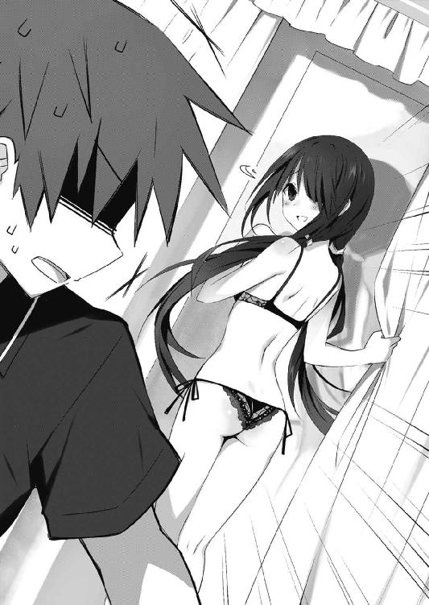
士道がそう言って駆け出すと、後方で狂三が「まっ」と頬を赤くした。
だがその周囲に展開した三人が、凄まじい怒声を士道の背に放ってくる。
「ちょっと待てコラァァァッ！ なんで時崎さんがいるわけ!?」
「しかももうこんなエロ下着を選ぶ仲!? 十香ちゃんとは遊びだったの!?」
「今私は、貴様を刺し殺すか撃ち殺すか迷っている！」
士道は泣きそうになりながら、ぴかぴかの床を走っていった。
「す、すまん......、折紙......っ、ちょっ、遅れた......！」
息も絶え絶えに士道が言うと、折紙は表情を変えぬまま士道の目を見つめて唇を開いた。
「問題ない。私も今来たところ」
ダウト。
......なんて言ってしまいそうな心地をどうにか抑え込む。少なくとも折紙は、一時間前にはもうここにいたはずだが、士道がそれを知っていてはおかしなことになる。
「え、ええと......今日はどこに行くんだ？」
「映画」
士道はぴくりと頬を動かした。ここから一番近い映画館といえば──
「な、なあ折紙、その映画ってどこで......」
「天宮クインテット」
「......ですよねー」
士道は引きつった笑みを浮かべながら、インカムをコンコンと小突いた。
『んん......そうね。十香と鉢合わせする可能性があるし、あまり望ましくないわ。別の場所に変えられるか打診してみてちょうだい』
「あ、あのだな折紙、もしよかったら別の──」
と、士道が言いかけたところで、折紙がチケットを一枚手渡してきた。
「先に渡しておく。なくさないで」
「......はい」
完全に先手を打たれていた。チケットまで用意されているのに断るのは不自然だろう。
『......ま、仕方ないわね。敷地も広いし、行く施設が違うんだから大丈夫でしょう』
「そ、そうだよな」
士道は小声で言ってから、折紙に向き直った。
「じゃあ、行くか」
折紙がこくりとうなずく。二人は並んで歩き出した。
だが不意に折紙が士道の腕に自分の腕を絡ませ、ぎゅっと身を寄せてきたものだから、士道は思わず硬直してしまった。
「あ、あの......折紙さん......？ 何をしてらっしゃるんでしょうか......？」
「腕を組んでいる」
単純明快だった。何を言っても無駄と悟って、心臓をバクバク言わせたまま歩き出す。
なんかもうそのたびに、腕に柔らかい感触がまとわりついて、士道は目を泳がせた。
妙に時間が長く感じる。十香のときと同じルートを辿り、天宮クインテットの敷地内に到達したころには、緊張で軽く一歳くらい歳をとってしまった気がした。
と、敷地内に入るなり、なぜか折紙が水族館の方に向かって歩き始める。
「......ッ！ お、折紙......！ ど、どどどどこ行くんだ、映画館はこっちだぞ......!?」
慌てて折紙の腕を引っ張る。だが折紙は静かに道の先を指さした。
「上映までまだ時間がある。軽く昼食を摂っていく」
「え......？」
折紙の指の先を見る。水族館の隣に、こじゃれたレストランが見受けられた。
「あ、ああ......なるほど、そうか」
ほうと安堵の息を吐く。
だが、十香のいる水族館と目と鼻の先というのは、精神衛生上あまりよろしくなかった。確か敷地内には他にも食事ができる場所があったはずだ。士道は場所の変更を提案しようとし──たのだが、半ば強引に、ざりざりと引きずられていってしまった。
「あ、あれ......？」
士道が呆気に取られているうちに、レストランに入ってしまう。
どうやら席を予約していたらしい。折紙が名前を告げると、窓際の席に案内された。
料理の方も既に予約を入れてあるらしく、ウエイターは飲み物の注文だけを取って去っていった。
「............」
「............」
それからしばらく、向かい合ったまま沈黙が流れる。
『......何か言いなさいよ、士道』
「あ......っ、ああ......」
士道は頬をかくと、唇を動かした。
「なあ折紙、今日はなんで俺をデートに誘ったんだ......？」
士道が言うと、折紙は、士道の目をジッと見つめてきた。
「今日は、できるだけ一人にならないで欲しかった」
「え......？」
眉をひそめる。だが折紙は構う様子もなくあとを続けた。
「デートが終わったら、うちに来て欲しい」
「......!? ど、どういうことだ......？」
「そして、しばらくうちに泊まって欲しい」
「え──ええッ!?」
士道は思わず大声を出してしまった。周囲の客たちが驚いたような目を向けてくる。
だが、今の士道にそれを気にする余裕はなかった。
「な、ななななななんでいきなり、そんな......」
「私は本気」
「え、ええええええと............っ」
目が泳ぎまくり、しどろもどろになる。実際、言葉に違わず折紙の目はマジだった。というか、彼女が冗談を言っている場面などは思い浮かばなかった。
と、そこで天の助け。ウエイターが料理を運んでやってきた。慣れた手つきでテーブルの上に皿を置き、簡単な料理の説明をしてから、伝票を置いて去っていく。
「と、とりあえず冷めないうちに食べよう！ な!?」
士道が言うと、折紙は一応納得した様子でこくりとうなずいた。
混乱した頭のまま、黙々と料理を口に運ぶ。正直、あんまり味がわからなかった。
そしてそれらを食べ終えたころ、右耳にアラームが聞こえてきた。
『士道、十香が不安がっているわ。一旦戻ってあげて。そこからなら歩いて行けるわね？』
士道は了解を示すようにインカムを小突くと、その場から立ち上がった。
「お、折紙！ すまん、ちょっとトイレに行ってくる！」
士道はそう言うと、トイレの前を通ってから店の外に出ていった。
士道が入り口で半券を提示し、水族館に再入館すると、入り口からほど近いエリアに、十香の姿を見つけることができた。
眉は不安そうな八の字に歪み、誰かの姿を捜すようにしきりに辺りを見回している。
誰か、なんて考えるまでもなかった。士道の他にいるはずがない。
「十香！」
士道が近づき、声を掛けると、十香は曇っていた表情をパァっと明るくした。
「シドー！ だ、大丈夫だったか......？」
「お......おう、なんとかな」
言って、士道がお腹をポン！ と叩くと、十香は心の底から安堵したように息を吐いた。......なんだか、もの凄く良心が痛む。
と、そこで十香のお腹がコロコロコロ......と可愛らしい音を立てた。
「ぬ......むう」
十香が恥ずかしそうに顔を伏せる。士道は思わず苦笑してしまった。どうやらお腹が減ったらしい。
とはいえ無理もない。もう時間的には昼時なのである。
「十香、ここチケットの半券あれば再入館できるみたいだし、何か食べにいくか？」
「む......うむ！ それはとてもいいと思うぞ！」
士道が言うと、十香は大きく首を前に倒してきた。
「じゃあどうするかな。十香、何か食べたいものとかあるか？」
「ん、シドーは何が食べたいのだ？」
「え......俺か？ 俺は......」
士道はお腹をさすった。今し方料理を平らげてきたため、まったくお腹が減っていなかったのである。
「いや、俺は......今はいいや。十香が好きなものでいいぞ」
しかし士道がそう言うと、十香がまたも不安そうな顔を作った。
「シドー......ま、まだお腹が痛いのか......？ やはり琴里に連絡した方が......」
「う......」
......なんだか、もう一食食べねばならないような気がした。
「す、すまん、待たせたな......！」
十香との食事を終え、一旦駅ビルにいる狂三のもとへ戻った士道は、パンパンになったお腹をさすりながらそう言った。
「いえ。それより、大丈夫ですの？」
狂三が、士道を心配するように言ってくる。
ちなみに彼女の手には、ランジェリーショップの紙袋が握られていた。
「ああ......なんとか。──て、もしかして、あの下着買ったのか......？」
「ええ。──士道さんが、似合うと仰ってくれましたので」
「......っ」
士道はなんだか気恥ずかしくなって、頬をかいた。
話題を逸らすように、キョロキョロと辺りを見回す。......まあ、ランジェリーショップの前でキョロキョロする士道の姿は、それなりに怪しそうではあったけれど。
「......そ、そういえば、あの三人組は......？」
「士道さんがお手洗いに行ったあと、お帰りになられましたわ」
「そ、そうか......」
ほう、と息を吐く。どうにか首が繋がったようだった。
「あ、伝言を言付かっていますわ。ええと──『五河くん、あとで、泣かす』」
「............」
前言撤回。明日が大変そうだった。
と、そこで狂三が、士道の顔を覗き込むようにしながら唇を開いてくる。
「ところで、士道さん」
「ん......？ なんだ？」
士道が首を傾げると、狂三が無邪気な笑顔を浮かべながら、絶望的な言葉を吐いた。
「そろそろ、お腹が空きませんこと？」
◇
「ふぅ......士道さんたら。せっかくのデートですのに、今日は随分と忙しないですわね」
公園のベンチに腰掛けながら、狂三は小さく息を吐き出した。
時刻は三時三〇分。士道が通算三〇度目のトイレに立ったあとのことである。
デートを始めてから五時間ほど経っているというのに、一緒にいたのはせいぜいその三分の一程度に過ぎなかった。
「──まあ、でも、いいですわ」
狂三は手の平の上にあごを置いて、ふふ、と微笑んだ。
そう。そんなのは些細な問題だ。全ては過程に過ぎず、道程に過ぎない。
「どうせ最後は──わたくしのものになるんですもの」
人差し指でトントン、と頬を叩きながら、適当な鼻歌を口ずさむ。
ふと目を閉じると、自然と士道の顔が浮かんだ。
もしかしたらこの感情は、人間でいうところの恋にあたるのかもしれなかった。
士道のことを知って以来、寝ても、覚めても、彼のことが頭にちらつく。
もっと彼のことを知りたい。
彼の趣味。
彼の思想。
彼の──味。
「──ふふ」
狂三はさらに笑みを濃くし、その場から立ち上がった。んん、と小さく伸びをする。
頭の中で妄想を巡らせていると、どうしても身体が熱くなってしまう。何か、冷たいものが飲みたくなった。
確か来がけの道に自動販売機があったはずである。どうせ士道はしばらく帰ってこないだろうし、少し離れても問題はあるまい。狂三は軽い足取りで公園を横切っていった。
──と。
「......？」
公園を抜けて静かな路地に出、自動販売機の前まで来た狂三は、片眉を動かした。
せっかく良い気分だったのに、耳が、不快な声と音を拾ったのである。
「............」
狂三は無言のまま足を動かすと、奥まった場所にある路地裏の袋小路にたどり着いた。
「......あらあら。何をしておられますの？」
そして、静かに半眼を作り、唇を開く。
「......いッ？」
狂三に声をかけられた少年が驚いたように肩を揺らし、振り向いてくる。
その場には、四人の人間がいた。いずれも銃器──ここは日本だ。モデルガンだろう──を手にし、路地裏の奥に向けていた。
そして袋小路の最奥には、小さく蠢く影が見て取れる。猫だ。生まれてそう間もない仔猫が、足を引きずりながらみーみーと鳴いていた。
そこで、悟る。改造モデルガンの試射か、安易で容易なストレス発散か──まあ、そんなところだろう。狂三はすっと目を細めた。
「っ、......んだよ。脅かすなって」
「おい、どーしたんだよ」
「いや......女の子が」
そこで全員が狂三の存在に気づいたらしい。皆一斉に視線を向けてくる。
「あー......悪いんだが、ちょっとここは使用中だ。向こういってくれるかな」
言って、狂三を追い払うように手を振ってくる。
しかし狂三は足を一歩前に踏み出すと、魅力的な微笑を作って見せた。
「あらあら。そんなことおっしゃらないでくださいまし。これでも銃の扱いには一家言ありますのよ？ わたくしもお仲間に入れてくださいな」
「あ......？」
少年の一人が訝しげに狂三を睨み付け──眉を動かす。
どうやらようやく、自分の目の前にいるのが絶世の美少女であることに気づいたらしい。途端に馴れ馴れしい笑みを浮かべ、狂三の方に近づいてきた。
「あー、何、君もやりたいの？」
「ええ。是非お願いしますわ」
「しょうがねえなあ。じゃあほら、これで──」
「うふふ、お気遣いなく。──それより、少しだけルールを変えませんこと？」
狂三の言葉に、少年たちが首を捻る。
「ルールを？ どういうこった？」
「難しい話ではございませんのよ。──ただ少し、的を替えるだけですわ」
狂三は、凄絶な笑みを浮かべた。
◇
「むう......シドーはどこへ消えたのだ......」
十香は眉をひそめながら、首を左右に振って辺りを見回した。
辺りにはたくさんの人が溢れていたが、士道の姿は見受けられない。
何度も頻繁に席を外す士道が心配になり、あとをつけてみたのだが、ひとけのない建物の裏手に入り込んだところで、その姿が忽然と消えてしまったのである。
そう、せっかくのデートだというのに、士道はすぐにいなくなってしまうため、あまり一緒にいることができないでいたのだ。
「むう......」
十香は不満げに、そして不安そうにうなった。
士道とのデートはとても楽しい。二人で歩いているだけで、喋っているだけで、本当に時間を忘れてしまうような感覚を得ることができる。
でも、いや、だからこそ──士道がいなくなってしまったあとの寂しさは、より強くなってしまうのだった。
と──考え事をしていたからだろうか、十香は向こう側から歩いてきた人とぶつかってしまった。
「むぉ......っ！」
その場に尻餅を突いてしまう。十香はお尻をさすりながら立ち上がった。
「す、すまん。急いでいたのだ」
「大丈夫。こちらも不注意だった」
十香が申し訳なさそうに言うと、その人物は抑揚のない声で返してきた。......なぜだろうか、妙に聞き覚えのある声だった。
訝しげに眉をひそめ、顔を上げる。......十香が一番見たくない顔が、そこにあった。
「と......、鳶一折紙!?」
「......っ、夜刀神十香」
そこで折紙も気づいたのだろう。十香の叫びと同時に、どこか忌々しげに言ってくる。
「なぜあなたがこんなところに」
「そ、それはこっちの台詞だ！ 何をしに来た！」
「あなたに話す義務はない」
「なん──」
言い返そうとして、十香は思い直した。今は折紙に構っている場合ではない。
「......まあいい。私は今忙しい。貴様を相手にしている暇はないのだ」
「そう。私も今忙しい」
「ふん、何をしているのか知らんが......」
「士道を捜さなければならない」
「......なんだと？」
折紙の口から出た名前に、十香は眉をひそめた。
「待て。シドーは私とデェトしている。なぜ貴様がちょっかいを出してくるのだ？」
「そんなはずはない。彼は今日、私とデートしている」
「な......っ、なんだと!? 嘘をつくな！」
「嘘ではない。あなたこそ、妄想を垂れ流すのはやめるべき」
「も、妄想などではない！ 私は今日、ちゃんとシドーと水族館に来たのだ！」
「その士道というのは、犬？ 人形？」
「人間のシドーに決まっているだろうっ！」
「............」
十香が言うと、折紙はしばしの間思案を巡らせるような仕草を見せ──やがて、何かに気づいたように小さく顔を上げた。
「まさか」
言って、十香を置いてその場から歩き出す。
「ちょ、ちょっと待て！ 話は終わっていないぞ！ どういうことだ！」
十香は、そのあとを追っていった。
◇
「はぁ......っ、はぁ......っ、はぁ......っ」
士道は全身を蝕む疲労感の中、どうにか狂三と別れた公園のベンチにたどり着いた。
それぞれはそこまで大した距離ではないとはいえ、もう士道は、十香と狂三と折紙の間を三〇周以上しているのである。そろそろ身体が限界に達しようとしていた。
と、士道はシャツの袖で汗を拭いながら、小さく眉をひそめた。
「あ、れ......？」
『どうしたの、士道』
「や......狂三がいないんだが」
そう、そのベンチに、狂三の姿がなかったのである。
『え？ ちょっとカメラ班、狂三の動きはどうなってるの？』
『え、映像が途絶えています。カメラに何かがあったのかと......』
『......なんですって？』
──と、琴里が言った瞬間。
『司令！ 微弱ですが、付近に霊波反応が......！』
不意にインカムの向こうから、別のクルーと思しき男性の声が響いてきた。
『どこ？』
『公園東出口付近の路地裏です！ この反応は──間違いありません、時崎狂三です！』
「......っ!?」
士道は肩を揺らしてバッと顔を上げ、公園の東出口の方を見やった。
『......ふむ。何かあったのかしら。士道、向かってみてくれる？』
「あ、ああ......！」
不穏な言葉に唾液を飲み込みながらも、士道は公園を横切っていった。
〈フラクシナス〉の誘導に従い、自動販売機の脇を通って、狭い路地を走っていく。
そして。
「────は？」
目的の場所に着いた瞬間。
士道は、呆然と目を見開き、その場に立ち尽くした。
視界を埋め尽くしたのは、赤い色だった。
灰色の塀や地面の上に、夥しい量の赤がぶち撒けられている。
そして所々に、歪な形をした大きな塊が三つ、小島のように浮かんでいた。
あまりに馴染みのないその光景に、士道は一瞬、状況が理解できなかった。
否──一瞬を超え、数瞬を超え、数秒を超え。
段々と推測が固まっていっても、士道の脳はその状況の理解を拒絶しようとしていた。
だって、あり得るはずがないのだ。
こんな街中で。こんな日常の中で。
──人が、死んでいるだなんて。
「う──わぁぁぁぁぁッ!?」
事実が脳の拒絶を超えて、ようやく。
士道は悲鳴じみた叫びを発した。
『士道！ 落ち着きなさい、士道！』
琴里の声が鼓膜を震わせるが、そんなものは意味を成さなかった。
脳が状況を認識してしまった瞬間、辺りに漂う異様な臭気が鼻腔を襲い、士道に途方もない嘔吐感を覚えさせる。過剰摂取した昼食が胃からせり上がってくる感覚にどうにか抗うため、士道は思わず口元を覆った。
「......っ、う......っ」
「──あら？」
その声に、視線を上げる。赤い、赤い海の中央に。その黒い少女は立っていた。
「......士道さん。もう来てしまいましたの？」
赤と黒の霊装を纏った時崎狂三が、士道の方を振り返りながら言ってくる。左手にはどこから持ってきたのか、細緻な装飾が施された古式の短銃を握っていた。
と──そこで士道はもう一つの事柄に気づいた。
路地裏の奥に、男が一人、全身をガタガタと震わせながらへたり込んでいることに。
若い男である。なぜか腹部に、血で同心円が三つ描かれており、まるで的当ての的のようになっていた。
「ひ──ッ、ひ──ッ」
男は今にも死んでしまいそうな呼吸をしながら、士道に目を向けてきた。
「た......ッ、助け......く、れ......ッ！ なん......、こいつ......、化物......ッ！」
「あらあら」
狂三は顔を男の方に戻すと、手に握っていた銃を向けた。
「狂三......っ、おま、何を──」
半ば呆然と士道がカラカラののどを絞ると、狂三はくすくすと笑った。
いつものような可愛らしい微笑ではない。聞いているだけで歯の根が鳴るような、不気味な笑い声だった。
「何かを殺そうというのに、自分は殺される覚悟がないだなんて、おかしいと思いませんこと？ 命に銃口を向けるというのは、こういうことですのよ？」
「......、や、め......」
息も絶え絶えといった調子で男が声を発そうとした瞬間。
狂三が、躊躇も逡巡もなく引き金を引いた。
瞬間、銃口から影を固めたかのような漆黒の銃弾が、これまた真っ黒い軌跡を描きながら、男の腹に描かれていた的の中央に吸い込まれていった。
「ひぐ──ッ」
男の身体がビクンと跳ねる。それきり、男は何も声を発さなくなった。
「一〇〇点、ですわね」
短く息を吐き、銃をその場に落とす。するとそれは、狂三の影の中に消えていった。
「お待たせしましたわ、士道さん。恥ずかしいところを見られてしまいましたわね」
狂三が、士道の方に振り返ってくる。
『──道！ 士道！ 逃げなさい！ すぐに！』
そこで士道は、ずっと琴里がインカムを通して叫びを上げていることに気づいた。どうにか立ち上がると、ガクガクと震える足を制してその場から逃げ出す。
しかし。
「うふふ、駄ァ......目、ですわよ」
「うわ......っ!?」
後方から狂三の声が響いたかと思うと、士道は急に足を取られ、地面に身体を叩きつけられるようにして転げた。不意のことで、頭をしたたかに打ち付けてしまう。
「つ......ッ」
目の前に火花が散るかのような鈍痛に顔をしかめる。だが今はそれどころではない。
逃げなければならない──が、右足が何者かに拘束され、その場から動いてくれない。
狂三の影から白い手が顔を出し、士道の足をがっしりと掴んでいる。
「な、なんだ......これ......ッ！」
仰向けになり、足をばたつかせて振り解こうとするも、見た目に似合わぬ凄まじい力で足首を締め付けられ、逃れることができない。
そうこうしているうちに、狂三がゆっくりと士道の面前にまで迫ってきた。
「ふふ、捕まえましたわ」
言ってにっこりと笑い、傍らに膝を突いて、士道に覆い被さるように身を寄せてくる。
「......っ」
心臓が締め付けられるように痛む。だがそれは、狂三の美しい貌と大胆な行動によるものではなく──純粋な、恐怖によるものだった。
そう。士道は今──狂三に、精霊に恐怖していた。
世界を殺す災厄。人類の天敵。
言葉の上では何度も耳にしていたその言葉。
飽くほどに折紙が繰り返していたはずのその台詞。
それが、初めて生々しい臭いを伴って、士道の脳髄に染み込んできた。
「──ああ、ああ、失敗しましたわ。失敗しましたわ。もっと早くに片を付けておくべきでしたわ。──もう少し、士道さんとのデートを楽しみたかったのですけれど」
ぴと、と士道の両頬を包み込むように、狂三が手を這わせてくる。
「......っ、......」
逃げようとした。叫びを上げようとした。
でも、できなかった。足が痙攣し、のどから掠れた息が漏れるだけだった。
狂三が、士道に顔を近づけてくる。
でもそれはキスというより、まるで首筋に噛みつこうとしているようで──
「......っ、え......？」
と。──そのとき、士道ののどから、ようやく声が出た。
狂三の口が士道に触れるかどうかのところで、全身を奇妙な感覚が包んだのである。
経験したことのない、不思議な感覚。まるで士道を包む空気全部が粘度の高い液体になり、意志を持って士道の体表を撫で回しているかのような、奇妙な感じがした。
そして、次の瞬間。
「────っ」
短い息を伴って、狂三の身体が軽々と後方へと吹き飛んだ。
コンクリートの塀に華奢な肢体が叩きつけられ、細かなヒビが入る。
「な──」
士道は何が起きているのかわからず、呆然と目を見開いた。一体、これは──
「──無事ですか、兄様」
と。どうにか状況を理解しようと思考を巡らせる士道の鼓膜を、そんな声が震わせた。
「は......？」
間の抜けた声を絞り出しながら顔を上げる。
いつの間に現れたのだろうか、そこには今、ワイヤリングスーツを纏った真那が、士道を守るように背を向けながら立っていた。肩には盾のような、羽のようなパーツが装着されている。昨日、士道が映像で見た装備だった。
「真、那......？」
士道が掠れた声で名を呼ぶと、真那は視線を士道の方に向けて、「はい」とうなずいた。
「間一髪でした。大事はねーですか？」
「あ、ああ......」
呆然と声を発する。と、真那はその反応をどう受け取ったのか、自分の装いを見下ろしながら、気まずそうに後頭部をかいた。
「ああ......そりゃ驚きやがりますよね。なんというか、ちょっとワケありでして」
と、前方から小さなコンクリートの破片が地面に落ちる音が聞こえてきた。
「......、まあ、話はあとです」
真那が言うと同時、狂三がゆらりと立ち上がり、唇を動かしてくる。
「あらあら......私と士道さんの逢瀬を邪魔するだなんて、マナー違反が過ぎませんこと？」
「うるせーです。人の兄様を狙いやがるだなんて、どんな了見ですか」
真那が言うと、狂三は驚いたように目を見開いた。
「真那さんと士道さんはご兄妹でいらっしゃいますの？」
「......ふん、貴様には関係ねーです」
真那は吐き捨てるように言うと、小さく首を回した。その動作に合わせて肩に装着されたパーツが前を向いて可変していき、先端部がまるで手のように五つに分かれる。
そして左右合計一〇の先端部に、青白い光が現れた。
「とっととくたばりやがってください、〈ナイトメア〉」
その言葉とともに真那が指を鳴らすと、両肩のパーツから一〇条の光線が迸り、狂三に向かって伸びていく。
まさに瞬きの間の出来事。しかし狂三は身をひねると、光線を華麗にかわしていった。
「うふふ、危ないですわね」
「──ち」
真那が鬱陶しげに舌打ちし、指を微かに動かす。
すると狂三に避けられた光線が急に進路を変え、再び狂三に向かっていった。
「ぎゅ......ッ」
さすがにこれは避けきれなかったらしい。両足と腹部を光線に貫かれ、狂三が奇妙な悲鳴を漏らし、その場にくずおれた。どく、どくと、赤い血が地面に広がっていく。
「......っ」
あまりに凄惨な光景に、士道は眉をひそめた。
「手間をかけさせるんじゃねーです。化物風情が」
だが真那は眉一つ動かさず、軽く右手を上げた。すると手の平のように開いていたパーツが再び盾のような形に戻り、その先端から、巨大な光の刃が姿を現す。
「──っ」
士道は息を詰まらせた。
あの形態には覚えがある。映像の中で、真那が狂三にとどめを刺した剣だ。
「真、那......ッ！」
思わず、士道は声を発していた。
「どうかしやがりましたか。すぐに片付けちまいますので、待ってやがってください」
「駄......目だ！ 殺しちゃ──！」
士道が言うと、真那は不思議そうに目を見開いた。
だがすぐに目を伏せ、かぶりを振ってくる。
「......そういえばこの女、兄様のクラスに人間として転校してきやがったのでしたね。──兄様。詳しいことは言えねーですが、この女のことは忘れやがってください。この女は人間ではありません。生きていてはいけねー存在なのです」
そう言って、地面に倒れ伏した狂三の方に歩いていく。
「......ッ！ そういう問題じゃない！ やめろ！ やめてくれ......ッ！」
士道が懇願すると、狂三が、のどからひゅうひゅうという息を漏らしながら、消え入りそうな声を発してきた。
「......ふ、ふ......やっぱ、り、士道さん、は、優しい......お方」
──真那の剣が、狂三に振り下ろされる。
じゅッ、という嫌な音がして、それきり狂三は何も言わなくなった。
「ふぅ」
真那が軽く右手を振る。すると手に装着されていたパーツが肩に戻っていった。
「なん......で」
そんな真那の背に、士道は震える声を投げた。
真那は小さく息を吐きながら士道に向き直り、足を進めてくる。と、真那が着装していたユニットとスーツが淡く輝いたかと思うと、次の瞬間には普通の服装に戻っていた。
「知った顔が死ぬのは少しショックが大きかったかもしれねーですが、兄様、あの女を殺さなければ、殺されていたのは兄様ですよ」
「............」
真那に言われて、言葉を失う。
「悪いことは言わねーですから、今日のことは悪い夢でも見たと思って、早めに忘れやがってください。あの女の死に心を痛めては駄目です。アレは死んで当然、存在してはならねーモノなのです」
真那の言葉に、士道は思わず拳を握っていた。
「っ、ＡＳＴの言い分はわかる......！ 今助けてもらったのにも礼を言う！ でも......でも、精霊だからってそんな言い方は......」
真那が怪訝そうに眉根を寄せる。
「......兄様、どこでそれを？」
「っ、......」
士道は微かに眉を動かした。そういえば、真那はこちらが精霊やＡＳＴのことを知っていることを知らないのだ。
だが真那は数秒のあと、何やら納得したように腕組みした。
「......さては、鳶一一曹ですね。まったくあの方は......兄様には甘々なんですから」
真那はやれやれと息を吐くと、再度士道に目を向けてきた。
「でもまあ、それなら話がはえーです。どこまで知っていやがるのかは存じねーですが、つまり、そういうことです」
真那が、何の感慨も無さそうに言ってくる。
士道はそんな真那の様子に、戦慄を覚えずにはいられなかった。
「なんで......おまえは、そこまで平然としてられるんだよ。おまえは、今、人......を、」
その言葉を発するのが躊躇われたのだろうか、のどが痛んだ。だが、無理矢理発音する。
「人を──殺し......たんだぞ......ッ！」
「人ではねーです。精霊です」
「それでもだ......！ なんで、そんなにあっさりと──」
「慣れていやがりますから」
「......っ」
そう言った真那の声があまりにも冷たくて。士道は、息を詰まらせた。
「〈ナイトメア〉──時崎狂三は、精霊の中でも特別です」
「特別......？」
真那が、「ええ」とうなずく。
「死なねーんですよ。何度殺しても、どんな方法で殺しても。あの女は、何事もなかったかのように、必ずまたどこかに出現して、何度も人を殺しやがるんです」
「......っ!? な、なんだよ、それ......」
言いながらも──その説明はすぐ腑に落ちた。士道が昨日見た映像と、合致する。
「言葉の通りですよ。それ以上の説明を求められても困ります」
真那が細く息を吐きながら、軽くあごを上げる。
その表情は、えらく歳を取っているように、くたびれて見えた。
「──だから。私は殺し続けているんです。あの女を。〈ナイトメア〉を。時崎狂三を。執拗に追いかけて、何度も、何度も、何度も」
疲れたように、真那が続ける。士道は顔を歪めた。
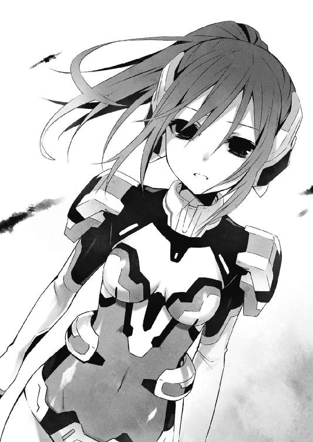
「違う......っ！」
「え？」
「それは──慣れているだなんて言わない。磨り減ってるだけだ。......心がッ！」
士道が言うと、真那が小さく眉を揺らした。
「何を......言っていやがるんですか、兄様」
「もう、止めてくれ、真那......おまえは俺の妹だっていうんだろ......？ なら......一つだけでいい。俺の頼みを聞いてくれ......っ」
士道は祈るようにのどを絞った。
それは妄想でもなんでもない。心は負荷をかけられると磨り減り──それがずっと続くと、ついにはもとに戻らないくらいに摩滅してしまうのだ。
──母に捨てられたときの士道が、そうなりかけていたように。
──敵意と殺意を向けられ続けた十香が、そうなりかけていたように。
「......無理ですよ、兄様」
しかし真那は、自嘲気味に言った。
「〈ナイトメア〉が生き返りやがる限り、そして人を殺し続けやがる限り、私はあの女の首を摘まねばならねーんです。でないと、あの女はもっともっと人を殺します。──私にしか、できねーんです」
「............ッ」
──違う。......方法は、それだけではない。
が、士道がそれを口に出すより早く、真那が顔の向きを右上の方に向けた。
「──ん、兄様。今日はここまでです」
「な......、まだ話は」
「増援が近づいています。兄様がここにいては面倒なことになりやがります」
真那が、半ば無理矢理士道を方向転換させ、背中を押してくる。
「っ、真那、おまえは──」
「聞き分けがねーですね」
真那が苦笑しながら指をピンと立てると、士道の身体がふわりと中に浮いた。
「な──これは......」
間違いない。これは、ＡＳＴが顕現装置で展開する随意領域だった。
真那はＣＲ－ユニットを着装していない状態で、この領域を展開したのである。
「また、会いましょう。今度は、もっと時間に余裕を持って」
「待──」
言葉の途中で士道の身体は路地の外にまで飛ばされ──優しく着地させられた。
「っ......」
ＡＳＴ隊員がいようと関係ない。士道はすぐ路地に引き返そうとした。
だが、不可能だった。路地の入り口には見えない壁が張られ、先に進めなくなっていたのだ。きっと、真那の仕業だろう。
「......っ──」
士道はその場に膝を突くと、血が出んばかりに地面に拳を叩きつけた。
「......あー」
士道を路地の外に移動させた真那は、くしゃくしゃと頭を掻きむしった。
いろいろと余計なことを話してしまった気がする。これでは折紙のことを言えない。
だが......なぜだろうか、士道には聞いて欲しかったのだ。
「こんなの、ただのルーチンワークでしかねーですのに」
路地の奥で無惨に横たわった〈ナイトメア〉──時崎狂三の遺体に視線を落とす。
と......どこから現れたのか、小さな仔猫が後ろ足を引きずりながら、狂三の亡骸に寄り添っていた。
不思議に思い、膝を折って頭を撫でてやる。仔猫は小さな声でにゃあ、と鳴いた。
「ほら、こんなところにいると血で汚れちまいやがりますよ」
言って、猫を抱き上げる。それから真那は再度、狂三の亡骸を見た。
「......なんで、か」
士道が言っていた言葉を口に出す。
そういえば、なんで──真那は狂三を殺し続けているのだっただろうか。
狂三は人を殺しまくる最悪の精霊で、真那には顕現装置を上手く扱える素質があった。だから真那は、その力をみんなの役に立てようと、した......はず......なの、だけれ、ど。
「......つっ」
不意に頭に走った痛みに顔をしかめる。記憶が曖昧で、よく思い出せなかった。
軽く頭を振って、頭痛を追い払うようにする。と──
「ん......？」
真那は、地面に不思議なものを見つけた。ちょうど士道が狂三に襲われていたあたりに、何やら小さな機械のようなものが落ちていたのである。
それをひょいと拾い上げ、矯めつ眇めつ眺めてみる。
「これは、インカム......ですかね？」
そう、それは耳に装着するタイプの小型通信機のようだった。
「なんでこんなものが......」
真那は首をひねると、何とはなしにそれを右耳に近づけてみた。すると、
『──士道！ 応答しなさい、士道！ 一旦〈フラクシナス〉で拾うわ！ 移動して！』
「............っ？」
どこかで聞いたような声が、真那の兄の名を呼んでいるのが、聞こえてきた。
◇
士道は、フラフラと公園のベンチまで歩くと、どすん、と力無く腰を落とした。
「............」
頭の中には、今さっき目の前で繰り広げられた光景がぐるぐると渦巻いていた。
狂三が、人を殺し、真那が、狂三を殺す光景。
頭の中ではわかっていたのだ。十香と折紙だって──極論すればそんな関係性だった。
十香にその気がなくて、
折紙に精霊を殺す力がなかっただけ。
この二ヶ月間で十香がこの世界に慣れ、士道も緊張感が抜けていたことは否めない。
ほんのわずかでもバランスが崩れていたなら、今のような光景をもっと早くに目にしていた可能性だってあるのに。
殺意を持った十香と、
精霊を殺すだけの力をもった折紙。
狂三と真那は──まさに、最悪の可能性を選んでしまった十香と折紙のようだった。
「なんなんだよ......そりゃあ......ッ」
全てに、納得がいかない。
なぜ、狂三はあんなにも簡単に人が殺せるのか。
なぜ、真那はあんなにも簡単に狂三が殺せるのか。
頭のどこかで甘えがあった。口先では危険と叫びながら、精霊はみんな十香や四糸乃のように本当はいい奴に違いないだなんて、都合のいい思考があった。結局ＡＳＴには精霊を殺せるはずなんてないという傲りがあった......！
と。
「シドー！」
そこに、聞き慣れた呼び声がかけられて、士道はハッと顔を上げた。
十香が、士道の方に駆けてきているのが見える。きっと士道が戻ってこないので捜しにきたのだろう。加え、その後ろには折紙の姿もあった。途中で遭遇してしまったらしい。
「シドー、どこへ行っていたのだ！」
「──一体、これはどういうこと」
士道の面前まで到達した十香と折紙が、不機嫌そうに言葉を投げてくる。
だが今の士道に、それに弁明をするだけの余裕はなかった。
「......ごめん」
短い謝罪の言葉だけをのどから絞り出し、再び黙り込む。
「......シドー？」
「どうしたの」
さすがに不審に思ったのか、十香と折紙が心配そうに顔を覗き込んできた。
「！ シドー、怪我をしているではないか！」
と、十香が士道の手を取ってくる。
あまりに衝撃的な出来事の連続で気づいていなかったが、確かに手の平に擦りむいたようなあとがあった。恐らく、足を取られて転んでしまったときの傷だろう。
だが、十香に手を触れられた瞬間、頭の中に狂三の血に濡れた貌が頭を過ぎり──
「ひ......ッ」
息を詰まらせるような音をのどから発して、十香の手を払いのけてしまった。
「え......あ、シドー......？」
十香が、呆然とした様子で自分の手と士道の手を交互に見てから、視線を送ってくる。
「す、すまん......痛かったか......？」
「......っ、悪......い」
士道は小さく頭を下げると、小刻みに震える自分の手を、もう片方の手で握りしめた。
十香は士道を心配してくれたというのに、それさえ拒絶してしまった自分が、泣きたくなるくらいに情けなくて。
「ごめん......本当に、ごめん」
「そ、そんなに気にすることでもあるまい。一体どうしたというのだ......？」
「............ごめん......ッ」
士道はそれだけ残して立ち上がると、その場から駆け出してしまった。
「し、シドー!?」
「どこへ──」
後方から十香と折紙の声が聞こえてくる。だが、士道は足を止められなかった。
二人は、追ってこない。
そして──どれくらい走っただろうか。
ひとけのない道に差し掛かったところで、士道は奇妙な浮遊感に包まれるのを感じた。
「......っ、これは──」
覚えがある。これは、〈フラクシナス〉の転送装置だ。
予想通り、一瞬のあと士道の視界は、人通りのない公園の一角から、〈フラクシナス〉の内部に変貌していた。
「──無事で何よりよ」
と、士道の背に、そんな声がかけられる。振り向くと、そこには深紅の軍服を肩がけにした琴里が、難しげな顔をしながら立っていた。
「......琴里」
「ようやく転送可能な位置に移動したわね。何度も呼びかけたのだけれど？」
言われて士道は右耳に手をやり、目を見開いた。
「......インカム、ねえや」
そう、そこには、任務中はいつも付けているインカムがなかったのである。どこかで落としてしまったらしい。......今の今まで気づいていなかった。
「落としたの？ いつ？」
「......悪い、よくわからん」
士道が答えると、琴里は小さくうなるようにのどを鳴らしてからあごに手を置いた。
「......考えられるとしたら、狂三に襲われたとき......？ じゃあさっきの声は──」
「どうかしたのか......？」
士道が訊ねると、琴里は小さく息を吐いて首を横に振った。
「何でもないわ。──それより、怪我の手当てをしましょ。ついてらっしゃい」
「......っ、ああ......でも、十香と折紙は──」
「十香は一人になったら〈フラクシナス〉で拾って、簡単に事情を説明しておくわ。鳶一折紙は──まあ、放っておいても大丈夫でしょう。明日学校でフォローしておいて」
「そ、か......」
士道は力なく答えると、琴里のあとをついていった。
「......なあ」
道中、士道は琴里の背に声をかけた。
「何よ」
「俺の──俺たちのしてることは、正しいんだよな......？」
琴里は通路に靴音を響かせるのを止めると、士道の方にキッと目を向けてきた。
「それって、どういう意味？」
「......俺は、精霊が......自分の意思とは関係なく空間震を起こしちまう存在が、理不尽に襲われるのが許せなくて、おまえたちに協力してるんだ」
「......ええ、そうね」
「でも......狂三は、人を──」
人を、殺していた。空間震ではなく、自分の手で。自分の意思で。
それが、どうしようもなく、悲しくて、恐ろしかった。
「何が言いたいのよ」
「俺には......無理だ......」
士道は──ついにその言葉を吐き出した。
「今まで上手くいってたのは、十香や四糸乃が偶然いい奴だったからなんだよ......。結局......俺には、何も──」
と、そこで士道は言葉を止めた。──正確には、止めさせられた。
琴里が士道の襟首を引っ張り、見事な平手打ちで士道の頬を叩いたからだ。
「え、あ......」
「......随分と根性がなくなったものね......ッ」
士道が呆然としていると、琴里が顔をしかめて言った。あるいはそれは、今にも泣き出してしまいそうな表情なのかもしれなかったが──今の士道には判別がつかなかった。
「俺には？ 無理だ......？ ふん、あの程度で泣き言言ってるんじゃあないわよ！ まだ昔の方が度胸があったんじゃあないの......ッ!?」
「何の、話──」
琴里が言っていることがよくわからず、頬を押さえながら訊き返す。
しかし琴里は答えず、士道の胸ぐらを掴むようにして続けてきた。
「あなたは......っ、もっと恐ろしい精霊にだって立ち向かってみせたじゃない！ 救ってみせたじゃない！ 無理だなんて軽々しく言わないで。あなたが諦めたら、狂三はもっとたくさんの人を殺すわ。真那は狂三と──自分の心を殺し続けるわ......！ あなたにしか──止められないのよ......ッ」
「......っ──」
言われて、士道はごくりと唾液を飲み込んだ。
琴里の言った『もっと恐ろしい精霊』というのが、十香を指しているのか四糸乃を指しているのかはわからなかったが──言葉の後半は、速やかに脳に染み渡っていった。
そう。殺しても死なない狂三が人を殺し、そのたびに真那が狂三を殺す。
真那は言った。それは、ずっと前から繰り返されていたことだと。
そしてそれはきっと......これからもずっと繰り返されるのだろう。──狂三に、精霊の力がある限り。
そして、その精霊の力を封じることができるのは、士道しかいないのだった。
「............」
士道は無言で、手を額に当てた。
もう絶対に、狂三に人を殺して欲しくない。
そして──真那に狂三を殺して欲しくない。
それは本当だった。士道の真意だった。そしてその意思を成すためにどうしなければいけないのか──これも、わかりきったことだった。
「......そうだな」
言って、ふらふらする足取りで先に進んでいく。
「あ、ちょっと......！」
すると琴里が慌てた様子であとを追ってきた。
「......狂三にこれ以上人を殺させないためには、力を封印しなきゃならないもんな。真那にこれ以上狂三を殺させないためには......俺がやるしかないもんな。わかったよ。......それで満足だろ？」
「............ええ」
なぜだろうか、琴里の声は少しだけ、不安そうだった。
◇
その日の夜。士道はリビングのソファで横になり、ぐるぐると思案を巡らせていた。
「............」
天井に設えられた白熱灯の輝きをぼんやりと眺めながら、細く、長く息を吐き出す。
きっと明日も、狂三は学校に登校してくるだろう。
そうしたならば、仕事の再開だ。
狂三の好感度を上げて、キスをして、力を封印する。
そうすれば、全てが解決する。
狂三が人を殺すことはなくなるし、そうなれば自然、真那が狂三を殺すこともなくなる。
士道に許された、唯一のパーフェクトでハッピーなエンディングへ至る方法は、それしかない。──の、だけれど。
「............」
重りを乗せられているかのように、全身が重い。士道は陰鬱な空気を肺から絞り出した。
と──そこで、廊下の向こうから、玄関が開く音が聞こえてくる。
「ん......？」
士道は重い身体をどうにか起こすと、リビングの入り口の方に目をやった。
インターホンを鳴らさずに入ってくるということは......普通に考えれば琴里だろう。だが琴里は今日、仕事のため艦に泊まると言っていた。となれば──誰だろうか。
士道がそんなことを考えていると、リビングの扉が開き、十香がおずおずと顔を出した。
「十香......？」
「......うむ。入っていいか？」
既に家に入ってきている時点で、訊ねるタイミングを間違えている気がしないでもなかったが──まあ細かいことは気にしないでおく。
「お、おう、もちろん」
十香は小さくうなずいてリビングに入ってくると、士道の方に走り寄ってきた。
「シドー。......身体に触っても大丈夫か？」
士道のすぐ近くまで来た十香が、わざわざそんなことを訊いてくる。もしかしたら、公園で手を振り払われたことを気にしているのかもしれない。
「あ......ああ、大丈夫だよ」
士道が答えると、十香はソファによじ登り、ソファと士道の間に入り込んだ。
「何してんだ......？」
「いいから、少し黙っていろ」
十香はそう言うと、士道の身体に手を回し、後方からぎうー、と抱きしめてきた。
「と、十香？ い、一体何を......」
背中に柔らかい感触を覚えて、士道は額に汗を浮かばせながら言った。
「......ん。寂しいときや、怖いときは、こうするのがいいとテレビで言っていた」
「......ちなみに、どんな番組で？」
「『おかあさまといっしょ』......だったかな」
比類無きまでに幼児番組だった。思わず苦笑が漏れる。
だけれど、その言は正しいようだった。確かに、少し、落ち着いた気がする。
そのまま、どれくらいそうしていただろうか。不意に、十香が唇を開いた。
「......令音にな、話を聞いた」
「話......って」
「狂三と、真那の話だ。シドーの様子がおかしい理由を訊いたら──話してくれた」
「......っ、そ、うか......」
士道はごくりと唾液を飲み下してからその言葉を吐いた。
令音はあまり十香に精霊やＡＳＴに関連する話を聞かせたがらなかったはずなのだが......きっと、教えなければ十香の精神状態が乱れると踏んだのだろう。
「シドー。私がこの家に厄介になっていたとき言ったことを覚えているか......？」
「え......？」
士道が訊き返すと、十香が続けてきた。
「私と同じような精霊が現れたら......きっと救ってやって欲しい」
「ああ──」
士道は小さくうなずいた。その言葉は、よく覚えている。
そう。士道は応と答えた。その気持ちに嘘はなかったし、その決意は今も変わらない。
「でも、狂三は」
「──変わらない。私と」
「え？」
十香が士道の背中に顔を押しつけてくる。
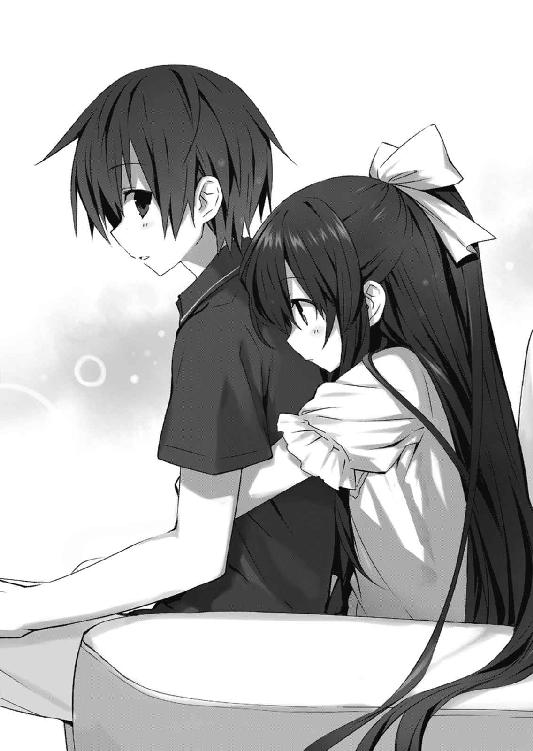
「......私には、シドーがいてくれた。シドーが、私を救ってくれた。──でも、狂三には、誰もいなかった。私よりもずっと長い間、誰からも手を差し伸べられずにいたのだ」
痛いくらいに、十香が腕に力を入れる。
「もしシドーがいなくて、私がふた月前のあの状態のまま、ずっとずっと殺意と敵意だけに晒され続けていたなら──私は、狂三のようになっていたかもしれない」
「そ、んなこと──」
言いかけて、士道は言葉を止めた。
今から二ヶ月前。士道が初めて会った十香は、今からは考えられないくらいに荒んでいた。終わりの見えない戦いに飽き、憔悴し、疲弊し、心が摩滅する寸前だった。
その絶望を、当人でない士道が軽々しく断じることは、許されない気がしたのである。
「本当に──もう救いようがないほど、狂三が悪い精霊だったなら、私がシドーを守る」
「え......？」
「だから......シドー。お願いだ。狂三のことを、もう一度だけ見てやってくれ。狂三に、もう、人を殺させないでくれ。これ以上、心を磨り減らさせないでくれ......」
「............っ」
言われて。士道は、ごくりと唾液を飲み込んだ。
──ああ、ようやく、理解した。
士道は、狂三が人を殺すのがたまらなく嫌だった。
真那が狂三を殺すのが絶対に許容できなかった。
その輪廻を終わらせるために、狂三を止めるのだと、そう決意していた。
だけれど、それには重要なピースが一つ欠けていたのだ。
「......ありがとう、十香」
「む......ぬ？ な、なぜだ？ 私は礼を言われるようなことは──」
「......いや、おまえのおかげだ」
そう。狂三にキスをして力を封印せねばならないのに、士道が考えていたのは狂三に殺される人や、真那のことばかりだったのだ。
あまりにもショッキングなシーンを目にしてしまったものだから、『狂三を救う』という当たり前のことが、頭から抜け落ちていた。
確かに狂三は何人もの人間を殺した精霊だ。それはどんな償いをしたとしても決して許されることではない。
でも。
十香の力を封印するとき。士道は、十香を救おうと心から思っていた。
理不尽に殺意を向けられる少女をどうにかして助けたいと願っていた。
四糸乃の力を封印するとき。士道は、四糸乃を救おうと心から思っていた。
敵意を向けられてなお相手のことを慮る少女が報われないのは嘘だと思った。
だから、士道は行動できた。
確かに士道は、人智を超えた回復能力と、精霊の力を封印する力を持っている。
だが、平均程度の体格と筋力と頭しか持たない男子高校生が、血反吐を吐きながら目的に手を伸ばすことができたのは、その一心があったからなのだ。
狂三を、救う。
殺しの連鎖と輪廻に囚われた少女を、救い出す。
そして──真那も。
士道の妹だというあの少女にも、もう狂三は殺させない。あれ以上、心を摩滅させたりはしない。
妄想でもいい。空想でもいい。
それができると信じなければ、士道が手を伸ばすことなど不可能だったのだ。
「──十香。もう、大丈夫だ」
「む......もう、寂しくないか？」
「ああ」
「もう、怖くないか？」
「......それは、ちょっとまあ、怖いけども」
士道は苦笑しながら頬をかいた。
「でも、大丈夫だ」
「ん......そうか」
十香はそう言うと、士道の身体に回していた手を緩めた。
士道はその場にすっくと立ち上がると、軽く伸びをした。同時に、くぅとお腹が鳴る。......そういえば、昼食を全部路地に吐き出してから、何も食べていなかった気がする。
「......何か、作るか。十香、食べていくだろ？」
「うむ！」
十香は、元気よく首肯した。
第五章 虚構の悪夢
「令音」
琴里は〈フラクシナス〉艦橋で、艦長席から比較的近い位置に座った令音の名を呼んだ。
だが、返事がない。不審に思って令音の手元を覗き込み──小首を傾げる。
令音の手元にあるディスプレイには、なぜか真那の顔が、画面いっぱいに拡大されていた。そしてそれを見つめながら、令音がいつになく難しげな顔をしていたのである。
「令音？ 真那がどうかしたの？」
「......！」
そこでようやく琴里の存在に気づいたのだろうか、令音が隈に彩られた目を向けてきた。
「......琴里か。──ん、少しね」
言って、慣れた手つきでコンソールを操作する。すると画面がズームアウトし、真那の顔が小さくなっていった。
「......それより、シンの様子はどうだい？」
「ええ──ちょっと不安だったんだけど、十香と話して吹っ切れたみたい」
「......そうか」
令音は小さくうなずいてから、ふっと顔を上げた。
「......ああ、そうだ。頼まれていた解析が済んだよ」
令音の言葉に、琴里はぴくりと眉を動かした。
先日入手した真那の毛髪と唾液を渡し、令音にＤＮＡ鑑定を依頼していたのである。
「で......どうだったの？」
「......ん、真那は、シンの実の妹とみて間違いない」
「──っ、そ、そう......」
琴里はこくんと唾液を飲み下し、胸の辺りに手をやった。
予想していなかったわけではないのだが......やはり、少し胸がざわつくのだった。
「本当の......妹、か。一体どうしてそんな娘がＡＳＴに......」
「......いや」
琴里の言葉を遮るように、令音が声を上げてくる。
「......少し調べてみたが、正確には違う」
「どういうこと？」
「......彼女はもともと自衛隊員ではなく、ＤＥＭインダストリーからの出向社員だ」
「──っ、ＤＥＭ社......？」
ＤＥＭインダストリー社。
英国に本部を置く世界屈指の大企業であり──〈ラタトスク〉の母体を除けば、この世で唯一顕現装置を製造することのできる会社である。自衛隊ＡＳＴ及び、世界中の軍や警察に秘密裏に配備されている顕現装置は、全てこのＤＥＭ社製と考えていい。
精霊を狩ることにも非常に積極的であるため、琴里たち〈ラタトスク〉の商売敵ということもできた。
無論、同社にはＣＲ－ユニットを扱う魔術師も在籍しているのだが──その練度は、各国の特殊部隊員を上回るとさえ言われている。
「ちょっと待ってよ。余計意味がわからなくなってきたわ。士道の妹が、なんでＤＥＭなんかで魔術師やってるわけ？」
「......それはまだわからない。だが......」
令音は言葉を切ると、ギリと奥歯を噛み、怒りに震えるように拳を握った。
琴里は訝しげに眉をひそめた。長い付き合いになるが──こんな令音は初めて見る。
「一体何があったの？」
「......これを見てくれ」
言って令音がコンソールを操作すると、画面に真那の写真と、細かな数値が表示された。
「っ......これは──」
「......ああ、全身に魔力処理が施されている。彼女の異常な強さはこれのためだ。......だが、代償も大きい。恐らく、あと一〇年ほどしか生きられないだろう」
「──っ、何よ、それ──」
琴里は忌々しげにうめいた。
そもそも、ＤＥＭ社製の顕現装置は完璧ではない。未だ演算核の処理性能が追いついていないため、人間の脳でそれを補わねばならないのだ。
ゆえに脳波を増幅するため、外科手術で頭に小さな部品を埋め込むことが必要とされている。折紙たちＡＳＴ隊員も、髪に隠れて角のような突起が頭から出ているはずだ。
だが──真那の身体はそんなレベルを遥かに超えていた。
それこそ......身体の数割が精霊になってしまっていると言ってもいいような状態だ。
「......彼女がどんな決意でこれを受け入れたのかはわからない。だが......まだシンには明かさない方が......いいだろう」
令音が重々しい口調で言う。琴里は、ごくりと唾液を飲み込み、唇を噛んだ。
◇
次の日の朝、士道が教室に入ると、既に狂三が席に着いているのが目に入った。
明らかな異常。一度体験していることとはいえ、やはり違和感があった。──死んだはずの少女が、何食わぬ顔をして登校してきている、なんてのは。
士道の姿を認めるなり穏やかな微笑を作り、狂三がぺこりと頭を下げてくる。
「あら、士道さん。ごきげんよう」
その姿は、昨日と何ら変わりなかった。
昨日この少女が路地裏で、両足を潰され腹を貫かれ、首を切断されただなんて訴えたなら、間違いなく士道の方が頭を心配されることになるだろう。
「......おう、おはよう」
だが、そこまでの驚きはない。予想していた事態だ。士道は静かに挨拶を返した。
「昨日は楽しかったですわね。また是非誘ってくださいまし」
「そう......か。楽しかった、か」
「ええ、とても」
狂三が、再びにこりと微笑む。それは士道とのデートのことを言っているのか、それとも路地裏でのことを言っているのか。士道には判別がつかなかった。
狂三はそんな士道の思案に気づいているのかいないのか、可愛らしい微笑を顔に貼り付けたまま言葉を続けてきた。
「でも、少し驚きましたわ」
「......？ 何にだ？」
士道が訊き返すと、狂三は微かに目を細めた。
「てっきり士道さんは、学校をお休みになると思っておりましたので」
一瞬、言葉を途切れさせてしまう。だがすぐに思い直し、唇を動かした。
「そいつは......悪かったな。来ない方がよかったか？」
「いえ、士道さんがちゃんと登校してきてくれて、とても嬉しいですわ」
屈託のない笑顔でそう言う。
士道は動悸を抑えるように胸元を軽く叩いてから、狂三の真ん前に足を進めた。
「──狂三」
「？ なんですの？」
「俺は──おまえを、救うことに決めた」
「......？ 救う？」
士道が言った瞬間。狂三の表情から温度が失われるのがわかった。
「......おかしなことを仰いますのね、士道さん」
「もういいだろう、そういうのは。──もうおまえに、人を殺させない。もう真那に、おまえを殺させない。それが、俺が昨日出した結論だ」
「価値観を押しつけないでいただけます？ わたくし、甘っちょろい理想論は嫌いですの」
「そうかい。それは残念だ。──でも悪いが、もう決めた。おまえは、俺が救う。何をしようと、絶対に」
士道が言うと、狂三は眉をひそめた。
だが数瞬の間何か考え込むような仕草をしたあと、唇を開いてくる。
「──なら、あなたが言っていることが本当かどうか、確かめて差し上げますわ」
「あ......？」
「今日の放課後、屋上に来てくださいまし」
狂三はそうとだけ言うと、士道から視線を外した。
◇
来禅高校の屋上に立った狂三は、妖しく笑ってトン、トン、と軽快な足音を響かせた。
空は雲ひとつない快晴。真夏さながらの強烈な日差しが狂三に注ぎ、いつもよりその影を黒々と地面に映し出している。
時刻は九時一〇分というところだろう。もう一限目の授業が始まっているためか、校舎から響いてくる喧噪は幾分か収まっていた。その代わり、音楽室からまばらな楽器の音が、体育館からボールの弾む音が聞こえてくる。
狂三は、踊るようにステップを踏んでいた。地面に円を描くように、くるくると。
「もう少し、士道さんとの学校生活を楽しんでもよかったのですけれど──」
もし上空からその光景を見た者がいたなら、その異常に気がついたかもしれない。
狂三が通った場所が、薄暗くなっているのである。
そう──まるで、狂三の軌跡から、影が消えないように。
「そろそろ、潮時ですわね」
そして、カッ、と踵を地面に突き立てる。
すると屋上の中央に薄暗い線で描かれた円が、じわじわとその面積を広げていった。
屋上の全域を覆い尽くし、校舎の外壁を伝い、校庭を侵食し、やがて学校を中心とした街の一区画を覆わんばかりに。
「──きひひ、ひひひひひひひひひ」
唇を歪んだ三日月の形にし、笑みを漏らす。
「ああ、ああ、士道さん、士道さん。愛しい愛しい士道さん。あなたはこれでも私を救うだなんて仰いまして？ 私を助けると仰いまして？」
「ん......？」
一限目・世界史の授業中、士道はふっと窓の外に目をやった。
なんとなく、辺りが暗くなった気がしたため、空に雲がかかったのかと思ったのだ。
だが、窓から見える空は未だ快晴。雲なんて影も形も見えなかった。
「......まさか」
ふと、狂三の方を見やる。つい一〇分ほど前に不穏なことを言っていたので、もしやと思ったのだ。
だが、狂三におかしな動きは見られなかった。真面目に授業を受けている。
「気にしすぎか......」
小さく息を吐き、姿勢を直す。
何にせよ、正念場は放課後である。士道は気合いを入れるように大きく深呼吸をした。
◇
錆び付いたノブを回し、ドアを押し開ける。老朽化したドアはパラパラと剥がれた塗装の砕片をその場に落としながら、耳障りな悲鳴を上げた。
「......ち」
琴里は眉をひそめながら小さく舌打ちをし、その建物の屋上に出た。
今琴里が訪れていたのは、天宮市の南端に位置する廃ビルの一つだった。
別に廃墟探索の趣味があるわけではない。こんな辺鄙な場所に来たのには理由があった。
と、
「──お待ちしていました、琴里さん」
先に屋上で待ち構えていた少女──真那が、琴里に声をかけてきた。
そう。今日の朝琴里が家に戻ってみると、琴里の部屋の窓に、時刻と場所、そして真那の名前が書かれた紙が貼ってあったのである。
琴里は不機嫌そうな心地を隠すでもなく、フンと鼻を鳴らした。
「......まったく、何なのよここは。私を呼び出そうっていうんなら、美味しいお茶とケーキくらい用意してからになさい」
「これは失敬。──ですが、お互いに人の目と耳はねー方がいいと思いやがりまして」
「......ふん。それで、一体何の用だっていうの？」
「少し、お話がしたいと思いまして」
と、真那がポケットから何かを取り出し、琴里に向かって放り投げてきた。
緩やかな放物線を描いて迫ってきたそれを、両手でキャッチする。
「これは......」
琴里は眉をひそめた。真那が放ってきたそれは、〈ラタトスク〉が使用している超高感度の小型インカムだったのである。──そう。昨日、士道がなくしたものだ。
「──〈ラタトスク機関〉」
「......っ」
琴里は、真那の口から出た言葉にぴくりと片眉を動かした。
「噂には聞いていました。精霊を武力で殲滅するのではなく、対話によって懐柔することを目的とした組織。──初めて聞いたときは都市伝説かと思っていやがったのですが......」
真那が、キッと琴里を睨み付けてくる。
「──まさか、あなたと兄様が」
琴里はインカムをポケットにしまい込むと、チュッパチャプスの棒をぴこぴこ動かした。
「......なるほど、昨日のあの通信はあなたの仕業だったわけね」
そう、士道がインカムを紛失したと判明する前に一度、〈フラクシナス〉は妙な通信を受け取っていたのである。確かに士道の声ではあったものの、琴里の名前や現在の状況などを幾つか確認すると、急に回線が閉じ、それきり何も聞こえなくなったのだ。
琴里は真那に聞こえないくらいの大きさで舌打ちをした。油断。たぶんそのときの返答で、真那は〈ラタトスク〉という組織の実在を確信したのだ。
真那が、小さく肩をすくめる。
「随意領域の中でなら声を変えるくらい造作もねーですから」
「......そ」
琴里は髪をかき上げると、不敵に目を細めた。
「何が目的？ わざわざ私を呼び出したってことは、何か狙いがあるんでしょう？」
真那は視線を動かさないまま、唇を開いてきた。
「──私は、この件を上に報告するつもりはねーです」
「......ふうん？」
「そのかわり。兄様を今すぐに、〈ラタトスク〉から解放しやがってください」
真那の言葉に、琴里は眉をひそめた。
「どういうこと？」
「どういうことも何もねーです。──琴里さん、なぜあなたは、兄様にあんな危険な真似をさせていやがるのですか。顕現装置はおろか、通常の武器一つ持たせずに精霊と相対させやがるだなんて、とても正気の沙汰とは思えねーです」
「これから口説き落とそうって相手に、銃を突きつけながら喋れっていうの？ それじゃあ強姦魔と何も変わらないじゃない。もしかしてあなた被虐快楽者？」
琴里が言うと、真那はさらに目つきを鋭くし、語気を強めた。
「ふざけねーでください。あなたは兄様を何だと思っていやがるのですか。あのとき私がいなかったら、今頃兄様は〈ナイトメア〉に殺されていやがりましたよ」
「............」
さすがに、これ以上情報を提供してやる義理はない。琴里は口をつぐんだ。
だが真那は琴里の態度をどう受け取ったのか、奥歯を噛み締め、あとを続けてきた。
「琴里さん。──いえ、五河琴里。とても残念です。あなたは兄様の妹失格です。あなたのような人に、兄様は任せられねーです」
「......っ」
琴里は頬をぴくりと動かすと、チュッパチャプスの棒をピンと立てた。
「へえ、それで、私が妹失格だったらどうするっていうの？」
「私が兄様の身柄を引き受けることも考えなければなりません」
真那の言葉に、琴里は顔を歪めた。
「冗談じゃないわ。ＤＥＭみたいな悪徳企業に士道を預けろっていうの？」
言いながら琴里が肩をすくめると、真那が驚愕したように腕を解き、肩を揺らした。
「......っ、なぜそれを」
「優秀な友人がいてね。情報を握っているのはお互い様ってこと」
琴里が不敵に言うと、真那はふうと息を吐いた。
「──まあ、割れているのなら隠す必要もねーですね。そう、私はもともと自衛官だったわけではねーです。ＤＥＭインダストリー社から出向してくるに当たって、必要だったから適当な階級を得たに過ぎねーです」
しかしそう言うと、またすぐに視線を研ぎ澄ます。
「しかし、ＤＥＭが悪徳企業というのは聞き捨てならねーですね。あそこは記憶喪失の私を受け入れてくれて、存在理由を与えてくれやがりました。感謝してもしきれねーです」
「......本気？ 狂ってるとしか言いようがないわ」
「失礼な。何を言っていやがるのですか」
琴里は真那の口ぶりに、違和感を覚えた。もしかして彼女は──
「あなた、もしかして、知らないの......？ 自分の身体のことを」
「身体......？ 何の話ですか」
キョトンとした様子で、真那が首を傾げてくる。琴里は戦慄に唾液を飲み込んだ。
「......っ、なんてこと」
まったく予想していなかったわけではないが......まさか令音の懸念通りになるとは。琴里は渋面を作り、真那の方にツカツカと歩いていくと、その肩を掴んだ。
「な、何をしやがるのですか」
「......悪いことは言わないわ。あなたこそＤＥＭを抜けなさい。〈ラタトスク〉が面倒を見たっていいわ。だから──」
「はぁ......？ いきなり何を......」
と、真那が眉をひそめて言いかけた瞬間、琴里と真那の携帯電話がほとんど同時に着信音を鳴らし始めた。
苛立たしげに顔をしかめてから、通話ボタンを押す。
「──私よ。何？」
『し、司令！ 来禅高校に凄まじい霊波反応が！』
「なんですって......？」
琴里はちらと真那の方を見やった。どうやら──表情からして、彼女もまた、琴里と似たような報告を受けているようだった。
◇
士道はすぅ、と深く息を吸い、ゆっくりと吐き出した。
肺の中の空気を全て入れ替え、身体を一度リセットするかのような感覚。
「......よし」
時刻は一六時三〇分。辺りからは、部活に向かう生徒たちの声が響いていた。
結局今日はあれきり、狂三と会話を交わしていない。帰りのホームルームが終わったあとも、狂三は士道の方に視線を送ることすらなく、すっと教室から出て行ったのだった。
『......大丈夫かね、シン』
と、右耳に装着したインカムから、やたら眠たげな声が聞こえてくる。令音だ。
「はい、意外と......落ち着いています」
『......それは何よりだ。しかし、十分気をつけたまえ』
「──はい」
ごくりと唾液を飲み込む。と、そこで士道はふと疑問を覚えた。
「令音さん？ そういえば琴里の声がしませんけど......」
『......ああ、琴里は今少し席を外している』
「いや、席を外してるって、こんな大事なときに......」
『......それは琴里も重々承知している。だがそれを考慮した上で、こちらの方が作戦の成功率が上がると判断したのさ。......今は邪魔者の横槍が一番厄介だからね』
「は......？ ど、どういうことですか？」
『......今は狂三に集中したまえ。気を散らしながら籠絡できるほど甘い相手ではないよ』
「......っ、そ、そうですね」
令音の言っていることは気にかかったが、確かに今は狂三以外のことを考えている余裕などないはずだった。もう狂三は屋上で待っているだろう。士道は階段に足を向け──
「......なッ!?」
その瞬間辺りを襲った異変に、眉をひそめた。
具体的に何が起こったのかはわからない。だが周囲がふっと暗くなったかと思った刹那、全身を途方もない倦怠感と虚脱感が襲ったのである。
まるで空気が粘性を持ったかのように、重くドロッと手足に絡みつく。
「こ、れ、は......」
士道はその場に膝を突きそうになるのをなんとか堪え、姿勢を保った。
周囲に残っていた生徒たちが、次々と苦しげなうめき声を発し、その場にくずおれていく。有り体に言って、異様な光景だった。
「お......っ、おい、大丈夫か......!?」
慌てて、すぐ近くに倒れ込んだ女子生徒の肩を揺する。しかし気を失ってしまっているのか、反応はなかった。
「令音──さん、これは......!?」
『......高校を中心とした一帯に、強力な霊波反応が確認された。この反応は──間違いない、狂三の仕業だ。広域結界......範囲内にいる人間を衰弱させる類のもののようだ』
「な、なんでそんなことを......」
『......それは、本人に訊いた方が早いだろう』
令音が言ってくる。確かにその通りだった。士道は唾液をごくんと飲み下すと、その場から立ち上がった。少し動きづらい気はするが、倒れてしまうほどではない。
「あれ......そういえば、俺はなんで......」
『......忘れたのかね、シン。君は十香や四糸乃の霊力をその身に封印している。自覚症状はないかもしれないが、君の身体は精霊の加護を受けているに等しい状態なんだ』
「霊力......」
呟くように言ってから、士道はハッと目を見開いた。
先ほど出てきたばかりの教室の扉を開き、叫ぶように声を上げる。
「十香ッ！」
そう、教室にはまだ十香が残っているはずだった。用があるから先に帰っていてくれと言ったのだが、士道が戻ってくるまで待つと聞かなかったのだ。
教室には一〇名ほどの生徒が残っていたが、それら全てが床に、もしくは机にもたれかかるようにして気を失ってしまっていた。──だが、そんな中、
「おお、シドー......」
十香は軽く頭を押さえながらも、士道に声を返してきた。力の大部分を封印されているとはいえ、やはり精霊。人間よりも霊力に耐性はあるようである。
「大丈夫か、十香！」
「うむ......。だが、どうも身体が重い......どうしたのだ、これは......」
まるで高熱にうなされるかのような調子でうめき、気怠そうに頭を揺らす。
『......シン』
インカムから、令音の呼び声が響く。詳細は聞かずとも察することができた。
「っ、十香、ここで休んでろ。すぐに何とかしてやるからな......！」
「シ、ドー......？」
「大丈夫だ。俺が──助ける」
士道は十香の頭を優しく撫でるようにしてから、意を決して廊下に出て行った。
狂三がいるのは──屋上。
重くまとわりつく空気を裂きながら階段を上り、士道はやたら疲労する手足を叱咤しながら、どうにか屋上へと続く扉の前までたどり着いた。
扉に、鍵はかかっていない。
否──正確にはドアノブの下辺りが、銃で撃ったかのようにボロボロになっていて、鍵としての役割を成していなかった。
よく考えずとも狂三の仕業だろう。士道は深呼吸をしてからノブを握り、扉を開けた。
「く......」
顔をしかめる。屋上に出ても、ドロリとした空気は少しも晴れなかった。否、それどころか身体を襲う虚脱感が強くなった気さえする。
左右に目をやる。背の高いフェンスに囲まれた、殺風景な空間。
その、中心で。
「──ようこそ。お待ちしておりましたわ、士道さん」
狂三がフリルに飾られた霊装の裾をくっと摘み上げ、微かに足を縮めて見せた。
◇
「......っ」
折紙がその異常を感じたのは、東校舎一階の廊下を歩いているときだった。
瞬きをする前とあとで、世界が一変してしまったかのような感覚。体表から空気に精気が吸い取られていくかのような、途方もない脱力感が全身を襲った。実際、周囲にいた生徒たちが、次々にバタバタと倒れ伏していく。
「く──」
このままでは意識を失ってしまいかねない。折紙は咄嗟の判断で、ポケットから手の平に収まるくらいのデバイスを取り出すと、表面のセンサーに指を当てながら唇を動かした。
「識別・ＡＳＴ・鳶一折紙」
一瞬で指紋、声紋照合を完了。ピピッ、という電子音がして、デバイスが展開される。
「基礎顕現装置──起動承認」
折紙はそう言うと、デバイスを頭部からわずかに顔を出した送信角に触れさせた。
瞬間、折紙の周囲に、身体を辛うじて覆う程度の随意領域が形成され、全身を苛む虚脱感が緩和された。
だがそれと同時に、脳の中心で炸薬を爆発させたかのような凄まじい頭痛が折紙を襲う。
奥歯を噛んでそれに耐え、折紙は唇を動かした。
「ワイヤリングスーツ──展開」
すると随意領域の中が淡く輝き──次の瞬間には、折紙の纏った来禅高校の制服は、ＡＳＴの標準装備であるワイヤリングスーツに変貌していた。
「......っ、......っ」
ようやく頭痛も消え去ったものの──一瞬、その場に膝を突いてしまう。
通常、基地で着装を行うスーツを、一瞬で展開する緊急用デバイス。もしものときに備えて携行許可を取っていたのはいいが、やはりこの感覚は慣れそうになかった。
この小型デバイスには基礎顕現装置が搭載されている。つまり理論上は、随意領域を展開することができるのだ。そして随意領域の中であれば、衣服を一瞬で展開、変更することなど造作もないことだった。
しかしそのためには、一瞬とはいえワイヤリングスーツなしで随意領域を展開する必要がある。その際脳にかかる負担は、筆舌に尽くし難いものがあった。......まあ、真那などはこの作業を事も無げにやってのけてしまうのだったが。
「............」
折紙は呼吸を整えると、随意領域を通常の半径三メートルクラスにまで広げた。
精霊やＡＳＴのことは、基本的に秘匿事項であるが、今は非常時である。それに、皆が気絶しているのならば目撃される心配もないだろう。
学校に何が起きているのかはわからない。だが──それに時崎狂三が関わっているであろうことは容易に想像がついた。
「......っ」
脳に指令を発し、重力中和。折紙は床を蹴ると、凄まじい勢いで廊下を駆けた。
と、それと同時、ヘッドセットに搭載されている通信機から、燎子の声が聞こえてくる。
『──折紙!? こっちの回線が開いてるってことは、緊急着装を使ったのね？ 今あんたの学校の周囲に、強力な霊波反応が観測されてるわ！ 状況は!?』
「広域結界が張られている。このままでは非常に危険。応援を──」
と、折紙はそこで言葉を止めた。
「......っ」
理由は単純。折紙の進行方向上に、影を凝縮したような少女が立っていたのである。
装いは高校の制服ではない。赤と黒で構成されたゴシック調のドレスだった。
「うふふ、折紙さん。そんなに急いでどちらへ行かれますの？」
口元に手を当てながら、くすくすと笑う。
「時崎──狂三......」
折紙は視線を鋭くすると、腰に手を回し、レイザーブレイドの柄を握った。
『何、一体どうしたのよ、折紙っ!?』
「──精霊と接触した。交戦する」
『......っ、なんですって!? 危険よ、離脱し──』
気が散る。折紙は脳内に指令を発し、通信を遮断した。
狂三がくすくすと微笑みながら、言葉を発してくる。
「ふふ、今は邪魔をして欲しくありませんの。ここから先へは行かせませんわ」
「......？」
狂三の言っている意味がわからず、小さく眉をひそめる。
だが、それも一瞬のこと。戦場で精霊の妄言に耳を貸す必要などはない。
折紙はレイザーブレイド〈ノーペイン〉の柄を、強く握り直した。
◇
「シ、ドー......シドー!!」
十香は、今し方教室から出て行ってしまった士道の名を呼んだ。
だが──士道が戻ってくる様子はない。十香は重い足を引きずり、歩き始めた。
「シドー......っ」
頭の中には、士道が残していった言葉が渦巻いている。
──大丈夫だ。──俺が、助ける。
なんとも頼もしくて、心強い言葉だった。士道がそう言ってくれるだけで、十香の心に蟠っていた寂しさや不安は吹き飛んでしまった。
でも、それと同時に、別の不安が顔を出してきたのである。
だってその言葉を発したときの士道は、ふた月前、十香に手を差し伸べてくれたときや、先月、四糸乃の結界に向かっているときと、同じ感じがしたのだ。
きっと士道は、みんなを助けてくれる。でも、そのために身を投げ出すようなことが必要なら、士道は躊躇わずそうしてしまうだろう。
十香を救ってくれたのは──そういう男なのだ。
「うぁ......っ」
と、十香はバランスを崩し、机と椅子を巻き込んでその場に倒れてしまった。
「ぐ──ぬ......っ」
再び立ち上がろうとするが、足に力が入らない。
──駄目だ、駄目だ。こんなところで這い蹲っている暇はないのに。
一刻も早く、士道のもとに行かねばならないのに。
「シドー......シドー......シドー......っ!!」
と──叫んだ瞬間、十香は頭の中がシェイクされるかのような感覚を覚えた。
「っ、な、なんだ......？」
言いながらも──十香はこの感覚に覚えがあった。
先月。四糸乃が天使を顕現させ、士道に光線を吐こうとしていたときのことだ。
このままでは、士道が死んでしまう。そう思った瞬間、頭がぐらぐらと揺れ──霊装と天使が顕現したのである。
「......これは......っ！」
十香は自分の装いを見下ろし、声を上げた。──そう、完全ではないものの、十香の身体にはあのときと同じく、光の膜で構築された霊装が顕現していたのである。
身体も、一瞬前からは考えられないくらいに軽くなっている。これならば──
十香は勢いよく跳び上がると、二本足でバッとその場に直立した。
「よし......いけるぞ！」
ぐっと拳を握り、教室を出る。
「シドー！ どこへ行ったのだ、シドー！」
叫ぶも──返事は聞こえてこなかった。
こうなったら、手当たり次第に捜すほかない。十香は廊下を駆け出した。
だが、その瞬間。
「──っ!?」
十香は息を詰まらせ、その場から飛び退いた。
理由は単純。廊下の先から十香目がけて、銃弾のようなものが、黒い軌跡を描きながら迫ってきたのである。
「な......っ、誰だ！」
十香が叫ぶと、影になっていた廊下の先から、ゆっくりとした足音が響いてきた。
やがて、その音の主の姿が見取れるようになる。
「......っ、おまえは──」
「うふふ。ごきげんよう、十香さん。少しわたくしとお付き合いいただけませんこと？」
ドレスを纏い銃を握った少女──時崎狂三が、にぃ、と唇の端を上げながらそう言った。
◇
「狂三......おまえ、一体何をしたんだ!? 何なんだ、この結界は......！」
来禅高校の屋上で、士道はバッと両手を開き、狂三に問いかけた。
狂三は、士道の反応が楽しくて仕方ないといった様子で、さらに笑みを濃くする。
「うふふ、素敵でしょう？ これは〈時喰みの城〉。わたくしの影を踏んでいる方の『時間』を吸い上げる結界ですわ」
「時間を......吸い上げる......？」
士道が怪訝そうに言うと、狂三はくすくす笑いながらゆっくりと歩み寄ってきた。
そして、優雅な仕草で髪をかき上げる。常に前髪に隠されていた左目が露わになった。
「な......」
それを見て、眉をひそめる。
明らかに、異様だった。無機的な金色に、数字と針。
そう──狂三の左目は、時計そのものだったのだ。
しかもおかしなことに、その時計の針が、くるくると逆方向に回転しているのである。
「それは──」
「ふふ、これはわたくしの『時間』ですの。命──寿命と言い換えても構いませんわ」
言いながら、狂三がその場でくるりとターンする。
「わたくしの天使は、それはそれは素晴らしい力を持っているのですけれど......その代わりに、ひどく代償が大きいのですわ。一度力を使うたびに、膨大な私の『時間』を喰らっていきますの。だから──時折こうして、外から補充することにしておりますのよ」
「な......っ」
狂三の言葉に、士道は戦慄した。
だってそれが本当だとするのなら、結界の中で倒れている人たちは今、狂三に残りの命を吸い上げられているということになる。
狂三はそんな士道の表情を見ると、なぜだろうか、少し寂しそうな顔をした。
だがすぐにその顔に凄絶な笑みを貼り付けると、指先で士道のあごを持ち上げてくる。
「精霊と人間の関係性なんて、そんなものですのよ。皆さん、哀れで可愛い私の餌。それ以上でもそれ以下でもありませんわ」
士道を挑発するように眉を歪め、続ける。
「ああ──でも、でも、士道さん。あなただけは別ですわ。あなただけは特別ですわ」
「......俺、が？」
「ええ、ええ。あなたは最高ですわ。あなたと一つになるために、わたくしはこんなところまで来たのですもの」
「何だって......？」
士道は眉をひそめた。
「一つになるって......どういうことだよ」
「そのままの意味ですわ。あなたは殺したりなんてしませんわ。それでは意味がありませんもの。──わたくしが、直接あなたを食べて差し上げるのですわ」
その『食べる』という表現が文字通りの意味なのか比喩的なものなのか──それに判別はつかなかったが、士道の胃に冷たいものを広げるのには十分だった。
だが、そんなことで怯んではいられない。拳をぐっと握り、のどを震わせる。
「俺が、目的だっていうなら、俺だけを狙えばいいじゃねえか！ なんでこんな──！」
士道が叫ぶと、狂三が愉快そうに言葉を続けてくる。
「うふふ、そろそろ『時間』を補充しておかねばなりませんでしたし──それに」
狂三はふっと、鋭い視線で士道を射貫いてきた。
「──あなたを食べる前に、今朝方の発言を取り消していただかないとなりませんもの」
「今朝の......？」
「ええ。──わたくしを、救うだなんて世迷い言を」
「......っ」
狂三の、あまりの視線の冷たさに、思わず唾液を飲み込んでしまう。
「──ねえ、士道さん。そんな理由で、こんなことをするわたくしは恐ろしいでしょう？ 関係のない方々を巻き込むわたくしが憎いでしょう？ 救う、だなんて言葉をかける相手でないことは明白でしょう？」
狂三が、役者のように大仰に手振りをしながら続ける。
「だから、あの言葉を撤回してくださいまし。もう口にしないと約束してくださいまし。そうしたなら、この結界を解いて差し上げても構いませんわよ？ もともとわたくしの目的は、士道さん一人なのですもの」
「な......」
目を見開く。その条件は、あまりに簡単だった。狂三が士道をたばかっているのではないかと疑ってしまうほどに。
『......狂三は本気だ』
士道の懸念を察したのか、インカムから令音が言ってくる。
『......彼女の精神状態に、嘘を吐いている形跡は見受けられない。シン、君が条件を呑んだなら、狂三は本当にこの結界を解くだろう』
令音が言うと同時に、狂三は薄気味悪い笑みを浮かべて身をくねらせた。
「きひひ、ひひ。さあ、早く止めなければなりませんわねぇ。急がないと手遅れになってしまう方もいらっしゃるかもしれませんわよォ？」
「......っ」
士道は、狂三と目を合わせた。
士道が、言葉を撤回する。たったそれだけ。何も難しいことはない。
逆に、そうしなければ、結界の中にいる幾人もの人の命が危険に晒されることになる。
選択の余地は無かった。意を決して、唇を開く。
「......結界を、解いてくれ」
狂三が、ふうと息を吐く。まるで、安堵したかのように。
「なら、言ってくださいまし。もうわたくしを救うだなんて言わないと」
士道はごくりと唾液を飲み下してから、言葉を続けた。
「それは......できない」
「は────？」
士道がそう言った瞬間、狂三はポカンと瞼と口を開いた。何とも間の抜けた有り様である。少なくとも、今まで士道は、狂三のそんな顔を見たことがなかった。
「......あら、あら、あら？」
だが、すぐに狂三の顔が、不機嫌そうに曇っていく。
「聞こえませんでしたの？ それを撤回しない限り、私は結界を解きませんわよ」
「......っ、それは、解いてくれ。今すぐ！」
「なら」
「でも、駄目だ！ 俺はその言葉を撤回できない！」
士道は叫び、首を振った。
だって、それを撤回してしまったら、何も変わらない。
きっと士道はもう二度と、狂三に手を伸ばすことができなくなる。
「──聞き分けがない方は嫌いですわ......ッ！」
狂三はそう叫ぶと、トン、トン、と軽やかにバックステップし、士道と距離を取った。そして、右手をバッと頭上に掲げる。
するとその手を中心として、ビリビリと空気が震えだした。
──瞬間。
ウウウウウゥゥゥゥゥゥゥゥゥゥゥゥゥゥゥゥゥゥゥゥゥゥゥゥゥ────
そんなけたたましい音が、街全域に鳴り響いた。
「──っ、空間震警報......ッ!?」
顔を戦慄に染め、うめく。嫌というほどに聞き慣れたそれは、この世界を蝕む突発性災害──空間震の発生を知らせるものだった。
一瞬、士道は街のどこかに、狂三とは別の精霊が現界しようとしているのかと思った。空間震は精霊がこちらの世界に現れる際の空間の歪みが原因で引き起こされるからだ。
だが──狂三の狂気に満ちた笑みが、それを暗に否定していた。
そう、この空間震は、狂三が意図的に起こそうとしているものなのだ。
そんなことができるだなんて、聞いたことがない。
だが──今のこの状況が全てを証明していた。
「きひ、きひひ、きひひひひひひひひひひひひッ、さぁさ、どォうしますの？ 今の状態で空間震が起こったなら、結界内にいる方々は一体どうなりますでしょうねぇ」
「......！」
言われて、士道は言葉を失った。
通常、空間震の前震が観測され、警報が発されると、近隣の住民は皆地下のシェルターに避難する。だが──今、高校を中心とした狂三の結界範囲内にいる人々は皆、気を失っているのである。避難などできるはずがない。
──の、だけれど。
ふと......士道の頭に一つの疑問が浮かんだ。
そんな士道の様子に気付いたふうもなく、狂三が、勝ち誇ったように唇を舐める。
「──さあさ、士道さん？ いかがですの？ わたくしが恐ろしいでしょう？ わたくしが憎いでしょう？ これでも同じことが言えまして？ 弱き肉が！ 強き捕食者に！」
「............」
なぜだろうか。心臓はバクバク鳴って、呼吸は荒くなっているのに、士道の頭の中は信じられないくらいに冷静になっていた。
一つの疑問。
──なぜ、狂三はそんなにも、士道に言葉を撤回させようとするのだろう。
だって、それはそうだ。士道が何を言おうが、言葉は言葉。狂三の目的が士道を『食べる』ことだというのなら、そんな言葉に構わず、そうすればいいだけの話なのだ。
それなのに、なぜ、そこまで気にするのだろうか。
──彼女曰く強き捕食者であるはずの狂三が。弱き肉であるはずの士道の言葉を。
『......シン』
と、そこで、右耳の鼓膜を令音の声音が震わせた。
『......狂三の精神状態が変化している。まるで君を......恐れているかのような数値だ』
「ぇ......？」
士道は、狂三に聞こえないくらいの声を発し、微かに眉をひそめた。
──狂三が、士道を恐れている？
そのあまりに現実味のない言葉に士道は一瞬混乱し──すぐに、納得した。
「ああ──そう、か」
士道は細く息を吐き、狂三を見直した。
怖くて恐ろしくて仕方のない、精霊。
だけれど──
「さあ！ 士道さん、どうしますの？ あなたが言葉を撤回しなければ、何人もの人が死ぬことになりますわよ!?」
狂三が士道から視線を逸らさないまま、高く掲げた右手をくっと握ってみせる。
瞬間、きぃぃぃぃぃ──ん......という耳鳴りのような音が、辺りに鳴り響いた。
まるで、空間が悲鳴を上げているかのように。
「く......」
狂三にかけなければならない言葉がある。狂三と話さねばならないことがある。だが今はそれより先に、この空間震をなんとかせねばならなかった。
無論──言葉を撤回することなく。
士道は必死に思考を巡らせ、ふと先ほどの狂三の言葉を思い出した。
「......狂三」
「何ですの？ ふふ、ようやく取り消す気になりまして？」
狂三が、不敵に笑いながら言ってくる。士道は構わずあとを続けた。
「おまえは、俺を食べるのが目的って......言ってたな」
「ええ。そうですわ。殺したりしたら意味がありませんもの。あなたはわたくしの中で、ずっと生き続けますのよ。うふふ、素敵でしょう？」
「............」
その一言で、確信を持った。小声で令音に話しかける。
「......令音さん。俺、──────ても、助かりますかね」
『......？ ああ、君の回復能力があれば、よほど運が悪くない限りは大丈夫だと思うが......一体何をするつもりだい』
「そうですか」
士道はその場から駆け出し、屋上の端まで辿り着くと、背の高いフェンスをガシャガシャと登っていった。
そしてその頂上に足をかけ、狂三の方に顔を向ける。
狂三は、士道のとった行動がよくわからないといった表情をしていた。
「......っ、何のつもりですの？」
「空間震を止めろ。さもないと──」
ビッ、と校庭側を指さす。
「俺は、ここから落ちて死んでやるぞ......！」
「は......はぁ......っ!?」
さすがにこれは予想外だったのだろう、狂三が素っ頓狂な声を上げる。
「な、何を仰ってますの......？ 気でも触れまして？」
「悪いが正気だ。やっぱり俺は、朝の言葉を引っ込められない。──それじゃあ、おまえを助けられなくなっちまう」
狂三が、不快そうに顔を歪める。士道は構わず口を開いた。
「でも、おまえに空間震を起こさせるわけにはいかない。だから──」
「それで自分を人質に？ 短絡的にも程がありますわ。追いつめられた逃亡犯ですの!?」
言われて、士道は小さく笑ってしまった。映画や海外のニュース映像なんかで、犯人が自分のこめかみに銃を突き付けているシーンが思い起こされたのだ。最後の最後、他に手段がなくなった人間の、クレイジーな行為だ。
だが、狂三の目的が士道であるという以上、決して無意味な行動ではないはずだった。
そう──狂三は士道を取り込むために、高校にまで転入してきたというのである。士道の命に、人質としての価値がある可能性は十分にあった。
しかし狂三は顔をしかめると、ハン、と小さく息を吐いた。
「......そんな脅しが効くとお思いですの？ やれるものならやってご覧なさいな！」
「......ああ」
士道は静かに言うと、身体をフェンスの向こうに投げ出した。
目も眩む高さだというのに、不思議と恐怖感はない。もしかしたら脳内物質の分泌による興奮状態で、恐怖心が麻痺しているのかもしれなかった。
「────っ！」
『......シン!?』
狂三が息を詰まらせる音と、令音の声が聞こえてくる。
ふわっという浮遊感。士道の身体は、凄まじいスピードで地面に落下していった。
「──っ、......っ」
意識が飛びそうになる。感覚としては、ジェットコースターの急降下に似ていた。呼吸ができなくなって、手足が痺れて、思わず失禁しそうになる。
だが、落下の途中、士道の身体は何者かに支えられ、ガクンと揺れた。
「......うぇッ!?」
突然の衝撃に、間の抜けた声が出る。──校舎の壁に這った影から狂三が上半身を現し、お姫様だっこのような格好で士道を抱き留めていた。
「お......おう、狂──」
士道が狂三の名を呼ぼうとした瞬間、狂三は影から全身を出現させ、士道を抱きかかえたまま校舎の壁を垂直に登っていった。屋上に戻り、乱雑に士道の身体を放る。
「あー......」
士道は、大きく息を吐いた。
「死ぬかと思った......」
「あっ......たり前ですわ......ッ！」
すると狂三が、興奮した様子で声を荒らげてきた。
「信じられませんわ！ 何を考えていますの!? 何を考えていますの!? わたくしがいなかったら本当に死んでいましたわよ!?」
「あー......その、なんだ......ありがとう」
「命を何だと思ってますの!?」
「いや、おまえが言っちゃ駄目だろそれ......」
士道が言うと、狂三はハッとした顔を作り、頭をわしわしとかいた。
「あああああああ、もうッ！ 馬ッ──鹿じゃありませんの......ッ！」
士道はその場に立ち上がると、狂三に向かって声を上げる。
「狂三。おまえ、なんで俺を助けてくれたんだ？」
「......っ、それは──あなたに死なれると、わたくしの目的が達せなくなるから......」
「そうか。じゃあやっぱり、俺には人質の価値があるんだな？」
「......っ」
士道は、狂三にビッと指を突き付けた。
「さあ、じゃあ空間震を止めてもらおうか！ ついでにこの結界も消してもらう！ さもないと舌噛んで死ぬぞ！」
「そ、そんな脅し──」
「脅しだと思うか？」
「ぐっ......」
狂三は一瞬悔しそうな顔を作ったあと、指をパチンと鳴らした。
すると、周囲に響いていた耳鳴りのような音が止む。次いで、辺りを覆っていた重い空気が消えていった。
「ま──まあ、構いませんわ。どうせもともと、わたくしの狙いは士道さんだけなのですもの。何も問題ありませんわ。何も問題ありませんわっ！」
狂三は自分に言い聞かせるように叫ぶと、バッと両手を開いて士道の方に向いた。
だが、士道とて黙って食われるわけにはいかない。
「じゃあもう一つ──聞いてもらおうか」
「ま、まだありますの......っ!?」
狂三が困惑したように言う。士道は「ああ」とうなずくと言葉を続けた。
「一度でいい。──狂三。おまえに一度だけ、やり直す機会を与えさせてくれないか」
「え......？」
狂三が驚いたように目を見開き、すぐに眉をひそめる。
「......まだそれを言いますの？ いい加減にしてくださいまし。ありがた迷惑でしてよ。私は、殺すのも、殺されるのも、大ッ好きですの！ あなたにとやかく言われる筋合いなんてどこにもありませんわ！」
士道を拒絶するように、狂三が叫んでくる。その声には、今までのような底知れぬ恐ろしさはなく──どちらかというと、何かに怯えているようにさえ聞こえた。
先ほどの令音の言葉が蘇る。
そう......きっと、狂三は怖がっているのだ。今まで一度も手を差し伸べられたことがなかったから、その得体の知れない行動に怯えているのだ。
「狂三。おまえ......誰も殺さず、命も狙われずに生活したことって......あるか？」
士道が静かに言うと、狂三は小さく肩を揺らした。
「......っ、それは......」
「じゃあ、わかんねえじゃねえか。殺し、殺される毎日の方がいいだなんて。もしかしたら──そんな穏やかな生活を、おまえも好きになるかもしれないじゃねえか......ッ！」
「でも、そんなこと──」
「できるんだよ！ 俺になら！」
士道が叫ぶと、狂三は気圧されたように息を詰まらせた。
「おまえのやってきたことは許されることじゃねえよ。一生かけて償わなきゃならねえ！ でも......ッ！ おまえがどんなに間違っていようが、狂三！ 俺がおまえを救っちゃいけない理由にはならない......ッ！」
「っ──」
狂三が、数歩後ずさる。士道はそれを追うように、一歩足を前に踏み出した。
「わ、わたくし......わたくしは──」
狂三が混乱したように目をぐるぐると泳がせ、声を発する。
「士道さん、わたくしは......本当に......っ──」
と──狂三が何かを言おうとした瞬間。
「──駄ァ目、ですわよ。そんな言葉に惑わされちゃあ」
どこからともなく、そんな声が響いた。
士道は訝しげに眉をひそめた。だって鼓膜を震わせたその声は──
「ぎ......ッ!?」
と、士道の思考を遮るように、前方に立っていた狂三が、奇妙な声をのどから漏らす。
「狂三......？」
士道はそちらに目をやり──凍り付いた。
「ぃ、あ、ぁ......」
狂三が、眼球が飛び出さんばかりに目を見開き、苦しげな声を響かせている。
視線を下へ。狂三の胸から、一本の赤い手が生えていた。
「え......」
そこまで見て、ようやく士道は状況を理解した。
いつの間にか何者かが狂三の後方に現れ──狂三の胸を貫いたのだ。
「わ、たく、し、は」
「はいはい、わかりましたわ。ですから──」
狂三の胸から、手が引き抜かれる。瞬間、狂三が纏っていた霊装が空気に溶け消え、彼女の白い肌が露わになった。
「──もう、お休みなさい」
「......ぃぐッ」
あまりに小さな断末魔を残し、狂三の身体が人形のようにくずおれる。
そして、一度身体がビクンと跳ね──それきり、動かなくなった。
「な......」
士道は、動けなかった。突然すぎる事態に思考がついていかない。
だって、狂三の後ろに立っていたのは。
「あら、あら。いかがいたしましたの、士道さん？ 顔色が優れないようですけれど」
──時崎狂三、その人だったのだから。
「く、るみ......？ は？ なんで......」
士道は、今の今まで話していた狂三を見てから、新たに現れた狂三に視線を向けた。
それは間違いなく、狂三だった。
影のような黒髪も、真珠のような肌も──左目に光る時計も、今までと同じである。
ただその表情には、先ほどまで倒れ伏した狂三が浮かべていたような混乱は見受けられなかった。余裕に満ちた妖しい微笑である。
「まったく、この子にも困ったものですわね」
狂三が血に濡れた右手をビッ、と払う。
すると、影から無数の手が生え、狂三の死体を、影の中に引きずり込んでいった。
「あんなに狼狽えて。──まだ、この頃のわたくしは若すぎたかもしれませんわね」
「な──」
「ああ、でも、でも。士道さんのお言葉は素敵でしたわよ？」
冗談めかすように身をくねらせ、狂三が笑う。
士道は、言葉を失って立ち尽くした。
──意味が、わからない。
今。確かに士道の視界の中には、狂三が二人存在していた。
狂三が、狂三を殺して。最初の狂三が、影に喰われていった。
「何、が......」
士道が呆然とのどから声を漏らすと、狂三はさらに可笑しそうに笑った。
「さあ、さあ。もう間怠っこしいのはやめにいたしましょう」
狂三がそう言うと、士道の足下から手が生え、両足をがっしりとホールドした。
「うわ......っ!?」
「あなたの力......いただきますわよ、士道さん」
言いながら狂三が士道に近づき、右手を伸ばしてくる。
そして、ひんやりと冷たい手が士道の頬を撫でた瞬間、
「ぎ......っ」
狂三が、そんな声を発した。
天から目の前に白い影が降ってきたかと思った瞬間、士道に触れていた狂三の右手が切断され、くるくると宙を舞ってから地面に落ちたのである。
「──あら......あら」
痛みに耐えるように眉をひそめながら、狂三が身を翻して後方に飛び退く。
一瞬あと、士道は自分と狂三の間に、人間が一人増えているのを認識した。
「真那！」
「はい。──また、危ねーところでしたね」
ワイヤリングスーツを纏い、両の手に巨大なレイザーブレイドを装着した真那が、ちらと士道の方を見て言ってくる。
しかし真那はすぐに光の刃を構え直すと、後方へ逃げた狂三に鋭い視線を放った。
「随分と派手なことをやってくれやがったようですね、〈ナイトメア〉」
「──く、ひひ、ひひ、いつもながら、さすがですわね。わたくしの〈神威霊装・三番〉をこうも簡単に斬り裂かれるだなんて」
「ふん。悪ーですが、そんな霊装、私の前では無意味です。大人しく──」
と、真那が言いかけたところで、狂三が大仰に手を広げ、その場でくるりと旋回した。
「でぇ、もォ......わたくしだけは、殺させて差し上げるわけには参りませんわねぇ」
狂三はそう言うと、カッ、カッ、と、ステップを踏むように両足を地面に打ち付けた。
「さあ、さあ、おいでなさい──〈刻々帝〉」
瞬間──狂三の背後の影から、ゆっくりと、巨大な時計が姿を現した。
狂三の身の丈の倍はあろうかという、巨大な文字盤。そしてその中央にある針は、それぞれ細緻な装飾の施された古式の歩兵銃と短銃だった。
「......っ、これは──天使......っ!?」
士道は思わず声を上げた。
──天使。『形を持った奇跡』。精霊が持つ唯一にして絶対の力を誇る武器である。
「うふふ......」
狂三が笑うと、巨大な時計の文字盤から短針に当たる銃が外れ、狂三の手に収まった。
そして、
「〈刻々帝〉──【四の弾】」
狂三がそう唱えると、時計に刻まれた『Ⅳ』の数字から、じわりと影のようなものが漏れ──一瞬のうちに、狂三の握る短銃の銃口に吸い込まれていった。
と、士道はその様子を見て目を細めた。
時計の数字から影が漏れ出た瞬間、狂三の左目の時計が、恐ろしい速さで正方向に回った気がしたのである。
だが、そんな疑問は、すぐ頭の中から追い出されることになった。
「な......」
真那の怪訝そうな声が、士道の耳に届く。この位置からでは真那の表情は窺い知れないが、恐らく士道と似たような顔を作っているに違いなかった。
狂三が、左手に握った短銃の銃口を、自分のあごに押し当てたのである。
「一体何を──」
真那の言葉の途中で、狂三はニヤリと笑うと、何も躊躇うことなく引き金を引いた。
ドン！ という音が辺りに響き、狂三の頭部がぐわんと揺れる。どう見ても、自殺したとしか思えない光景だった。
だが。士道と真那は一瞬あと、その感想を強制的に訂正させられることとなった。
「は......？」
自分で、阿呆面をしているのが自覚できる。
だがこの光景を見たならば、誰もが同じ顔をしてしまうに違いない。
何しろ、狂三が自分を銃で撃った瞬間、地面に転がっていた狂三の右手が、まるで映像を巻き戻すかのように宙に浮き上がり──狂三のもとに飛んでいったのである。
そして右手は狂三の右腕に触れると、まるで何事もなかったかのように綺麗に接着・復元された。腕に纏った長手袋さえも、完璧に。
「うふふ、良い子ですわ、〈刻々帝〉」
「......初めて見る手品ですね、それは。なるほど、素晴らしい回復能力です」
真那が忌々しげに言うと、狂三はくつくつと笑いながら首を振った。
「きひひ、ひひ、違いますわよう。時間を戻しただけですわ」
「......何ですって？」
真那が眉を歪める。
しかし狂三は不敵に笑うだけでそれ以上答えず、右手を高く掲げた。
背後の時計〈刻々帝〉に残っていた長針──歩兵銃が、その手に収まる。
「──ああ、ああ。真那さん、真那さん。今日ばかりは、勝たせていただきますわよ」
言いながら、針のない文字盤の前で、二丁の銃を構えてみせる。
──まるで、時間を示すかのように。
「さあ、さあ。始めましょう。わたくしの天使を見せて差し上げますわ」
「──ふん、上等です。またいつものように殺してやります」
真那が言うと、狂三はおかしくてたまらないといった様子で笑った。
「きひ、ひひ、ひひひひひひひひひッ、まァァァァァだわかりませんのぉ？ あなたにわたくしを殺しきることは絶ェェェェェッ対にできませんわ」
「そんなのは関係ねーです。倒れないのなら倒れるまで、死なないのなら死ぬまで、貴様を殺し続けるのが、私の使命であり存在理由です」
「ひひひひひッ、あぁ、そうですの。そうですわよね。あなたはそういうお方ですわ。ふふふ、ふふッ、嗚呼、嗚呼、いいですわ、たまりませんわ。──それで、どういたしますの？ 首を刎ねまして？ 胸を貫きまして？ 四肢を断ちまして？」
「ふん、そのいずれからも生き返った化物を一人知っていやがるもので。──欠片すら残さず、粉微塵にしてやります」
「！ へぇ？ それは初体験ですわね。素敵ですわ。最高ですわ」
「相変わらず、狂いやがってますね」
「ひひひ、それは、お互い様ではございませんこと？ もう眉ひとつも動かしてくれませんのね。わたくしを初めて殺したときは、まだ可愛げがありましたのに」
「黙りやがってください。それとも、口とのどから消し飛ばして欲しいですか？」
「うふふ、ふふ。できますかしら？」
言って、狂三が左手の短銃を掲げる。
「〈刻々帝〉──【一の弾】」
すると先ほどのように文字盤の『Ⅰ』の部分から影が染みだし、狂三の握る短銃に吸い込まれていった。そしてまたもその銃口を自分のあごに当て──引き金を引く。
瞬間。
「ぐ......ッ!?」
その場から狂三の姿が掻き消え、それと同時に、真那が横に吹き飛ばされた。
「あッはははははははははははははは！ 見・え・ま・せんでしたかしらァ？」
「っ──」
真那は空中で方向を転換すると、虚空を蹴るようにして狂三に猛進した。
だが狂三の身体がまたも霞のように消え去ると、次の瞬間には真那の後方に出現して、その背に踵を振り下ろす。
「く......！」
しかし真那がキッと視線を鋭くすると同時、一瞬狂三の動きが鈍くなった。恐らく随意領域で狂三を捉えたのだろう。
真那が狂三の腹部を両断するように、レイザーブレイドを横に滑らせる。だが狂三はすんでのところで身をかわすと、くるくると回りながら給水塔の上に着地した。
「ふふッ、さすがですわ！ もう時間を早めたわたくしの動きに対応するだなんて！」
「ふん......面白い能力ですが、随意領域を持つ私には相性が悪ーんじゃねーですか？ こっちは知覚さえできれば、貴様の動きを捉えることができやがるんです」
「ああ、ああ、そうでしたわねぇ。じゃあ──」
再び、狂三が目にも留まらぬスピードで真那に向かっていく。
「〈刻々帝〉──【七の弾】!!」
と、その途中、文字盤の『Ⅶ』から染みだした影が、狂三の歩兵銃に吸い込まれていった。そして即座にその銃口を真那に向け、放つ。
「無駄と──言っているでしょう......ッ！」
随意領域を持つ真那にその程度の銃弾が通るわけがない。だが──
「え......？」
士道は呆然と声を発した。
──真那の身体が、空中に飛び立った状態で、完全に停止していたのである。
「真那......っ！」
士道が呼びかけるも、真那は動かない。反応を示すこともない。まるで、その場で真那の時間が止まってしまったかのように。
「あァ、はァ」
狂三が笑い、真那の身体に何発もの銃弾を放っていく。
狂三が握っているのはどちらも、単発式の古式銃である。しかし一発銃を撃つたびに、狂三の足下から影が滲み出、弾となって銃口に装填されていったのだ。
そして数秒のあと、狂三が地面に降り立つ。それと同時に、
「が──ぁ......ッ!?」
その身に幾発もの弾丸を受けた真那が、全身から血を流して地面に落ちていった。
「きひひひひひひひひひ、あらあら、どうかしましたのォ？」
「な──、今の、は......」
「真那！」
士道は叫ぶと、地面に膝を突いた真那に駆け寄った。
「兄──様、危険です。離れやがってください......」
「馬鹿、何言ってやがる！」
と、そこで士道の後方から、バン！ と扉を開け放つ音が響き──
「シドー！」
「──士道」
士道を呼ぶ声が新たに二つ、屋上に現れた。
「十香──折紙......!?」
振り向き、名を呼ぶ。
なぜ狂三の結界内で二人が動けるのかと思ったが、その姿を見て疑問は消え去った。十香は霊装を、折紙はワイヤリングスーツを、それぞれその身に纏っていたのである。
「大丈夫か、シドー！」
「怪我は」
二人は同時にそう言うと、鬱陶しげに睨み合ったあと、士道に視線を戻してきた。
だがすぐに、その先にいる狂三と、血塗れで膝を突いた真那に気づいたらしい。二人も士道の前に回り込むと、狂三に向かってそれぞれ剣とレイザーブレイドを構えた。
「鳶一一曹......十香さん。ご無事でしたか。しかし......十香さん。その姿は一体......」
苦しげに息をしながら真那が言うと、十香が怪訝そうな声を上げた。
「シドーの妹二号。おまえこそ、その格好は何だ？ まるでＡＳＴ──」
真那と十香は互いに怪訝そうな視線を交わしたが、すぐに狂三の笑い声が響いてきて、言葉を中断した。
「あら、あら、あら。皆さんお揃いで」
狂三が言うと、十香と折紙がほとんど同時に口を開いた。
「狂三......！ いきなり逃げたと思ったら、こんなところにいたか！」
「あなたの行動は不可解。一体何の真似」
「え......？」
士道は眉をひそめた。一体二人は何を言っているのだろうか。
「逃げた、って......？」
士道が問うと、十香は狂三から視線を外さないまま、「うむ」と首肯してきた。
「狂三が邪魔をしに現れたのだが......先ほどの爆発のあと、どこかへ逃げていったのだ」
しかし十香の言葉に、折紙が異を唱える。
「それはおかしい。時崎狂三は、私と交戦していた」
「何だと？」
十香は一瞬訝しげな顔をしたが──すぐに首を振ると、狂三に視線を向け直した。
「......残念だ、狂三。だがおまえがシドーに危害を加えようとする以上、容赦はしない」
「一部にだけ同意する」
折紙もまた、狂三に向き直る。
狂三が、またも楽しげにくるりと身体を回転させた。
「うふふ、ふふ。ああ、ああ、怖いですわ。恐ろしいですわ。こんなにもか弱いわたくしを相手に、こんな多勢で襲いかかろうだなんて」
微塵もそんなことは思っていない様子で、くすくす、くすくす、と笑う。
「でも、わたくしも今日は本気ですの。──ねえ、そうでしょう？ わたくしたち」
「は──？」
奇妙な物言いに眉をひそめる。──だが、次の瞬間。
『な......っ!?』
士道と、十香と、折紙と、真那。四人の声が被った。
しかしそれも当然だ。屋上を覆い尽くしていた狂三の影。
その中から、幾本もの白い手が一斉に顔を出したのだから。
しかも、それだけではない。今まで肘程度までしか姿を現さなかった白い手が、徐々に徐々に、その根本を地面の上に現していったのである。
「なん......だよ、こりゃあ......っ!!」
思わず、のどを絞って叫びを上げてしまう。
だがそれも当然だ。何しろ、その白い手たちは──
全員が、『狂三』だったのだから。
広い屋上を埋め尽くさんばかりに、何人も、何人も。
霊装を纏った時崎狂三が、影の中から這い出てきた。
「くすくす」 「あら、あら」 「うふふ」
「あらあらあら」 「驚きまして？」
「士道さん」 「さあ、どうしますのォ？」 「あはははははッ」
「いひひひ」 「美味しそうですわねえ」
「さあ、さあ」 「遊びましょう？」
「いかがでして？」 「ふふっ」 「ひひひ」
「ふふふふふふ」 「どうしましたの？」
無数の狂三が、思い思いの笑いを、声を発する。
「こ、ッ、れは......ッ」
真那が声を発すると、銃を握った狂三が両手を広げながらくっとあごを上げた。
「うふふ、ふふ。いかがでして？ 美しいでしょう？ これはわたくしの過去。わたくしの履歴。様々な時間軸のわたくしの姿たちですわ」
「な──」
「うふふ──とはいえあくまでこの『わたくしたち』は、わたくしの写し身、再現体に過ぎませんわ。わたくしほどの力は持っておりませんので、ご安心くださいまし」
ねェ、と狂三が続ける。
「真那さん、わかりまして？ わたくしを殺しきれない理由が」
「──っ......」
真那が、息を詰まらせる。それは、十香も、折紙も──士道も、同じだった。
「さあ──」
狂三が、くるりと回る。
「終わりに、いたしましょう」
「......ッ、舐めんじゃ──ねーです......ッ！」
叫んだのは、真那だった。随意領域で無理矢理傷ついた身体を持ち上げて空に舞い、ユニットを可変させて幾条もの光線を放つ。
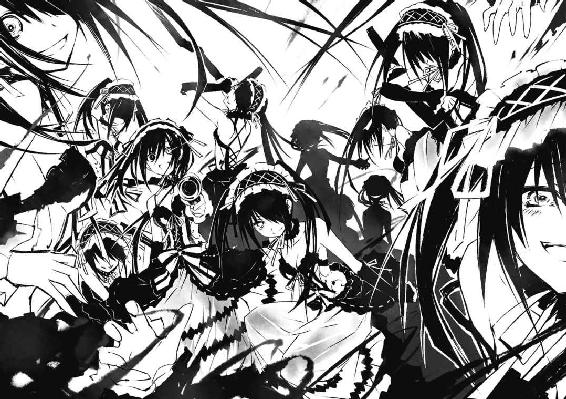
降り注ぐ光は周囲に蠢く狂三を幾体も貫き、その身体を地面に跪かせた。
しかし、攻撃を逃れた周囲の狂三たちが空に飛び上がり、真那に襲いかかる。
「ふん......っ！」
真那がユニットを可変、迫り来る狂三たちの首を、腕を、胴を切り裂く。屋上に、バラバラと狂三の『部品』が撒き散らされた。
だが〈刻々帝〉の前で銃を握った狂三が、【七の弾】を装填し、真那に放つと──先ほどのように、真那の身体が一瞬空中で停止してしまう。
その隙に、無数の狂三たちが真那に群がっていった。
「真那──！」
士道は声を上げる。だが、どうしようもなかった。
十香と折紙は士道を守るように展開し、剣を振るっていたが──数に差がありすぎた。後方から、左右から取り囲まれて攻撃を加えられ、その場に取り押さえられてしまう。
そうなったなら、もう士道に為す術はなかった。両手をそれぞれ狂三に取られ、その場に押さえつけられる。
時間にして、五分にも満たない出来事だった。
しかし、それも当然だ。十香は力を十全には発揮できていない状態であるし──折紙もまた、十分な装備を持っていない。
唯一完全な精霊に対抗できるであろう真那が、天使によって無力化された瞬間、勝敗は決していたのだ。
「十香──折紙......真那......ッ!!」
両腕を取られ、地面に押さえつけられながら、士道はなんとか言葉を発した。
「ぐ......」
「────」
近くには、十香と折紙も士道と同じように取り押さえられている。双方、身体の至る所に傷を作り、苦しげに呼吸を漏らしていた。
士道の位置からだと、真那の姿だけが確認できない。空から屋上に落ちてきたのだけはわかったが、夥しい数の狂三の姿によって、視界が遮られていたのだ。
「うふふ、ふふ」
そんな中、悠然と微笑みながら、銃を握った狂三が士道の方に近づいてきた。
「ああ、ああ、長かったですわ。ようやく、士道さんをいただくことができますのね」
「や......っ、やめろ狂三！ シドーに近づくな！」
「......っ、放して──」
十香と折紙がもがくも、狂三たちの拘束から逃れることはできなかった。
狂三はくすくすと笑うと、士道の目の前で足を止めた。
と、そこで狂三は、何かを思いだしたように眉をぴくりと動かした。
「ふふ──そうですわ」
言って、左手に銃を預け、右手を頭上に掲げる。
すると、先ほどと同じように、街に空間震警報が鳴り響いた。
「な......っ、狂三、おまえ何を──」
「うふふ、ふふ。先ほどできなかったことをして差し上げますわ。まだ皆さん目覚めておられないでしょうし──うふふ、きっとたくさん死んでしまいますわねえ」
「や、やめろ......ッ！ そんなことしやがったら俺、舌噛んで──」
そう言いかけた瞬間、士道を取り押さえていた狂三たちが、左右から士道の口に細い指を差し入れ、顎と舌を押さえつけた。
「ふぐ......ッ!?」
「舌を......？ どうするんですの？」
狂三が笑い、右手を握る。すると先ほどのように、周囲に耳障りな高音が響き始めた。
「ふふ、ひひひ、ひひひひひひひッ！ さあ！ もう二度とわたくしを誑かせないよう、絶望を刻み込んで差し上げますわ！」
「やめろ──！」
まともに言葉を発音できない。だが、のどを震わさずにはいられなかった。
狂三はそんな士道の懇願を無視し、右手を振り下ろした。
狂三が──笑う。けらけら、けたけたと。
「あ────ッはははははははははははははははははははははははははは────っ!!」
瞬間、来禅高校の周囲の空から凄まじい音が響き──地震のように空気が震えた。
だが。
「あ──はァ......？」
数秒のあと、その笑い声は疑問符によって上書きされた。
狂三が、怪訝そうに辺りを見回す。
それはそうだろう。確かに空がずれるかのような、耳障りな音が響いた。近くで爆弾でも爆発したかのように、空気が震えた。
だが──それだけだったのだ。
「............？」
士道もまた、違和感に眉をひそめた。
空間震が起こった現場は、何度か見たことがある。まるで空間そのものがごっそりと削り取られたかのように、そこにあったものが丸ごと消失してしまうのだ。
しかし来禅高校の周囲には、今も変わらず街並みが広がっていた。
「これは......どういうことですの......？」
狂三が不審そうに眉を歪める。すると、
「──知らなかった？ 空間震はね、発生と同時に同規模の空間の揺らぎをぶつけると、相殺することができるのよ」
それに答えるように、頭上から、凜とした声音が響いてきた。
「──っ、何者ですの？」
狂三が頬をぴくりと動かし、右手に銃を握り直して顔を上に向ける。
そして士道も顔を上げ──目を見開いた。
空が、赤い。
最初の感想はそれだった。
屋上の上。士道や狂三たちの頭上に、炎の塊が浮遊していたのである。
そして──その炎の中に、一人の少女の姿があった。
和装のような格好をした女の子である。風になびく袂は、半ばから炎と同化しているかのように揺らめき、腕に腰に絡みつく炎の帯は、まるで天女の羽衣のようだった。
そしてその頭部には、無機的な角が二本、生えている。その様は、お姫様のようであり──鬼のようでもあった。
だが、士道がその少女に目を奪われた理由は、それだけではなかった。
呆然と、口を開く。
「琴、里......？」
そう。士道の妹にして、〈ラタトスク〉司令官。
炎を纏った少女の姿は──五河琴里にしか見えなかったのである。
琴里が、徐々に高度を下げ、士道の方にちらと視線を落としてくる。
「──少しの間、返してもらうわよ、士道」
「え......？」
琴里の言った意味がわからず、眉をひそめる。
「......っ、あ、れは──」
と、なぜだろうか、折紙が、士道も見たことがないくらい顔を驚愕に染めていた。
「──焦がせ、〈灼爛殲鬼〉」
次いで琴里が、その名を口にする。
すると再び彼女の周りに炎が生まれ、巨大な棍のような円柱形を形作っていった。
そして、琴里がその棍を手に取った瞬間、その側部から真っ赤な刃が出現する。
それは──あまりに巨大な、戦斧だった。
士道が言葉を失っていると、琴里はその巨大な戦斧を軽々と振り、狂三に向けた。
「さあ──私たちの戦争を始めましょう」
To be continued
あとがき
お久しぶりです橘公司です。三冊まとめてご購入してくださった方は初めまして橘・フィッツジェラルド・公司です。
『デート・ア・ライブ３ 狂三キラー』をお届けいたします。前巻までとは少し違う構成になりましたが、いかがでしたでしょうか。お楽しみいただけたなら幸いです。
ちなみに『狂三』は『くるみ』と読みます。『きょうぞう』じゃありません。明らかにおっさんですそれ。
と、ご報告を。なんとこの『デート・ア・ライブ』、アニメ化企画進行中だそうです！
早すぎますね。まだ三巻ですよ。クーガーもびっくりです。
詳細は続報をお待ちいただけるとありがたいです。ていうか私も、これを書いているつい二日前に聞いたばかりでびっくりしているのです。
むー......しかし、アニメか。つい三年前までは素人だったというのに、なんだか不思議な感じです。でもそういえば『蒼穹のカルマ』から数えてちょうど一〇冊目なんですねこの本。なんとなくキリがよくて素敵。
そんな大きなお話をいただけたのも、素敵なイラストを描いてくださるつなこさんや、毎巻尽力してくださる担当さん、出版にかかわる様々な方々、そしてこの本を手にとってくださっている皆様のおかげでございます。
これに浮かれることなく、一層兜の緒を締めていきたいと思います。これからもよろしくお願いします。
さて、読んでくださった方はわかると思いますが、今回はいつもより次巻への引きが強めになっております。
そして次回、『デート・ア・ライブ４』は、ついにあのキャラが表紙です。もしかしたらまだ本文を読んでいない方がいらっしゃるかもしれないので微妙にぼかし。
では、またお会いできることを願っております。
橘 公司
デート・ア・ライブ３
狂三キラー
橘 公司
平成23年12月1日 発行
発行者 山下直久
発行所 株式会社富士見書房
〒102-8144 東京都千代田区富士見1-12-14
http://www.fujimishobo.co.jp/
(C)2011 Koushi Tachibana, Tsunako/Fujimishobo